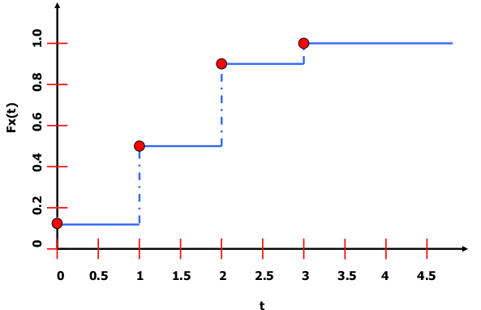
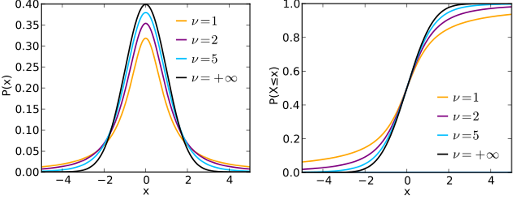
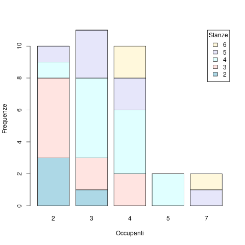
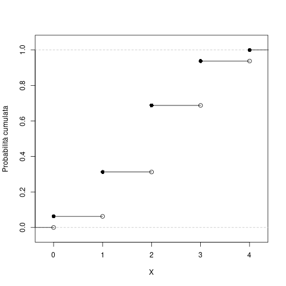
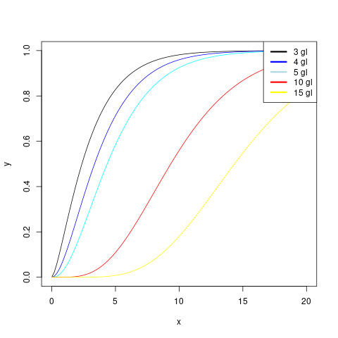

Riassunto Probabilità e Statistica per l'Informatica
Table of Contents
- 1. GitHub
- 2. Lezioni
- 2.1. Statistica Descrittiva
- 2.2. Calcolo delle probabilità
- 2.3. Distribuzioni Notevoli
- 2.3.1. Distribuzione Bernoulliana
- 2.3.2. Distribuzione Binomiale
- 2.3.3. Distribuzione di Poisson
- 2.3.4. Distribuzione Geometrica
- 2.3.5. Distribuzione Uniforme
- 2.3.6. Distribuzione triangolare
- 2.3.7. Distribuzione esponenziale
- 2.3.8. Distribuzione normale
- 2.3.9. Distribuzione Chi-Quadro
- 2.3.10. Distribuzione t di STUDENT
- 2.3.11. Distribuzione F di FISHER
- 2.4. Teoremi di Convergenza
- 2.5. Stime di parametri
- 3. Laboratorio
1 GitHub
2 Lezioni
2.1 Statistica Descrittiva
Raccolta di metodi e strumenti matematici atti ad organizzare una o più serie di dati in modo tale da evidenziare in forma sintetica eventuali:
- Simmetrie;
- Periodicità;
- Leggi di altro genere.
Ovvero in grado di descriverne in maniera immediatamente comprensibile le informazioni implicitamente contenute nei dati stessi.
Solitamente la serie di dati di cui si dispone è costituita da un numero limitato di osservazioni che devono essere rappresentative di un'ampia popolazione.
Con il termine popolazione si intende l'insieme degli elementi cui si riferisce l'indagine statistica.
Affrontare uno studio di statistica descrittiva richiede di tener presente che le tecniche di organizzazione dei dati varino in funzione dei modi di presentarsi delle caratteristiche (caratteri) degli elementi su cui è svolta l'indagine.
Caratteri qualitativi: quando le caratteristiche sono qualità o dati non numerici. Per es.: GUSTO = {dolce, amaro} e COLORE = {rosso, verde, giallo, …}.
Caratteri quantitativi: quando le caratteristiche sono grandezze misurabili.
- Quantitativi discreti: possono assumere un numero limitato di valori, per es. DADO = {1, 2, …, 6}.
- Quantitativi continui: assumono valori reali come la TEMPERATURA.
Supponiamo di considerare \(n\) elementi della popolazione e di rilevare, per ognuno di essi, il dato relativo al carattere quantitativo da esaminare.
Insieme dei dati: \(E = \{x_1, \dots, x_n\}\).
Numerosità: numero di elementi considerati \(n\).
Quando il carattere è discreto è comodo raggruppare i dati considerando l'insieme di tutti i valori assumibili (modalità del carattere) ed associare ad ognuno di tali valori il numero di volte che esso compare in \(E\).
\(N\) = numero totale di modalità.
\(S = \{s_1, \dots, s_N\}\) = insieme delle modalità.
Frequenza assoluta della modalità \(s_j, j = 1, \dots, N\): \(f_j, j = 1, \dots, N\). Data dal numero di elementi di \(E = \{x_1, \dots, x_n\}\) che hanno valore \(s_j\).
Distribuzione di frequenza assoluta dei dati osservati: funzione che associa ad ogni modalità la corrispondente frequenza assoluta. \(f: S \to \mathbb{N}\), \(S = \{s_1, \dots s_N\}\).
La frequenza cumulata assoluta per la modalità \(s_j\) è la somma delle frequenze assolute di tutte le modalità \(s_k \in S \mid s_k \leq s_j\). \(F_j = \sum_{s_k \leq s_j} f_k\).
Frequenza relativa: \(p_j = \frac{f_j}{n}\).
Frequenza cumulata relativa: \(P_j = \sum_{k:s_k \leq s_j} p_k\).
Si dicono distribuzione di frequenza cumulata assoluta, relativa e cumulata relativa dei dati osservali, le funzioni \(F, p\) e \(P\) che associano ad ogni modalità \(s_j\) le relative frequenze \(F_j, p_j, P_j\). Con \(n\) numero delle osservazioni.
Esempio:


La forma tabellare consente di fare facilmente alcune semplici osservazioni:
- Il numero di stanze che si presenta con maggior frequenza è 4 (24).
- 3 appartamenti su 10 hanno 4 stanze.
- 9 appartamenti su 10 hanno meno di 7 stanze.
Quando il carattere da studiare è continuo (o discreto con un numero elevato di modalità) è conveniente ricondursi a raggruppamenti come quelli appena trattati. Si suddivide l'insieme \(S\) delle modalità in classi.
Classe: un qualsiasi sottoinsieme di \(S\).
Partizione: ogni famiglia di classi tra loro disgiunte la cui unione è tutto \(S\).
La scelta delle classi con cui si suddivide l'insieme \(S\) è del tutto arbitraria anche se è necessario che esse formino una partizione di \(S\).
Le partizioni devono essere:
- Significative per il caso in esame.
- Sufficientemente numerose.
Ad ogni classe sono associate diverse grandezze che la caratterizzano come:
- Confine inferiore/superiore: valori estremi delle classe.
- Ampiezza: differenza tra confine superiore ed inferiore.
- Valore centrale: semi-somma tra i due confini.
Nel caso in cui il carattere esaminato sia continuo occorre specificare quando le classi sono chiuse, a destra o a sinistra, ovvero specificare se gli elementi dell'indagine il cui dato coincide con il confine della classe sono da raggruppare all'interno della classe stessa oppure no.
Per esempio:
\(S = [0.44, 5.42] \subset R\)
Volendo suddividere \(S\) in 5 classi potremmo scegliere:

I valori centrali delle classi sono \(\bar{x_k}\).
Le classi scelte non hanno tutte la stessa ampiezza, utile se si desidera che ogni classe sia abbastanza consistente. Gli appartamenti con valore maggiore di 4 migliaia di euro sono pochi, si è ritenuto opportuno adottare un intervallo di ampiezza maggiore dei restanti quattro intervalli.
Per esempio:

Indici di tendenza centrale
In generale un ricercatore che disponga di una serie di osservazioni statistiche e si proponga di descriverne le proprietà, fissa la propria attenzione sulla determinazione di un solo valore che rappresenti in qualche modo l'intera serie.
Per tale ragione sono stati introdotti gli indici di tendenza centrale o indici di posizione che sono quantità in grado di sintetizzare con un solo valore numerico i valori assunti dai dati.
Il valore che è da solo certamente più utile di ogni altro nello studio di una serie di dati è la media definita come media aritmetica tra tutti i valori dei dati osservati.
Supponiamo di indicare con \(x_1, \dots, x_n\) l'insieme delle osservazioni disponibili (valori) allora definiremo la media come \(\bar{x} = \frac{1}{n} \sum_{i = 1}^{n} x_i = \frac{x_1 + \dots + x_n}{n}\)
Nel caso in cui i dati siano di tipo quantitativo discreto allora avremo \(\bar{x} = \frac{1}{n} \sum_{i = 1}^{n} s_j f_j = \frac{s_1 f_1+ \dots + s_N f_N}{n}\)
\(\bar{x} = \sum_{j=1}^n s_j p_j = s_1 p_1 + \dots + s_n p_N\).
Momento \(k\)-esimo rispetto ad \(y\): \(M_{k, y} = \frac{1}{n} \sum_{i=1}^n (x_i - y)^k\).
Allora la media è anche il momento primo rispetto all'origine: \(x = \frac{1}{n} \sum_{i=1}^n x_i\).
\(x = \frac{1}{n} \sum_{i=1}^n (x_i - 0)^1\).
Un secondo indice di tendenza è rappresentata dalla mediana definita come quel numero reale che precede tanti elementi delle serie di dati quanti ne segue.
Se ordiniamo la serie di dati \(x_1, \dots, x_n\) in modo crescente ottenendo la serie x(1), …, x(n), la mediana \(\hat{x}\) è data:
- Dall'elemento di posto \(\frac{(n+1)}{2}\) se \(n\) è dispari.
- Dalla media aritmetica tra l'elemento di posto \(\frac{n}{2}\) e quello di posto \(\frac{n}{2} + 1\) se \(n\) è pari.
Un ultimo indice di tendenza è rappresentato dalla moda \(\tilde{x}\) definita come quel valore o classe cui corrisponde la massima frequenza assoluta.
La moda viene spesso utilizzata nel caso di dati qualitativi ovvero quando risulti impossibile definire media e mediana.
Si osservi che non è garantita l'unicità della moda. Infatti parleremo di:
- Distribuzione uni-modale nel caso in cui vi sia un'unica moda.
- Distribuzione multi-modale nel caso in cui vi siano più mode.
Per esempio:


Il calcolo della mediana richiede di ordinare la serie di dati.

Per quanto riguarda il calcolo della moda è banale ricavarla dalla tabella delle frequenze.
Si ricerca il valore con massima frequenza assoluta ottenendo che la moda è \(\tilde{x} = 4\).
Indice di variabilità
Siano date le seguenti serie di dati: \(E_1 = \{0.5, 0.8, 2.0, 2.7, 4.0\}\) ed \(E_2 = \{1.4, 1.7, 2.0, 2.1, 2.8\}\) che rappresentano il reddito mensile (migliaia di euro) di due gruppi distinti di individui (appartenenti a due diverse regioni). Le due serie di dati appaiono molto diverse tra loro. Gli elementi di \(E_1\) sono molto disomogenei tra loro mentre non lo sono quelli di \(E_2\). Entrambi i casi hanno però ugual media e mediana.
Gli indici di tendenza centrale, quindi, non sono utili per fornire informazioni circa l'omogeneità o disomogeneità dei dati.
Per ovviare a tale limite vengono introdotti gli indici che misurano il grado di omogeneità o dispersione dei dai.
Il più importante tra questi è senz'altro la varianza definita come: \(x^2 = \frac{1}{n} (x_i - \bar{x})^2\). Viene definita confrontando ogni singola osservazione \(x_i\) con la media \(\bar{x}\) e sommando i quadrati delle differenze così ottenute.
Ricordando la definizione \(M_{k, y} = \frac{1}{n} \sum_{i=1}^n (x_i - y)^k\) la varianza è allora il momento secondo rispetto alla media: \(x^2 = \frac{1}{n} (x_i - \bar{x})^2\).
Viene introdotto il quadrato perché in caso contrario \(\frac{1}{n} \sum_{i=1}^n (x_i - \bar{x}) = 0\). La varianza è tanto più grande quanto più i singoli dati si scostano dalla media, vale a dire tanto più i dati risultano disomogenei. Nel caso in esame avremo: \(s_{E_1}^2 = 1.69\) e \(s_{E_2}^2 = 0.22\). E pertanto la misura varianza consente di rappresentare il grado di disomogeneità della serie di dati.
Nel caso di caratteri quantitativi discreti, di cui sia nota la distribuzione di frequenza, la varianza può essere calcolata tramite le seguenti formule:
\(s^2 = \frac{1}{n} \sum_{j=1}^N (s_j - \bar{x})^2 f_j = \sum_{j=1}^N (s_j - \bar{x})^2 p_j\). Alternativamente la varianza può essere calcolata tramite la seguente formula: \(s^2 = \frac{1}{n} \sum_{i=1}^n x_i^2 - \bar{x}^{2}\).
Analogamente è possibile mostrare che per caratteri quantitativi discreti vale la seguente relazione: \(s^2 = \sum_{j=1}^{N} s_j^2 p_j - \bar{x}^2\).
Poiché la dimensione della varianza è il quadrato di quella dei dati, in molti casi si preferisce una diversa misura detta scarto quadratico medio:
\(s = \sqrt{s^2} = \sqrt{\frac{1}{n} \sum_{i=1}^n x_i^2 - \bar{x}^2} = \sqrt{\frac{1}{n} \sum_{i=1}^n (x_i - \bar{x})^2}\).
Il molti casi si è interessati a studiare fenomeni che coinvolgono due o più caratteri della popolazione tali da non potersi considerare separatamente. Si pensi ad esempio al caso in cui vengano considerati separatamente.
Si pensi ad esempio al caso in cui vengano considerati i seguenti caratteri:
- Valore al metro quadro.
- Superficie.
per un insieme di appartamenti di una data zona di una città.
In quel caso è necessario considerare congiuntamente le due caratteristiche, vale a dire procedere in modo differente a quanto fatto fin qui. Limitiamoci a considerare il caso di due caratteri contemporanei.
In questo caso l'insieme dei dati statistici \(E\) sarà costituito da coppie di valori \(E = \{(x_1, y_1), \dots, (x_n, y_n)\}\).
Ipotizziamo inoltre che entrambi i caratteri siano di tipo quantitativo e discreto.
I caratteri quantitativi continui vengono trattati in modo analogo previo una procedura di raggruppamento in classi.
Sia \(S = \{(s_j, u_k), j = 1, \dots, N; k = 1, \dots, M\}\) l'insieme delle coppie di valori assumibili dalla coppia di caratteri analizzati. Viene detta frequenza assoluta di \((s_j, u_k)\) la quantità \(f_{jk}\) definita come \(f_{jk}\) = numero di elementi \(E\) aventi valore \((s_j, u_k)\).
Definiremo distribuzione di frequenza assoluta doppia la funzione \(f\) che associa ad ogni coppia di valori \((s_j, u_k)\) la corrispondente frequenza \(f_{jk}\).
Analogamente al caso unidimensionale vengono solitamente definiti ed utilizzati altri tipi di frequenze:
- Frequenza cumulata assoluta: \(F_{jk} = \sum_{r:s_r \leq s_j; l:u_l \leq u_k} f_{rl}\).
- Frequenza relativa: \(p_{jk} = \frac{f_{jk}}{n}\).
- Frequenza cumulata relativa: \(P_{jk} = \sum_{r:s_r \leq s_j; l:u_l \leq u_k} p_{rl}\).
Con distribuzione di frequenza doppia si intende infine una qualsiasi delle funzioni \(f, F, p, P\) che associ ad ogni coppia (sj, uk) la corrispondente frequenza. In aggiunta alla distribuzioni appena citate, analoghe a quelle del caso unidimensionale, esistono altre distribuzioni di frequenza spesso prese in considerazione.
Distribuzioni marginali: distribuzioni dei singoli caratteri presi indipendentemente dagli altri.
Nel caso ci si riferisca al primo carattere, per ogni valore assumibile ad esso, sia \(s_j\), è detta frequenza assoluta marginale la quantità \(f_{xj}\) data dal numero di elementi \(E\) il cui primo carattere ha valore \(s_j\), vale a dire \(f_{xj}\) = numero di elementi \(E\) aventi valore \((s_{j}, *)\).
Analogamente avremo:
- Frequenza assoluta marginale: \(F_{xj}\) = somma delle frequenze assolute marginali di tutti i valori \(s_k\) tali che \(s_k \leq s_j\).
- Frequenza relativa marginale: \(p_{xj}\) = rapporto tra frequenza assoluta marginale \(f_{xj}\) e numerosità \(n\) delle osservazioni.
- Frequenza cumulata relativa marginale: \(P_{xj}\) = somma delle frequenze relative marginali di tutti i valori \(s_k\) tali che \(s_k \leq s_j\).
Per esempio:
Es.
Consideriamo due serie \(\{x_i\}\ \{y_i\},\ i = 1, \dots, n\) e poniamo a confronto le variazioni delle coppie di dati rispetto ai corrispondenti valori medi considerando le coppie di scarti \(x_i - \bar{x}\) e \(y_i - \bar{y}\). Risulta abbastanza naturale pensare che esista una relazione di dipendenza tra i due caratteri se a valori positivi (negativi) dello scarto \(x_i - \bar{x}\) corrispondono sistematicamente o quasi sempre valori positivi o negativi dello scarto \(y_i - \bar{y}\).
Covarianza: si definisce covarianza \(c_{xy}\) (dei dati o campionaria) delle due serie di dati \(\{x_i\}\ \{y_i\}\): \(c_{xy} = \frac{1}{n} \sum_{i=1}^n (x_i - \bar{x})(y_i - \bar{y})\), \(s^2 = \frac{1}{n} \sum_{i=1}^n (x_i - \bar{x})^2\).
La covarianza assume un valore positivo (negativo) che diviene grande in valore assoluto nel caso in cui i termini prodotto \((x_i - \bar{x}) (y_i - \bar{y})\) abbiano segni concordi (positivi o negativi che siano). In questo caso si parla di serie statistiche fortemente correlate o per meglio dire di dati delle serie fortemente correlati.
Nel caso opposto vale a dire nel caso in cui i dati delle serie siano incorrelati (non vi è dipendenza degli uni dagli altri) avremo che i prodotti \((x_i - \bar{x})(y_i - \bar{y})\) avranno segni diversi (discordi in segno) e la covarianza, per come definita, risulterà piccola in valore assoluto (prossima al valore 0). La covarianza può essere calcolata anche tramite la seguente formula:
\(c_{xy} = \frac{1}{n} \sum_{i=1}^n x_i y_i - \bar{x} \bar{y}\), \(s^2 = \frac{1}{n} \sum_{i=1}^n x_i^2 - \bar{x}^2\).
Nel caso in cui i dati si riferiscano a caratteri quantitativi discreti, di cui è nota la distribuzione di frequenza doppia, è possibile utilizzare le seguenti formule per il calcolo della covarianza.
\(c_{xy} = \sum_{j=1}^N \sum_{k=1}^M (s_j - \bar{x})(u_k - \bar{y}) p_{jk} = \sum_{j=1}^N \sum_{k=1}^M s_j u_k p_{jk} - \bar{x} \bar{y}\).
Due serie di dati \(\{x_i\}\ \{y_i\}\) si dicono:
- Statisticamente incorrelate se \(\sum_{i=1}^n (x_i - \bar{x})(y_i - \bar{y}) = 0\) e quindi \(c_{xy} = \frac{1}{n} \sum_{i=1}^n (x_i - \bar{x})(y_i - \bar{y}) = 0\);
- Statisticamente indipendenti se vale la seguente condizione: \(\forall j = 1, \dots, N\) e \(k = 1, \dots, M \quad p_{jk} = p_j p_k\), con \(p_{jk} = \frac{f_{jk}}{n}\), \(p_j = \frac{f_j}{n}\), \(p_k = \frac{f_k}{n}\).
Due serie di dati statisticamente indipendenti sono incorrelate mentre non è necessariamente vero il contrario.
Statisticamente indipendenti \(\implies\) statisticamente incorrelate.
Statisticamente incorrelate \(\not\implies\) statisticamente indipendenti.
Infatti: \(\sum_{i=1}^n (x_i - \bar{x})(y_i - \bar{y}) = \sum_{i=1}^n (x_i - \bar{x}) \sum_{i=1}^n (y_i - \bar{y}) = 0\).
Nel caso bidimensionale (variabili \(x\) e \(y\)) la covarianza si può rappresentare attraverso una matrice \(2 \times 2\):
\begin{equation*} c = \begin{bmatrix} c_{xx} &c_{xy}\\ c_{xy} &c_{yy} \end{bmatrix} = \begin{bmatrix} var(x) &cov(x, y)\\ cov(x, y) & var(y) \end{bmatrix} \end{equation*}È indipendente dalla grandezza delle varianze.
Per una misura indipendente dalla variabilità delle grandezze si usa la matrice di correlazione:
\begin{equation*} \text{Corr} = \begin{bmatrix} \frac{c_{xx}}{\sigma_x^2} &\frac{c_{xy}}{\sigma_x \sigma_y}\\ \frac{c_{xy}}{\sigma_x \sigma_y} &\frac{c_{yy}}{\sigma_y^2} \end{bmatrix} = \begin{bmatrix} 1 &corr(x, y)\\ corr(x, y) &1 \end{bmatrix} \end{equation*}Nel caso di \(m\) variabili,
\begin{equation*} \text{Corr} = \begin{bmatrix} 1 &\frac{c_{x_1 x_2}}{\sigma_{x_1} \sigma_{x_2}} &\dots &\frac{c_{x_1 x_m}}{\sigma_{x_1} \sigma_{x_m}}\\ \frac{c_{x_1 x_2}}{\sigma_{x_1} \sigma_{x_2}} &1 &\dots &\vdots\\ \vdots &\ddots &\ddots &\vdots\\ \frac{c_{x_1 x_m}}{\sigma_{x_1} \sigma_{x_m}} &\dots &\dots &1 \end{bmatrix} \end{equation*}Regressione lineare per serie di dati
Consideriamo un campione costituito da un insieme \(E\) di coppie di dati, relativi a due caratteri \(x\) ed \(y\): \(E = \{L(x_1, y_1), \dots, (x_n, y_n)\}\). In molti casi ci si pone la questione se tra tali caratteri \(x\) ed \(y\) esista un legame di tipo funzionale o una relazione di tipo funzionale che ne descriva in modo soddisfacentemente corretto il legame realmente esistente. Un'analisi tesa a rispondere a una tale questione viene detta analisi di regressione.
Un tale studio viene affrontato pensando ad uno dei due caratteri come ad una variabile indipendente, sia per esempio il carattere \(x\), e cercando di stabilire quale funzione \(f\), all'interno di una ben determinata classe, consenta di scrivere la seguente relazione \(y = f(x)\) in modo che essa descriva al meglio il legame tra la variabile indipendente \(x\) e il carattere \(y\) che a questo punto viene interpretato coma variabile dipendente. Occorre specificare cosa si intende per funzione che meglio descrive il legame tra i due caratteri. Solitamente si determina la funzione \(f\) che minimizza le distanze tra i valori osservati del carattere \(y\) e quelli che si otterrebbero per il carattere \(y\) se la relazione che lega il carattere \(y\) ad \(x\) fosse proprio quella descritta da \(f\).
In altri termini quello che si cerca è la funzione \(f\) che minimizza la seguente quantità \(g(f) = \sum_{i=1}^n [f(x_i) - y_i]^2\) dove il quadrato si utilizza affinché le distanze vengano tutte considerate con segno positivo. Nel caso particolare in cui \(f\) sia vincolata ad essere una funzione lineare (retta) allora parleremo di regressione lineare.
Nel caso della regressione lineare il problema si riduce alla determinazione dei coefficienti \(m\) e \(q\) della retta \(y = mx + q\) per cui risulti minima la quantità \(g(m, q) = \sum_{i=1}^n [mx_i + q - y_i]^2\).
I valori \(mx_i + q\) sono proprio i valori \(f(x_i)\) che rappresentano l'approssimazione alle \(y_i\) tramite la funzione \(f\).
Risolvendo il sistema algebrico ottenuto e ricordando le definizioni di varianza e covarianza si ottiene in definitiva \(m = \frac{c_{xy}}{s_x^2}\) e \(q = \bar{y} - \frac{c_{xy}}{s_x^2} \bar{x}\).
Questo metodo consente di determinare la retta che meglio descrive la relazione tra i due caratteri senza peraltro fornire alcuna indicazione circa il grado di approssimazione che è in grado di offrire. Per tale motivo è stata introdotta una nuova grandezza detta coefficiente di correlazione lineare: \(r_{xy} = \frac{c_{xy}}{s_x s_y}\).
L'importanza di tale coefficiente deriva dal fatto che esso assume valori sempre appartenenti all'intervallo \([-1, 1]\). Inoltre:
- È nullo nel caso in cui le serie di dati sono statisticamente incorrelate.
- È pari ad 1 (in valore assoluto) quando le coppie di dati si trovano esattamente sulla retta \(y = mx + q\).
Pertanto esso rappresenta il grado di allineamento delle coppie di dati.
Per esempio, supponiamo di voler controllare la resistenza di un campione di 15 travi di cemento, tutte ottenute dalla stessa gettata, misurando sia i carichi di prima lesione che quelli di rottura finale e supponiamo che i dati disponibili siano i seguenti:

È possibile computare il coefficiente di correlazione che sarà pari a \(r_{xy} = 0.0195\).

Regressione (modello lineare) per serie di dati
Abbiamo accennato in precedenza al fatto che non si è sempre vincolati alla scelta di una retta tra le funzioni che possono descrivere la relazione tra le due serie di dati.
Quanto esposto in precedenza può essere applicato anche nel caso in cui si considerino relazioni funzionali di diversa natura, la cui scelta può essere suggerita da una qualche impressione derivante da ispezioni visive dei dati o da altre forme di conoscenza circa il fenomeno analizzato.
Per esempio, si faccia ancora riferimento ai dati dell'esempio precedente e si valuti l'opportunità di sfruttare il seguente modello:

Si noti inoltre che molte relazioni funzionali non lineari possono essere ricondotte a tali (lineari) con opportune trasformazioni delle variabili. Per esempio, una relazione del tipo \(y = a \cdot e^{bx}\) può essere riscritta come \(\tilde{y} = \beta \cdot \tilde{x} + \alpha\), dove \(\tilde{y} = \log{(y)}\), \(\tilde{x} = x\) e \(\alpha = \log{(a)}\), \(\beta = b\).
La determinazione dei coefficienti \(a\) e \(b\) che meglio permettono di approssimare una serie di punti \(\{x_i, y_i\}\) può essere effettuata riconducendosi ad una regressione lineare ovvero determinando i coefficienti \(\alpha\) e \(\beta\) che meglio approssimano, linearmente, la serie dei punti \(\{\tilde{x_i} \tilde{y_i}\}\), dove \(\tilde{y_i} = \log{(y_i)}\) e \(\tilde{x_i} = x_i\). Una volta determinati tali coefficienti, il calcolo di \(a\) e \(b\) risulta immediato.
Alcune funzioni riconducibili a lineari:
- \(y = a \log{(x)} + b\);
- \(y = a x^b\);
- \(y = \frac{1}{a + b \cdot e^{-x}}\), \(\beta = b\).
2.2 Calcolo delle probabilità
Teoria (assiomatica o frequentista o soggettiva) che riguarda il calcolo della probabilità del verificarsi di certi eventi composti di eventi elementari. È lo strumento base per la statistica, che trae conclusioni su una popolazione, utilizzando i dati osservati su una collezione di individui (campione) appartenenti alla popolazione (inferenza su popolazione).
Al fine di presentare l'impostazione assiomatica supponiamo di voler studiare una situazione (esperimento) avente un insieme \(\Omega\) di diversi possibili esiti, ben distinti tra loro. Ogni sottoinsieme \(A\) di \(\Omega\) viene detto evento. Ad ogni evento \(A\) è associabile una quantità numerica detta probabilità e denotata tramite \(P(A)\) il cui significato varia a seconda dell'impostazione.
Impostazione assiomatica
L'insieme \(\Omega\) che può contenere un numero finito o infinito di elementi viene detto spazio campione.
Ogni evento può essere elementare se è costituito da un elemento singolo di \(\Omega\), oppure composto in caso contrario.
Due eventi \(A\) e \(B\) vengono detti incompatibili se sono sottoinsiemi disgiunti.
Si definisce insieme delle parti di \(\Omega\) l'insieme di tutti i suoi sottoinsiemi e lo si denota tramite \(\mathcal{P}(\Omega)\)
La probabilità deve essere definita per tutti gli elementi di \(\mathcal{P}(\Omega)\) con particolari proprietà (algebra di Boole o \(\sigma\)-algebre).
Per esempio:
Possibili eventi sono i suoi sottoinsiemi, \(\{R\}\) e \(\{B, G\}\)
Un altro esempio:
Consideriamo un esperimento che può fornire come risultato un qualsiasi valore reale in un intervallo \([a, b] \subseteq \mathbb{R}\).
In questo caso avremo:
Definizione di probabilità secondo Kolmogorov
Viene detta misura di probabilità ogni applicazione \(P : \mathcal{P}(\Omega) \to \mathbb{R}_0^+\) che associa un valore reale ad ogni sottoinsieme di \(\Omega\) e per cui valgono le seguenti proprietà:
Per ogni \(A \subseteq \Omega\) esiste ed è unico un numero \(P(A) \geq 0\).
Interpretando \(P(A)\) come frequenza relativa dell'evento \(A\), essa è compresa tra 0 e 1.
- \(P(\Omega) = 1\);
- Data la famiglia \(\{A_i, i \in I \subseteq \mathbb{N}\}\) di eventi incompatibili vale \(P\left(\bigcup_{i \in I} A_i \right) = \sum_{i \in I} P(A_i)\);
Ogni misura di probabilità è una funzione che assegna valori numerici a sottoinsiemi di \(\Omega\) e non ai suoi elementi (eventi elementari), come contrariamente si è portati a pensare.
Per esempio consideriamo lo spazio campione: \(\Omega = [a, b] \subseteq \mathbb{R}\). Una misura di probabilità da assegnare a \(\mathcal{P}(\Omega) \to \mathbb{R}_0^+\) definita ponendo \(P((c, d)) = \frac{d-c}{b-a}\) quando l'evento che consideriamo è un intervallo \((c, d) \subseteq [a, b] \quad a \leq c < d \leq b\). Possiamo, per esempio, porre \(P(\{s\}) = 0\) per ogni \(s \in [a, b]\), in modo da poter calcolare anche la probabilità di eventi con estremi inclusi.
Dalle 3 proprietà che definiscono le misure di probabilità, discendono in modo immediato alcune proprietà aggiuntive. Sia \(P\) una misura di probabilità definita sull'insieme delle parti \(\mathcal{P}(\Omega)\) di uno spazio campione \(\Omega\). Allora:
- Per ogni \(A \subseteq \Omega\) vale \(P(\bar{A}) = 1 - P(A)\);
- Per ogni \(A \subseteq \Omega\) vale \(P(A) \leq 1\);
- Per ogni \(A, B \subseteq \Omega\) se \(A \subseteq B\) allora \(P(A) \leq P(B)\);
- Per ogni \(A, B \subseteq \Omega\) anche non incompatibili, vale \(P(A \cup B) = P(A) + P(B) - P(A \cap B)\);
- Per ogni \(A \subseteq \Omega\) vale \(P(\bar{A}) = 1 - P(A)\), infatti \(1 = P(A \cup \bar{A}) = P(A) + P(\bar{A}) - P(A \cap \bar{A}) = P(A) + P(\bar{A}) - 0\);
- Per ogni \(A, B \subseteq \Omega\) anche non incompatibili, vale \(P(A \cup B) = P(A) + P(B) - P(A \cap B)\);
- Per ogni \(A, B \subseteq \Omega\) anche non incompatibili, vale \(P(A \cup B) = P(A \cap \bar{B}) + P(A \cap B) + P(\bar{A} \cap B)\);
- Per ogni \(A, B \subseteq \Omega\) anche non incompatibili, vale \(P(A) = P(A \cap \bar{B}) + P(A \cap B)\) e \(P(B) = P(A \cap B) + P(\bar{A} \cap B)\).
In base alle precedenti proprietà è possibile osservare che la proprietà:
- Data la famiglia \(\{A_i, i \in I \subseteq N\}\) di eventi incompatibili vale \(P\left(\bigcup_{i \in I} A_i \right) = \sum_{i \in I} P(A_i)\)
È un caso particolare della proprietà:
- Per ogni \(A, B \subseteq \Omega\) anche non incompatibili, vale \(P(A \cup B) = P(A) + P(B) - P(A \cap B)\) nel caso in cui gli eventi \(A\) e \(B\) siano incompatibili (\(A \cap B = \emptyset\)).
Per esempio, supponiamo di avere effettuato un investimento immobiliare e di avere a disposizione 3 appartamenti di diverso valore da vendere. Supponiamo di essere interessati a fare delle stime sui ricavi del nostro investimento tenendo conto di quanti di tali appartamenti saranno stati venduti entro la fine dell'anno. Un modo per descrivere tutte le possibili situazioni relative alle vendite alla fine dell'anno consiste nell'associare a ciascuna di esse una terna \((\alpha_1, \alpha_2, \alpha_3)\), dove \(\alpha_i = 1\) se l'appartamento \(i\)-mo sarà stato venduto alla fine dell'anno e \(\alpha_i = 0\) in caso contrario.
In questo modo l'insieme delle possibili situazioni alla fine dell'anno può essere descritta come \(\Omega = \{(0, 0, 0), (1, 0, 0), (0, 1, 0), (0, 0, 1), (1, 1, 0), (1, 0, 1), (0, 1, 1), (1, 1, 1)\}\).
Supponiamo ora che gli 8 casi realizzabili (eventi elementari) siano egualmente possibili ovvero che la misura di probabilità adatta a descrivere il fenomeno sia la \(P\) definita come segue: \(P(A) = \frac{\text{numero di elementi di } A}{\text{numero di elementi di } \Omega}\) per ogni elemento \(A\) di \(\Omega\).
Consideriamo ora l'evento \(A\): "almeno un appartamento viene venduto".
Siamo pertanto interessati al seguente evento: \(A = \{(1, 0, 0), (0, 1, 0), (0, 0, 1), (1, 1, 0), (1, 0, 1), (0, 1, 1), (1, 1, 1)\}\). Poiché esso contiene 7 elementi su un totale di 8 casi possibili, allora: \(P(A) = \frac{\text{numero di elementi di } A}{\text{numero di elementi di } \Omega} = \frac{7}{8}\).
Consideriamo ora l'evento \(B\): "almeno due appartamenti vengono venduti". È abbastanza chiaro che ogni situazione di vendita contenuta in \(B\) lo è a maggior ragione in \(A\) (almeno 1 venduto contiene almeno 2 venduti) per cui \(B \subseteq A\). In effetti avremo \(B = \{(1, 1, 0), (1, 0, 1), (0, 1, 1), (1, 1, 1)\}\) da cui si ricava \(P(B) = \frac{4}{8} = \frac{1}{2}\), \(P(A) = \frac{7}{8}\). Pertanto vale quanto asserito in precedenza, ovvero che \(B \subseteq A \implies P(B) \leq P(A)\). Infine, consideriamo l'evento \(C\) "il terzo appartamento viene venduto", ovvero \(C = \{(0, 0, 1), (1, 0, 1), (0, 1, 1), (1, 1, 1)\}\). Supponiamo di essere interessati a determinare la probabilità di \(B \cup C\): \(P(B \cup C) = P(B) + P(C) - P(B \cap C) = \frac{1}{2} + \frac{1}{2} = \frac{5}{8}\) essendo \(B \cap C = \{(1, 0, 1), (0, 1, 1), (1, 1, 1)\}\). In effetti \(P(B \cup C)\) avrebbe potuto essere determinata direttamente osservando che \(B \cup C = \{(0, 0, 1), (1, 1, 0), (1, 0, 1), (0, 1, 1), (1, 1, 1)\}\).
Esempio: da un'urna con 6 palline bianche e 5 palline nere se ne estraggono 2. Qual'è la probabilità che una delle palline estratte sia bianca e l'altra nera?.
Lo spazio campione ha \(11 \cdot 10 = 110 \text{elementi}\). Ci sono \(6 \cdot 5 = 30\) modi in cui la prima estratta è bianca e la seconda è nera, e \(5 \cdot 6 = 30\) modi in cui la prima estratta è nera e la seconda è bianca. Quindi, pensando che tutti i punti dello spazio campione siano egualmente probabili, la probabilità cercata è: \(\frac{30 + 30}{110} = \frac{6}{11}\).
Secondo esempio: in quanti modi si possono ordinare le lettere \(a, b, c\) (senza ripetizione)?
Ce ne sono 6 (\(3 \cdot 2\)): abc, acb, bac, bca, cab, cba. Ciascuno di questi ordinamenti è una permutazione.
In generale \(n \cdot (n-1) \cdot \cdots \cdot 2 \cdot 1 = n!\)
Terzo esempio: qual'è la probabilità che tra \(n\) persone ce ne siano almeno 2 che compiono gli anni lo stesso giorno dell'anno? → \(356 \cdot \dots 365 = 365^n\) possibilità.
Ragioniamo sull'evento negato, calcoliamo la probabilità che le \(n\) persone abbiano tutte compleanni in giorni diversi:
- La prima persona ha 365 possibili giorni per il proprio compleanno;
- La seconda può averlo solo nei rimanenti 364;
- La terza solo nei rimanenti 363.
- Ecc.
La probabilità che i compleanni non coincidano in nessun caso (per nessuna delle \(n\) persone) è: \(\frac{365 \cdot 364 \cdot \cdots \cdot (365 - n+1)}{365^n}\). Pertanto, la probabilità che almeno 2 persone su \(n\) compiano gli anni gli anni lo stesso giorno è \(1 - \frac{365 \cdot 364 \cdot \dots \cdot (365 - n+1)}{365^n}\)
Nel caso di n = 23:
La probabilità che i compleanni non coincidano in nessuno caso (per nessuna delle \(n\) persone) è: \(\frac{365 \cdot 364 \cdot \cdots \cdot (365 - 23 + 1)}{365^n} = 0.4927\).
Pertanto, la probabilità che almeno 2 persone su \(n\) compiano gli anni lo stesso giorno è: \(1 - \frac{365 \cdot 364 \cdot \cdots \cdot (365 - 23 + 1)}{365^n} = 0.5073\).
Si voglia determinare il numero di differenti gruppi di \(r\) oggetti che è possibile costruire (formare) usando \(n\) oggetti diversi (non importa l'ordine degli oggetti).
Per esempio: quanti gruppi diversi di 3 oggetti è possibile costruire dai 5 oggetti \(A, B, C, D, E\)?
- Il primo può esser scelto in 5 modi diversi;
- Il secondo in 4;
- Il terzo in 3.
Però, lo stesso gruppo di 3, per esempio \(ABC\), può presentarsi come \(ABC, ACB, BAC, BCA, CAB, CBA\), ma il gruppo è sempre lo stesso. Perciò il numero di gruppi diversi è: \(\frac{5 \cdot 4 \cdot 3}{3 \cdot 2 \cdot 1} = 10\).
In generale: \(\frac{n (n-1) \cdots (n - r +1)}{r!} = \frac{n!}{(n-r)! r!} = \binom{n}{r}\) detto coefficiente binomiale, numero delle combinazioni di \(n\) oggetti presi a gruppi di \(r\).
Esempio: si selezioni a caso un gruppo di 5 persone da un insieme di 6 uomini e 9 donne. Qual'è la probabilità che nel gruppo selezionato ci siano esattamente 3 uomini e 2 donne?
Ognuna delle \(\left(\begin{smallmatrix}15\\5\end{smallmatrix}\right)\) combinazioni è ugualmente probabile. Ci sono \(\left(\begin{smallmatrix}6\\3\end{smallmatrix}\right)\) scelte possibili per la scelta dei 3 uomini e \(\left(\begin{smallmatrix}9\\2\end{smallmatrix}\right)\) per la scelta delle 2 donne.
Perciò la probabilità \(\frac{\left(\begin{smallmatrix}6\\3\end{smallmatrix}\right) \cdot \left(\begin{smallmatrix}9\\2\end{smallmatrix}\right)}{\left(\begin{smallmatrix}15\\5\end{smallmatrix}\right)} = \frac{240}{1001}\)
Siano dati uno spazio campione \(\Omega\) ed una misura di probabilità \(P\) definita sul suo insieme delle parti \(\mathcal{P}(\Omega)\)
Secondo l'impostazione assiomatica di probabilità, considerati due eventi, \(A\) e \(B\), con \(P(B) > 0\), è detta probabilità dell'evento \(A\) condizionata dall'evento \(B\) la quantità \(P(A|B) = \frac{P(A \cap B)}{P(B)}\).
Per esempio: si consideri un lotto di produzione di transistor. 5 di questi sono difettosi immediatamente, 10 parzialmente difettosi (non funzionano dopo un uso di 2 ore), e 25 sono accettabili. Si scelga a caso un transistor. Se non risulta immediatamente difettoso, qual'è la probabilità che sia accettabile (cioè funzioni dopo un uso di 2 ore)?
Poiché non risulta immediatamente difettoso, non è uno dei 5: quindi \[ P(\text{accett.}|\text{non immed. difet.}) = \frac{P(\text{accett.} \cap \text{non immed. difet.})}{P(\text{non immed. difet.})} = \frac{P(\text{accett.})}{P(\text{non immed. difet.})} = \frac{\frac{25}{40}}{\frac{35}{40}} = \frac{5}{7}\]
Si riprenda in esame l'esempio degli appartamenti. Si supponga di essere interessati a determinare la probabilità dell'evento \(B\) "almeno 2 appartamenti verranno venduti" sapendo con certezza che si è verificato l'evento \(C\) "il terzo appartamento viene venduto".
In questo caso ci troviamo di fronte ad un condizionamento, infatti il verificarsi certo dell'evento \(C\) influisce sulla possibilità che si verifichi anche \(B\). La nuova probabilità da associare a \(B\) diventa allora: \(P(B \cap C) = \frac{3}{8}\).
\[P(B|C) = \frac{P(B \cap C)}{P(C)} = \frac{P(B \cap C)}{P(C)} = \frac{\frac{3}{8}}{\frac{4}{8}} = \frac{3}{4}\] con \(P(B) = \frac{1}{2}\) e \(P(C) = \frac{4}{8}\)
Due eventi \(A, B \in \mathcal{P}(\Omega)\) sono detti stocasticamente indipendenti se vale la seguente condizione: \(P(A) = P(A|B)\) ovvero se vale \(P(B) = P(B|A)\), o ancora se \(P(A \cap B) = P(A)P(B)\).
Si continui con l'ultimo esempio: si consideri l'evento \(C\) "il terzo appartamento viene venduto" e l'evento \(D\) "il secondo appartamento viene venduto". In base alla definizione condizionata risulta \[ P(C|D) = \frac{P(C \cap D)}{P(D)} = \frac{\frac{2}{8}}{\frac{4}{8}} = \frac{1}{2} = P(C)\] con \(P(C \cap D) = \frac{2}{8}\) e \(P(D) = \frac{4}{8}\), essendo \(D = \{(0, 1, 0), (1, 1, 0), (0, 1, 1), (1, 1, 1)\}\), \(C \cap D = \{(0, 1, 1), (1, 1, 1)\}\).
Pertanto è possibile concludere come gli eventi \(C\) e \(D\) risultino stocasticamente indipendenti. Infatti varranno anche le altre relazioni collegate.
Osserviamo che l'indipendenza è influenzata non solo dagli eventi considerati ma anche dalla particolare misura di probabilità \(P\) adottata. Infatti, scelte differenti per \(P\), legate a considerazioni non matematiche, avrebbero potuto portare ad esempio ad avere gli eventi \(C\) e \(D\) non stocasticamente indipendenti.
Si riprenda in esame l'urna con 4 palline fisicamente identiche ma di diverso colore, una rossa, due blu e una verde, (pertanto faremo riferimento alla probabilità \(P'\) e non a \(P\)).
Supponiamo di estrarre in maniera casuale una pallina, e di fare poi una seconda estrazione tenendo fuori dall'urna la pallina appena estratta (senza reimmissione). Si voglia calcolare la probabilità che le 2 palline estratte in questo modo siano quelle blu.
Consideriamo gli eventi \(A_1\): "la pallina è blu" e \(A_2\): "la seconda pallina è blu" e calcoliamo la probabilità di \(A_1 \cap A_2\) facendo uso della seguente formula: \(P'(A_1 \cap A_2) = P'(A_2|A_1) P'(A_1)\). A tal scopo si osservi che \(P'(A_1) = \frac{1}{2}\) e \(P'(A_2|A_1) = \frac{1}{3}\). In definitiva avremo \(P'(A_1 \cap A_2) = P'(A_2|A_1) P'(A_1) = \frac{1}{2} \frac{1}{3} = \frac{1}{6}\).
Nello stesso caso, ma con reimmissione della pallina pescata: \(P'(A_1 \cap A_2) = P'(A_1) P'(A_1) = \frac{1}{2} \frac{1}{2} = \frac{1}{4}\).
La formula \(P (A \cap B) = P(A|B) P(B)\) può essere generalizzata al caso dell'intersezione di più eventi, in tal caso prende il nome di "formula del prodotto" e diviene \(P(A_1 \cap \dots \cap A_n) = P(A_1) P(A_2|A_1) \dots P(A_n|A_1 \cap \dots \cap A_{n-1})\) ed è valida comunque sia scelto \(n \in \mathbb{N}_+\) e la famiglia \(\{A_i, i = 1, \dots, n\}\) di sottoinsiemi di \(\Omega\).
Torniamo all'urna e supponiamo di effettuare 3 estrazioni, senza reimmissione. Si vuole calcolare la probabilità che la prima volta venga estratta una pallina blu, la seconda una rossa e la terza una verde e denotiamo questi eventi rispettivamente con \(A_1, A_2\) e \(A_3\): \(P(A_1 \cap A_2 \cap A_3) = P(A_1) P(A_2|A_1)P(A_3|A_1 \cap A_2)\). \(P(A_1) = \frac{1}{2}\), \(P(A_2|A_1) = \frac{1}{3}\) e \(P(A_3|A_1 \cap A_2) = \frac{1}{2}\). Quindi \(P(A_1 \cap A_2 \cap A_3) = \frac{1}{2} \frac{1}{3} \frac{1}{2} = \frac{1}{12}\).
È utile ricordare altre formule particolarmente importanti nel calcolo delle probabilità. Consideriamo una partizione \(\{A_i, i = 1, \dots, n; A_i \subseteq \Omega\}\) dello spazio campione \(\Omega\) ovvero una famiglia di eventi mutualmente incompatibili e tali che la loro unione sia \(\Omega\) stesso. La prima formula è nota come "formula delle probabilità totali": \[P(B) = \sum_{i=1}^n P(B|A_i) P(A_i)\]
Caso particolare: \(A\) e \(B\) siano eventi. \(A = (A \cap B) \cup (A \cap \bar{B})\). \((A \cap B)\) e \((A \cap \bar{B})\) sono esclusivi, quindi: \[ P(A) = P(A \cap B) + P(A \cap \bar{B}) = P(A|B) P(B) + P(A|\bar{B}) P(\bar{B}) = P(A|B) P(B) + P(A|\bar{B})[1 - P(B)]\] Permette di calcolare la probabilità di un evento condizionando al fatto che un secondo evento si sia o meno verificato.
Per esempio, un'assicurazione decide di dividere i guidatori in 2 categorie: facili agli incidenti (\(A\)) e non facili (\(\bar{A}\)). Le statistiche dicono che un guidatore facile agli incidenti ha probabilità 0.4 di fare un incidente nell'anno mentre uno non facile agli incidenti ha probabilità 0.2 di fare un incidente nell'anno.
Supponiamo che il 30% dei guidatori sia facile agli incidenti, qual'è la probabilità che un guidatore abbia un incidente nell'anno?
Sia \(A_1\) l'evento "il guidatore ha un incidente": \(P(A_1) = P(A_1|A) P(A) + P(A_1|\bar{A}) P(\bar{A}) = 0.4 \cdot 0.3 + 0.2 \cdot 0.7 = .26\)
Se un cliente ha effettivamente un incidente nell'anno, qual'è la probabilità che sia facile agli incidenti?
Si sa che inizialmente la stima della probabilità che fosse facile agli incidenti era 0.3. Sapendo che ha avuto un incidente, rivalutiamo questa probabilità con la nuova informazione:
Dalle formule viste: \[P(A|A_1) = \frac{P(A, A_1)}{P(A_1)} = \frac{P(A) P(A_1|A)}{P(A_1)} = \frac{(.3)(.4)}{(.26)} = .4615\]
Esempio: un laboratorio di analisi del sangue è in grado di scoprire con probabilità 0.99 se una certa malattia è presente. C'è però una probabilità di 0.01 di falso positivo (cioè anche se la persona è sana il test la valuta come malata).
Se la percentuale di popolazione malata è 0.5% qual'è la probabilità che una persona sia effettivamente malata se viene valutata come malata dal test?
Sia \(D\) l'evento: una persona è malata; \(E\) l'evento: il test è positivo (persona valutata come malata). Si deve calcolare: \[P(D|E) = \frac{P(D, E)}{P(E)} = \frac{P(E|D) P(D)}{P(E|\bar{D}) P(\bar{D}) + P(E|D) P(D)} = \frac{(.99)(.005)}{(.01)(.995) + (.99)(.005)} = .3322\]
È un caso particolare della seconda formula molto importante: la formula di Bayes.
La "formula di Bayes" nella forma generale per eventi \(B\) tali che \(P(B) > 0\) è data da \[ P(A_i|B) = \frac{P(B|A_i) P(A_i)}{\sum_{j=1}^n P(B|A_j) P(A_j)}\] ed è valida per ogni \(i = 1, \dots, n\).
Si osservi che anche in questo caso è necessario richiedere che la famiglia \(\{A_i, i = 1, \dots, n; A_i \subseteq \Omega\}\) sia una partizione dello spazio campione \(\Omega\).
Esempio: supponiamo di aver effettuato un'indagine sugli individui in età lavorativa abitanti in un quartiere di una data città italiana, e di aver riscontrato che il 40% di tal individui ha la licenza elementare o media, il 50% ha un titolo di scuola superiore mentre il restante 10% è laureato.
Una seconda indagine ha permesso di rilevare i tassi di disoccupazione tra i tre gruppi di individui che risultano essere rispettivamente 15%, 5% e 10%.
Supponiamo ora di assegnare un numero ad onguno di tali individui e di estrarre uno dei numeri così assegnati, selezionando quindi in modo del tutto casuale un singolo individuo tra tutti. Si vuole determinare la probabilità dell'evento \(B\) "l'individuo che verrà estratto è disoccupato".
Il metodo migliore per calcolare tale probabilità consiste nel far ricorso alla formula delle probabilità totali, denotando: \(A_1\) "l'indiviudo ha la licenza elementare o media", \(A_2\) "l'individuo ha un titolo di scuola superiore", \(A_3\) "l'individuo ha la laurea". Sfruttando l'informazione disponibile assegneremo le seguenti probabilità: \(P(A_1) = 0.4, P(A_2) = 0.5, P(A_3) = 0.1\).
Inoltre, sempre in base ai risultati delle indagini avremo \(P(B|A_1) = 0.15, P(B|A_2) = 0.05, P(B|A_3) = 0.1\). Osservando che la terna \(A_1, A_2\) ed \(A_3\) costituisce una partizione dello spazio campione si può applicare la formula delle probabilità totali ottenendo: \(P(B) = \sum_{i=1}^3 P(B|A_i) P(A_i) = 0.4 \cdot 0.15 + 0.5 \cdot 0.05 + 0.1 \cdot 0.1 = 0.095\).
Supponiamo ora di essere certi che l'individuo estratto sia un disoccupato, e di essere interessati a determinare la probabilità, condizionata a tale informazione, che esso sia laureato.
Allora è possibile far uso della Formula di Bayes, in base alla quale si ricava: \[ P(A_3|B) = \frac{P(B|A_3) P(A_3)}{\sum_{j=1}^3 P(B|A_j) P(A_j)} = \frac{0.1 \cdot 0.1}{0.095} = 0.105\]
Delle opportune trasformazioni, chiamate "variabili aleatorie", consentono di ricondursi sempre ad \(\mathbb{R}\) come spazio campione e di considerare quali suoi sottoinsiemi tutti gli intervalli del tipo (a, b) o [a, b] con \(-\infty \leq a < b \leq +\infty\), tutte le possibili unioni ed intersezioni (finite o infinite), e tutti i loro complementi. Formalmente: dato uno spazio campione \(\Omega\), è detta "variabile aleatoria" (o casuale) un'applicazione \(X: \Omega \to \mathbb{R}\) che associa un numero reale ad ogni elemento di \(\Omega\).
In base a questa definizione è possibile assegnare delle probabilità ad eventi del tipo \(X \in B \subseteq \mathbb{R}\) essendo \(P(\{X \in B\}) = P(\{\omega \in \Omega | X(\omega) \in B\})\) dove \(P\) rappresenta una misura di probabilità definita su \(\mathcal(P)(\Omega)\). Per comodità denoteremo da qui in avanti con \(P(X \in B)\) tali probabilità, ma ci si ricordi sempre che \(X \in B\) va pensato come evento di \(\Omega\).
Facciamo riferimento all'esempio degli appartamenti e consideriamo lo spazio \(\Omega\) e la probabilità \(P\) in esso definiti. Una variabile aleatoria che ha senso considerare in questo caso potrebbe essere la \(X :=\) "numero di appartamenti venduti a fine anno". Formalmente essa andrebbe definita come funziona da \(\Omega\) in \(\mathbb{R}\) che assegna:
- \(X((0, 0, 0)) = 0\)
- \(X((0, 0, 1)) = X((0, 1, 0)) = X((1, 0, 0)) = 1\)
- \(X((0, 1, 1)) = X((1, 1, 0)) = X((1, 0, 1)) = 2\)
- \(X((1, 1, 1)) = 3\)
In base alla definizione della variabile casuale \(X\) che abbiamo fornito, ha senso definire la probabilità che esattamente un appartamento venga venduto \(X\) = 1. Infatti, vale quanto segue: \[ P(X=1) = P(\omega \in \Omega : X(\omega) = 1) = P(\{(0, 0, 1), (0, 1, 0), (1, 0, 0)\}) = \frac{3}{8}\]
La definizione di variabile aleatoria può risultare poco chiara dal punto di vista intuitivo anche se per gli scopi del corso sarà necessario pensare alle variabili aleatorie come ad esiti esprimibili numericamente di esperimenti ancora da effettuare, dove per esperimento intenderemo un qualsiasi fenomeno o situazione con sviluppi imprevedibili a priori.
Come notazione adotteremo quella solitamente utilizzata in campo statistico, indicando con lettere maiuscole le variabili aleatorie e con lettere minuscole le rispettive possibili realizzazioni.
Essendo imprevedibile a priori il valore assunto da una variabile aleatoria, tutto ciò che si può fare relativamente ad essa è esprimere delle valutazioni di tipo probabilistico sui valori che essa assumerà. Per tale ragione ad ogni variabile aleatoria \(X\) è associata una funzione che esprime in modo chiaro tali valutazioni. Essa è la funzione di ripartizione: \[F_X : \mathbb{R} \to [0, 1] \subseteq \mathbb{R}\] definita come \(F_X(t) = P(X \leq t)\) per ogni valore di \(t \in \mathbb{R}\). Riconsideriamo la variabile aleatoria definita nell'esempio precedente, e determiniamone la corrispondente funzione di ripartizione. Per questo osserviamo prima di tutto che la \(X\) può assumere solo i valori 0, 1, 2 e 3. Quindi sicuramente sarà \(F_X(t) = P(X \leq t) = 0\) per \(t < 0\). Avremo poi
\begin{align*} &F_X(t) = P(X = 0) = P(\{0, 0, 0\}) = \frac{1}{8} \text{ per } t <0\\ &F_X(t) = P(X = 0 \text{ oppure } 1) = P(\{(0, 0, 0), (1, 0, 0), (0, 1, 0), (0, 0, 1)\}) = \frac{1}{2} \text{ per } 1 \leq t \leq 2\\ &F_X(t) = P(X = 0 \text{ oppure } 1 \text{ oppure } 2) = 1 - P(X = 3) = 1 - P(\{(1, 1, 1)\}) = 1 - \frac{1}{8} = \frac{7}{8} \text{ per } 2 \leq t < 3\\ &F_X(t) = P(X = 0 \text{ oppure } 1 \text{ oppure } 2 \text{ oppure } 3) = P(\Omega) = 1 \text{ per } t \geq 3 \end{align*}La funzione di ripartizione risulta essere descritta dal grafico nella figura sottostante:
Una volta nota la funzione di ripartizione di una variabile aleatoria, è possibile determinare la probabilità che essa assuma valori in intervalli dell'asse reale di nostro interesse osservando che vale: \[ P(X \in (a, b]) = F_X (b) - F_X (a) \text{ per ogni $a, b, \in \mathbb{R}$ con } a < b\]
La dimostrazione di questa uguaglianza segue dal fatto che, per ogni \(a < b\), gli eventi \(X \in (-\infty, a]\) ed \(X \in (a, b]\) sono incompatibili e che dalla seguente proprietà:
- Data la famiglia \(\{A_i, i \in I \subseteq N\}\) di eventi incompatibili vale \(P\left(\bigcup_{i \in I} A_i \right) = \sum_{i \in I} P(A_i)\) risulta \(P(\{X \in (-\infty, a]\} \cup \{X \in (a, b]\}) = P(X \in (-\infty, a]) + P(X \in (a, b])\).
Vale allora anche la seguente relazione: \[F_X (b) = P(X \leq b) = P(\{X \in (-\infty, a]\} \cup \{X \in (a, b]\}) = P(X \in (-\infty, a]) + P(X \in (a, b]) = F_X (a) + P(X \in (a, b])\] da cui si ricava appunto la seguente: \(P(X \in (a, b]) = F_X(b) - F_X(a)\) per ogni \(a, b \in \mathbb{R}\) con \(a < b\).
Per esempio, si voglia determinare la probabilità che la variabile aleatoria introdotta negli esempi precedenti assuma valori in [1, 2]. Si osservi innanzitutto che in base alla seguente relazione:
- Per ogni \(A, B \subseteq \Omega\) anche non incompatibili, vale \(P(A \cup B) = P(A) + P(B) - P(A \cap B)\) vale nel caso specifico la seguente relazione \(P(X \in [1, 2]) = P(X = 1) + P(X \in (1, 2])\) essendo \(X=1\) ed \(X \in (1, 2]\) eventi incompatibili.
Da cui segue che \(P(X \in [1, 2]) = P(X = 1) + P(X \in (1, 2]) = \frac{3}{8} + [F_X(2) - F_X(1)] = \frac{3}{8} + \left[ \frac{7}{8} - \frac{1}{2} \right] = \frac{3}{4}\):
Notiamo però che in genere la funzione di ripartizione di una variabile aleatoria non è nota; obiettivo della statistica è quello di determinarla o di determinare grandezze ad essa associate, mentre nella probabilità e nelle sue applicazioni si assume che essa sia nota.
È possibile dimostrare che sono delle funzioni di ripartizione tutte e sole le funzioni \(F: \mathbb{R} \to [0, 1]\) che godono simultaneamente delle seguenti proprietà:
- \(F\) è monotona non decrescente;
- \(\lim_{t \to +\infty} F(t) = 1\);
- \(\lim_{t \to -\infty} F(t) = 0\);
- \(\lim_{t \to t_0^+} F(t) = F(t_0)\) per ogni \(t_0 \in \mathbb{R}\).
Per esempio, immaginiamo di essere interessati ad effettuare delle valutazioni sul tasso di inflazione \(X\) che vi sarà alla fine dell'anno. Poiché al momento attuale non è noto il valore che assumerà \(X\), possiamo pensare ad esso come ad una variabile aleatoria. Un economista contattato, in proposito afferma, in base alle sue considerazioni, che \(X\) è una variabile avente funzione di ripartizione definita come segue:
\begin{equation*} F_X (t) = \begin{cases} 0 \quad &\text{per $t < 0$}\\ 1-e^{-t} \quad &\text{per $t \geq 0$} \end{cases} \end{equation*}Il grafico dell'andamento di tale funzione è riportato nella figura sottostante:
È facile verificare che la funzione \(F_X(t)\) così soddisfa le condizioni richieste, e pertanto risulta effettivamente una funzione di ripartizione.
Supponiamo di essere ora interessati a determinare la probabilità che tale tasso sia compreso nell'intervallo \((1, 2]\), a tal scopo sarà sufficiente applicare la seguente formula: \(P(X \in (a, b]) = F_X(b) - F_X(a)\) per ogni \(a, b \in \mathbb{R}\) con \(a < b\), che nel caso in questione diviene \(P(X \in (1, 2])\) = FX(2) - FX(1) e dalla cui applicazione si ricava \[P(X \in (1, 2]) = F_X(2) - F_X(1) = (1 - e^{-2}) - (1-e^{-1}) = 0.865 - 0.632 = 0.233\]
Si osservi che la relazione \(P(X \in (a, b]) = F_X(b) - F_X(a)\) per ogni \(a, b \in \mathbb{R}\) con \(a < b\) può essere utilizzata anche se desideriamo calcolare la probabilità che il tasso sia strettamente maggiore di 2, infatti averemo quanto segue: \[P(X \in (2, +\infty]) = \lim_{t \to +\infty} F_X(t) - F_X(2) = 1 - (1 - e^{-2}) = 0.135\] Si può inoltre osservare che le funzioni di ripartizione considerate negli ultimi 2 esempi, sebbene entrambe soddisfino tutte le proprietà, presentano una significativa differenza:
- La prima non è una funzione continua su \(\mathbb{R}\);
- La seconda è una funzione continua su \(\mathbb{R}\).
In effetti le variabili aleatorie si distinguono in due categorie in base alla proprietà di continuità delle corrispondenti funzioni di ripartizione:
Variabile aleatoria discreta: l'insieme dei valori \(S\) che essa può assumere (supporto) è finito o costituito da un'infinità di valori discreti. Ad ogni variabile aleatoria discreta è associabile, oltre alla funzione di ripartizione, una seconda funzione che fornisce delle valutazioni sulle probabilità che essa assuma specifici valori.
Sia \(S\) il supporto della variabile aleatoria discreta \(X\). Viene detta distribuzione discreta di probabilità la funzione \(p_x : \mathbb{R} \to [0, 1]\) definita come segue:
\begin{equation*} p_x(t) = \begin{cases} P(X=t) \quad &\text{per ogni $t \in S$}\\ 0 \quad &\text{altrimenti} \end{cases} \end{equation*}Come per le funzioni di ripartizione, esistono alcune proprietà che identificano le distribuzioni discrete di probabilità. Infatti, una funzione \(p_x\) definita su un insieme finito \(S\) è una distribuzione di probabilità se e solo se sono soddisfatte simultaneamente le seguenti proprietà:
- \(p_x (t) \geq 0, t \in \mathbb{R}\);
- \(\sum_{s \in S} p_x(s) = 1\).
Si osservi che la seconda delle due proprietà è conseguenza diretta delle due seguenti proprietà precedentemente introdotte:
- \(P(\Omega) = 1\);
- Data la famiglia \(\{A_i, i \in I \subseteq N\}\) di eventi incompatibili vale \(P\left(\bigcup_{i \in I} A_i \right) = \sum_{p \in I} P(A_i)\).
Tra le funzioni di ripartizione delle variabili discrete e le distribuzioni discrete di probabilità esiste una corrispondeza biunivoca. Infatti, valgono le seguenti relazioni:
- \(F_X(t) = \sum_{s \in S : s \leq t} p_x(s)\) per ogni \(t \in \mathbb{R}\);
- \(p_X(s) = F_X(s) - \lim_{t \to s^-} F_X(t)\) per ogni \(s \in S\).
Dalla prima di tali relazioni se ne deduce che le funzioni di ripartizione delle variabili aleatorie discrete presentano dei "salti" in corrispondenza dei valori \(s\), mentre sono costanti per gli altri valori: per tale ragione vengono dette funzioni a gradino.
Per esempio si consideri la variabile aleatoria definita negli esempi relativi agli appartamenti. Essa è discreta in quanto può assumere i seguenti valori \(S = \{0, 1, 2, 3\}\). La sua distribuzione discreta di probabilità può essere definita facendo uso o della seguente relazione: \[ p_X(s) = F_X(s) - \lim_{t \to s^-} F_X(t) \quad \text{per ogni } s \in S\] considerando la funzione di ripartizione calcolata precedentemente, oppure direttamente andando a calcolare la probabilità che \(X\) assuma i singoli valori in \(S\) facendo uso della seguente relazione:
\begin{equation*} p_x(t) = \begin{cases} P(X=t) \quad &\text{per ogni $t \in S$}\\ 0 \quad &\text{altrimenti} \end{cases} \end{equation*}


Variabile aleatoria continua: la corrispondente funzione \(F_X\) è continua. In particolare, è detta assolutamente continua se esiste una funzione \(f_X : \mathbb{R} \to \mathbb{R}_+\) tale che \(F_X(t) = \int_{-\infty}^t f_X(u)du\) per ogni \(t \in \mathbb{R}\). Una tale funzione, quando esiste, viene detta densità di probabilità di \(X\). È detto poi supporto della variabile \(X\) l'insieme \(S = \{t \in \mathbb{R} : f_X(t) \neq 0\}\). Si osservi che se la densità di probabilità di una variabile casuale esiste allora la funzione di ripartizione è una sua primitiva.
Per semplicità supporremo nel seguito che le variabili aleatorie assolutamente continue abbiano funzione di ripartizione derivabile e che la funzione di densità di probabilità sia la derivata della funzione di ripartizione.
Come per le distribuzioni discrete di probabilità anche le funzioni di densità di probabilità per essere tali devono soddisfare le seguenti due proprietà:
- \(f_X(t) \geq 0\) per ogni \(t \in \mathbb{R}\);
- \(\int_{-\infty}^{+\infty} f_X(t)dt = 1\)
La probabilità che una variabile aleatoria continua (o assolutamente continua) assuma un ben determinato valore è sempre nulla. Infatti, se \(X\) è una variabile aleatoria continua allora per ogni \(t_0 \in \mathbb{R}\) vale: \[P(X = t_0) = P(X \leq t_0) - \lim_{t \to t_0^-} P(X \leq t) = F_X(t_0) - \lim_{t \to t_0^-} F_X(t) = F_X(t_0) - F_X(t_0) = 0\] Pertanto quando si pensa a variabili aleatorie continue, non ha mai senso domandarsi, quale sia la probabilità che assumano valori esatti. Al contrario ha senso domandarsi quale sia la probabilità che tali variabili assumano valori in specifici intervalli dell'asse reale.
Per calcolare la probabilità che una variabile casuale continua \(X\) assuma un valore in un intervallo \((a, b] \subseteq \mathbb{R}\) è possibile far ricorso alla seguente formula: \(P(X \in (a, b]) = F_X(b) - F_X(a)\) per ogni \(a, b \in \mathbb{R}\) con \(a < b\), oppure alla seguente formula: \(P(X \in (a, b]) = \int_a^b f_X(u)du\) per ogni \(a, b \in \mathbb{R}\) con \(a < b\). La quale è ricavabile dalla precedente combinata con la seguente \(F_X(t) = \int_{-\infty}^t f_X(u)du\) per ogni \(t \in \mathbb{R}\).
È utile segnalare che \(P(X \in (a, b]) = F_X(b) - F_X(a) = \int_{-\infty}^b f_x(u)du - \int_{-\infty}^a f_x(u)du = \int_a^b f_x(u)du\).

Essendo \(P(X=a) = 0\) risulta sempre \(P(X \in [a, b]) = P(X \in (a, b])\) per ogni \(a, b \in \mathbb{R}\) con \(a < b\).
Si consideri la variabile aleatoria \(X\) introdotta nell'esempio precedente. Essa è continua in quanto la sua funzione di densità di probabilità, ottenuta derivando la ripartizione, è data da:
\begin{equation*} f_X(t) = \begin{cases} 0 \quad &\text{per $t < 0$}\\ e^{-t} \quad &\text{per $t \geq 0$} \end{cases} \end{equation*}In realtà è possibile osservare che la funzione di ripartizione non è derivabile in 0 e pertanto la scelta di porre la sua derivata pari a \(f_X(0) = e^{-0} = 1\) in quel punto è arbitraria, anche se non influenza in alcun modo le valutazioni sulla variabile considerata \(X\).
Calcoliamo la probabilità che \(X\) assuma valori in \([1, 2]\) facendo ricorso ala formula \(P(X \in (a, b]) = \int_a^b f_X(u)du\) per ogni \(a, b\), con \(a < b\), ottenendo \[P(X \in [1, 2]) = P(X = 1) + \int_1^2 f_X(u)du = 0 + \int_1^2 e^{-u} du = 0 - e^{-2} + e^{-1} = 0.233\]
La funzione di ripartizione è la funzione integrale della funzione di densità di probabilità. Quindi, data la funzione di partizione, si ottiene la funzione di densità di probabilità tramite derivazione \(\frac{d}{dt} F_X(t) = f_X(t)\).
In molti casi è lecito considerare situazioni (esperimenti) il cui esito è rappresentato, anziché da un valore numerico, da una coppia o da una \(n\)-pla di valori; si pensi ad esempio alla coppia costi-ricavi in un investimento immobiliare. Si parla allora di variabili aleatorie multidimensionali.
In modo analogo a quanto visto per le variabili unidimensionali, le variabili di tal tipo sono definite come applicazioni da uno spazio campione \(\Omega\) allo spazio \(\mathbb{R}^n\) dove \(n\) è la dimensione della variabile. Come per le variabili aleatorie unidimensionali, conviene pensare a queste variabili aleatorie come a risultati di esperimenti esprimibili tramite \(n\)-ple di valori numerici. Anche in questo caso è consuetudine considerare funzioni che esprimano le valutazioni probabilistiche sui valori assumibili delle variabili.
Per il momento definiremo tali funzioni limitandoci a considerare variabili aleatorie bidimensionali assolutamente continue anche se quanto descritto in seguito può essere facilmente esteso al caso di più dimensioni e non necessariamente continuo.
Sia quindi \((X;Y): \Omega \to \mathbb{R}^2\) una variabile aleatoria bidimensionale dove \(\Omega\) è uno spazio campione al quale è associata una probabilità \(P\) definita sui sottoinsiemi di \(\Omega\).
È detta funzione di ripartizione congiunta la funzione bidimensionale \(F_{X, Y} (t, s) : \mathbb{R}^2 \to [0, 1] \subseteq \mathbb{R}\) definita come \(F_{X, Y}(t, s) = P(\{X \leq t\} \cap \{Y \leq s\})\) per ogni \((t, s) \in \mathbb{R}^2\).
Se, come qui assunto, la variabile \((X;Y)\) è assolutamente continua, allora esiste la funzione di densità congiunta \(F_{X, Y} : \mathbb{R}^2 \to \mathbb{R}_+\) tale che \(F_{X, Y}(t, s) = \int_{-\infty}^t \int_{-\infty}^s f_{X, Y} (u, v)du dv\) per ogni \((t, s) \in \mathbb{R}^2\).
Conoscendo la funzione di ripartizione congiunta o quella di densità congiunta è possibile determinare la probabilità che la coppia \((X;Y)\) assuma valori in un qualsiasi sottoinsieme rettangolare \((a_1, b_1] \times (a_2, b_2] \in \mathbb{R}^2\).
Infatti, valgono le seguenti formule:
- \(P((X, Y) \in (a_1, b_1] \times (a_2, b_2]) = F_{X, Y}(b_1, b_2) - F_{X, Y}(a_1, b_2) - F_{X, Y}(b_1, a_2) + F_{X, Y}(a_1, a_2)\)
- \(P((X, Y) \in (a_1, b_1] \times (a_2, b_2]) = \int_{a_1}^{b_1} \int_{a_2}^{b_2} f_{X, Y} (u, v) du dv\)
per ogni \((a_1, b_1] \times (a_2, b_2] \in \mathbb{R}^2\).

In molti casi, benché ci si trovi di fronte a situazioni i cui esiti sono di tipo multidimensionali, capita di essere interessati ai valori che possono essere assunti solamente da una delle variabili (si è interessati a valutare probabilità associate a solo uno dei valori numerici che descrivono l'esito dell'esperimento). Per questo motivo sono state introdotto le funzioni marginali. Anche per la loro descrizione ci limitiamo al caso bidimensionale. Data una variabile aleatoria bidimensionale \((X;Y)\) assolutamente continua, avente funzione di ripartizione congiunta \(F_{X, Y}\) e funzione di densità congiunta \(f_{X, Y}\) sono dette funzione di ripartizione marginale di \(X\) e funzione di densità marginale di \(X\): \[F_X(t) = P(X \leq t) = P(\{X \leq t\} \cap \{Y \leq +\infty\}) = F_{X, Y}(t, +\infty)\] \[f_X(t) = \int_{-\infty}^{+\infty} f_{X, Y}(t, s)ds\]
Concludiamo questa parte introducendo la nozione di indipendenza tra variabili aleatorie. Data una variabile aleatoria bidimensionale (\(X;Y\)) diciamo che due variabili \(X\) ed \(Y\) considerate singolarmente sono stocasticamente indipendenti se e solo se per ogni \((t, s) \in \mathbb{R}^2\) vale \(F_{X, Y}(t, s) = F_X(t) \cdot F_Y(s)\). È possibile verificare che tale condizione è equivalente alla seguente: \(P(\{X \in A\} \cap \{Y \in B\}) = P(X \in A) \cdot P(Y \in B)\) per ogni \(A, B \subseteq \mathbb{R}\) e che questa è a sua volta equivalente alla seguente \(f_{X, Y}(t, s) = f_X(t) \cdot f_Y(s)\) per ogni coppia \((t, s) \in \mathbb{R}^2\) quando la coppia di variabili \((X, Y)\) sia assolutamente continua.
Nell'esempio che segue esaminiamo una variabile aleatoria bidimensionale discreta.
Supponiamo di dover lanciare un dato equilibrato e di essere interessati agli eventi \(A\) "esce un numero pari" e \(B\) "esce un numero minore o uguale a 4". Al fine di esplicitare il fatto che questi eventi si verifichino lanciando il dado, consideriamo la coppia di variabili \((X, Y)\) dove:
\begin{equation*} X := \begin{cases} 1 \quad &\text{se l'evento $A$ si verifica}\\ 0 \quad &\text{se l'evento $A$ non si verifica} \end{cases} \end{equation*} \begin{equation*} Y := \begin{cases} 1 \quad &\text{se l'evento $B$ si verifica}\\ 0 \quad &\text{se l'evento $B$ non si verifica} \end{cases} \end{equation*}Poiché le due variabili dipendono dallo stesso esperimento è logico studiarle congiuntamente. Come prima cosa potremmo determinarne la funzione di ripartizione congiunta.
In realtà però quando si abbia a che fare con variabili multidimensionali discrete si preferesce considerare la distribuzione di probabilità congiunta definita come \(P_{X, Y}(t, s) = P(\{X = t\} \cap \{Y = s\})\) dove \((t, s)\) è una coppia di valori assumibili da \((X, Y)\). Osserviamo ora che al variare del risultato del lancio del dado la coppia \((X, Y)\) assume i seguenti valori
\begin{equation*} (X, Y) = \begin{cases} (0, 0) \quad &\text{se esito 5}\\ (0, 1) \quad &\text{se esito 1 oppure 3}\\ (1, 0) \quad &\text{se esito 6}\\ (1, 1) \quad &\text{se esito 2 oppure 4} \end{cases} \end{equation*}Supponendo che il dado sia equilibrato sarà lecito attribuire le seguenti probabilità:
- \(p_{X, Y}(0, 0) = P(\text{"esito 5"}) = \frac{1}{6}\)
- \(p_{X, Y}(0, 1) = P(\text{"esito 1 o 3"}) = \frac{2}{6}\)
- \(p_{X, Y}(1, 0) = P(\text{"esito 6"}) = \frac{1}{6}\)
- \(p_{X, Y}(1, 1) = P(\text{"esito 2 o 4"}) = \frac{2}{6}\)
Calcoliamo ora le probabilità marginali della coppia \((X, Y)\) ottenendo
- \(p_X(0) = P(\{X = 0\} \cap \{Y \text{ qualsiasi}\}) = p_{X, Y}(0, 0) + p_{X, Y}(0, 1) = \frac{1}{2}\)
- \(p_X(1) = P(\{X = 1\} \cap \{Y \text{ qualsiasi}\}) = p_{X, Y}(1, 0) + P_{X, Y}(1, 1) = \frac{1}{2}\)
- \(p_Y(0) = P(\{X \text{ qualsiasi}\} \cap \{Y = 0\}) = p_{X, Y}(0, 0) + p_{X, Y}(1, 0) = \frac{1}{3}\)
- \(p_Y(0) = P(\{X \text{ qualsiasi}\} \cap \{Y = 1\}) = p_{X, Y}(0, 1) + p_{X, Y}(1, 1) = \frac{2}{3}\)
Le due variabili aleatorie \(X\) ed \(Y\) risultano essere stocasticamente indipendenti, infatti risulta:
- \(p_{X, Y} (0, 0) = \frac{1}{6} = \frac{1}{2} \cdot \frac{1}{3} = p_X(0) \cdot p_Y(0)\)
- \(p_{X, Y}(0, 1) = \frac{2}{6} = \frac{1}{2} \cdot \frac{2}{3} = p_X(0) \cdot p_Y(1)\)
- \(p_{X, Y} (1, 0) = \frac{1}{6} = \frac{1}{2} \cdot \frac{1}{3} = p_X(1) \cdot p_Y(0)\)
- \(p_{X, Y}(1, 1) = \frac{2}{6} = \frac{1}{2} \cdot \frac{2}{3} = p_X(1) \cdot p_Y(1)\)
Gli indici di tendenza centrare e la variabilità sono grandezze numeriche associate alle variabili aleatorie in grado di sintetizzare, con un solo valore, le principali caratteristiche delle loro distribuzioni. Risultano strettamente legati agli indici introdotti nella prima parte in relazione alla statistica descrittiva.
Il più importante degli indici di tendenza centrale è il valore atteso, corrispondente alla media matematica dei dati statistici. Data una variabile aleatoria unidimensionale \(X\) con supporto \(S \subseteq \mathbb{R}\) è detto valore atteso di \(X\) la quantità
\begin{equation*} E[X] = \begin{cases} \sum_{s \in S} s \cdot p_X(s) \quad &\text{se $X$ è discreta}\\ \int_{-\infty}^{+\infty} u \cdot f_X(u)du \quad &\text{se $X$ è assolutamente continua} \end{cases} \end{equation*}Si osservi l'analogia di questa formula con quella della media pesata di una serie di dati statistici. In effetti il valore atteso, così come la media di una serie di dati, va pensato come una "media pesata" dei valori assumibili dalla variabile, e fornisce un'indicazione di massima del posizionamento delle variabili lungo l'asse dei numeri reali.
Il valore atteso gode delle seguenti tre proprietà:
- Per ogni \(a \in \mathbb{R}\), se \(X=a\) con probabilità uguale ad 1 allora \(E[x] = a\);
- \(E[a \cdot X + b] = a \cdot E[x] + b\) per ogni variabile \(X\) e per ogni \(a, b, \in \mathbb{R}\);
- Data una funzione \(y = g(X)\) della variabile aleatoria \(X\), il suo valore atteso è \(E[g(X)] = \int_{-\infty}^{+\infty} g(u) f_X(u) du\)
Occorre osservare che il valore atteso di una variabile potrebbe anche non esistere, poiché esso è definito come integrale improprio. Questa situazione può verificarsi nel caso in cui l'integrale o la sommatoria non convergano.
Il valore atteso è in realtà un caso particolare di momento centrale, per ogni \(r = 1, 2, \dots\) è detto momento centrale di \(X\) di ordine \(r\) la quantità
\begin{equation*} E[X^r] = \begin{cases} \sum_{s \in S} s^r \cdot p_X(s) \quad &\text{se $X$ è discreta}\\ \int_{-\infty}^{+\infty} u^r \cdot f_X(u)du \quad &\text{se $X$ è assolutamente continua} \end{cases} \end{equation*}Un secondo indice di tendenza centrale che occorre descrivere è la moda.
Data una variabile aleatoria \(X\) è detta moda una quantitò \(\tilde{X} \in \mathbb{R}\) corrispondente al valore per cui è massima la distribuzione discreta di probabilità (se \(X\) è discreta) oppure la funzione di densità (se \(X\) è assolutamente continua).
Non è detto che un tale valore sia unico, se lo è diremo che la distribuzione di \(X\) è unimodale, in caso contrario si parlerà di distribuzione multimodale. Può capitare in alcuni casi che la distribuzione discreta di probabilità o la funzione di densità presentino diversi punti di massimo locale. Sebbene ciò non sarebbe formalmente corretto, tutti questi punti di massimo locale vengono solitamente considerati come punti modali e pertanto anche in questo caso si parla di distribuzione multimodale.
Un terzo indice di tendenza centrale è la mediana. Data una variabile aleatoria \(X\) diciamo mediana una quantità \(\hat{X} \in \mathbb{R}\) che soddisfa la diseguaglianza \(\lim_{t \to \hat{X}^-} F_X(t) \leq \frac{1}{2} \leq F_X (\hat{X})\).
Nel caso in cui la funzione di ripartizione della variabile sia continua ed invertibile allora \(\hat{X} = F_X^{-1}(0.5)\).
Nel caso di variabili discrete invece la mediana è il valore dell'ascissa in cui la funzione di ripartizione passa da un valore minore di 0.5 ad uno superiore.
Più semplicemente è possibile pensare alla mediana come a quel valore per cui sia la probabilità che \(X\) assuma valori più piccoli che la probabilità che \(X\) assuma valori più grandi sono pari a 0.5.
La mediana può non essere unica e ciò si verifica quando esistano più valori \(t\) per i quali risulti \(F_X(t) = \frac{1}{2}\).
Unitamente alla mediana è possibile considerare altri indici definiti in maniera simile e che dividono la retta dei reali in due intervalli di probabilità assegnata e che sono detti "quantili". Dato un valore \(p \in [0, 1] \subseteq \mathbb{R}\) è detto quantile \(p\)-esimo della variabile aleatoria \(X\) il valore \(x_p \in \mathbb{R} : \lim_{t \to x_p^-}F_X(t) \leq p \leq F_X(x_p)\). Nel caso in cui la funzione di ripartizione sia continua ed invertibile allora \(x_p = F_X^{-1}(p)\).
Pertanto è possibile pensare ad \(x_p\) come a quel valore per cui risulta \(P(X \leq x_p) = p\) e \(P(X > x_p) = 1 - p\).
Supponiamo di avere a disposizione 2 appartamenti da vendere entro la fine dell'anno e supponiamo che la vendita di ciascuno di essi sia indipendente dalla vendità dell'altro. Supponiamo inoltre di sapere, in base alla nostra esperienza, che le probabilità di vendere i due appartementi nel tempo prefissato siano 3/4 e 2/3.
Consideriamo la variabile aleatoria \(X\) "numero di appartamenti venduti a fine anno". Essa è una variabile discreta per il cui computo della distribuzione di probabilità conviene considerare i seguenti eventi: \(A\) "il primo alloggio viene venduto" e \(B\) "il secondo alloggio viene venduto".
Osservando che in base a quanto affermato in precedenza avremo \(P(A) = \frac{3}{4}\), \(P(\bar{A}) = \frac{1}{4}\), \(P(B) = \frac{2}{3}\) e \(P(\bar{B}) = \frac{1}{3}\) si ricava immediatamente:
- \(p_X(0) = P(\bar{A} \cap \bar{B}) = P(\bar{a}) \cdot P(\bar{B}) = \frac{1}{12}\);
- \(p_X(1) = P(\{\bar{A} \cap B\} \cup \{A \cap \bar{B}\}) = P(\{\bar{A} \cap B\}) + P(\{A \cap \bar{B}\}) = P(\bar{A}) \cdot P(B) + P(A) \cdot P(\bar{B}) = \frac{5}{12}\);
- \(p_X(2) = P(A \cap B) = P(A) \cdot P(B) = \frac{6}{12}\).
Possiamo determinare facilmente sia il valore atteso \(E[X] = \sum_{s \in S} s \cdot p_X(s) = 0 \cdot p_X(0) + 1 \cdot p_X(1) + 2 \cdot p_X(2) = 0 \cdot \frac{1}{12} + 1 \cdot \frac{5}{12} + 2 \cdot \frac{6}{12} = 1.416\) che la moda per la variabile \(X\): \(\tilde{X} = 2\). Il calcolo della mediana richiede la determinazione preventiva della funzione di ripartizione.
Tale funzione può essere calcolata per mezzo della distribuzione di probabilità e sarà:
\begin{equation*} F_X(t) = \begin{cases} 0 \quad &\text{per $t < 0$}\\ \frac{1}{12} \quad &\text{per $0 \leq t < 1$}\\ \frac{1}{2} \quad &\text{per $1 \leq t < 2$}\\ 1 \quad &\text{per $t \geq 2$} \end{cases} \end{equation*}Il grafico della funzione di ripartizione è riportato in seguito:
Dal grafico è possibile osservare che tutti i valori \(t \in [1, 2)\) sono mediane, infatti per ognuno di tali valori si ha che \(P(X \leq t) = \frac{1}{2}\) e \(P(X \geq t) = \frac{1}{2}\).
Consideriamo la variabile assolutamente continua \(X\) già vista avente funzione di densità di probabilità data da
\begin{equation*} f_X (t) = \begin{cases} 0 \quad &\text{per $t < 0$}\\ e^{-t} \quad &\text{per $t \geq 0$} \end{cases} \end{equation*}e funzione di ripartizione data da
\begin{equation*} F_X (t) = \begin{cases} 0 \quad &\text{per $t < 0$}\\ 1-e^{-t} \quad &\text{per $t \geq 0$} \end{cases} \end{equation*}Per questa variabile si ricavano immediatamente il valore atteso \(E[X] = \int_{-\infty}^{+\infty} t \cdot f_X(t)dt = \int_0^{+\infty} t \cdot e^{-t}dt = \lim_{b \to +\infty}|-e^{-t}(t+1)|_0^b = 1\), la mediana \(\bar{X} = F_X^{-1}(0.5) = - \log 0.5 = 0.693\) ed infine la moda \(\tilde{X} = 0\) essendo questo il punto di massimo della funzione di densità di probabilità.
Per misurare il grado di dispersione dei valori assumibili da una variabile aleatoria vengono usati gli indici di variabilità. Tra questi quello che risulta in assoluto il più importante è senza dubbio la varianza. Formalmente, data una variabile aleatoria \(X\) è detta varianza di \(X\) la quantità
\begin{equation*} V[X] = \begin{cases} \sum_{s \in S}(s - E[X])^2 p_X(s) \quad &\text{se $X$ è discreta}\\ \int_{-\infty}^{+\infty}(u - E[X])^2 f_X(u)du \quad &\text{se $X$ è assolutamente continua} \end{cases} \end{equation*}Così come il valore atteso anche la varianza talvolta può non esistere, quando la sommatoria o l'integrale divergono.
Così come il valore atteso di una variabile aleatoria \(X\) viene spesso indicato con \(\mu_x\) la varianza viene sovente indicata \(\sigma_X^2\). Essa viene indicata con il quadrato in quanto la sua radice è un altro indice molto importante chiamato deviazione standard \(\sigma_X = \sqrt{\sigma_X^2}\). La deviazione standard ha il vantaggio rispetto alla varianza di avere la stessa unità di misura del valore atteso.
Anche la varianza gode di alcune proprietà che è meglio ricordare:
- Per ogni \(a \in \mathbb{R}\), se \(X = a\) con probabilità uguale ad 1 allora \(V[X] = 0\);
- \(V[a \cdot X + b] = a^2 \cdot V[X]\) per ogni variabile \(X\) e per ogni \(a, b \in \mathbb{R}\);
- \(V[X] = E[X^2] - (E[X])^2\) per ogni variabile aleatoria \(X\).
Consideriamo la variabile aleatoria descritta nell'esempio dei 2 appartamenti. Possiamo determinare la varianza o tramite la definizione stessa o tramite la seguente proprietà: \(V[X] = E[X^2] - (E[X])^2\) per ogni variabile aleatoria \(X\).
In generale risulta più comodo utilizzare la proprietà sopra riportate così come faremo di seguito pertanto determiniamo il momento centrale di ordine 2 della variabile \(X\). \[E[X^2] = 0^2 \cdot p_X (0) + 1^2 \cdot p_X (1) + 2^2 \cdot p_X (2) = 0^2 \cdot \frac{1}{12} + 1^2 \cdot \frac{5}{12} + 2^2 \cdot \frac{6}{12} = \frac{29}{12}\] La varianza risulta quindi essere \(V[X] = E[X^2] - (E[X])^2 = \frac{29}{12} - (1.416)^2 = 0.42\) mentre la deviazione standard è \(\sigma_X = \sqrt{0.42} = 0.65\).
Consideriamo la variabile aleatoria \(X\) descritta precedentemente. Calcoliamone la varianza: \[V[X] = E[X^2] - (E[X])^2 = \int_0^{+\infty} t^2 \cdot e^{-t} dt - 1^2 = \lim_{b \to +\infty}|-e^{-t}(t^2 + 2t + 2)|_0^b - 1= 2 - 1 = 1\] inoltre la deviazione standard è \(\sigma_X = \sqrt{1} = 1\) ed è pertanto maggiore di quella dell'esempio precedente.
Gli indici visti fino ad ora sono relativi a variabili unidimensionali. Anche per le variabili multidimensionali ed in particolare per quelle bidimensionali esistono indici di tendenza centrale e variabilità.
Sia \((X, Y)\) una variabile aleatoria bidimensionale discreta o continua. Sono detti valori attesi marginali e varianze marginali le quantità \(E[X], E[Y], V[X], V[Y]\) ottenute considerando le distribuzioni marginali di \(X\) ed \(Y\) ed integrando (o sommando) in accordo alle seguenti
\begin{equation*} E[X] = \begin{cases} \sum_{s \in S} s \cdot p_X(s) \quad &\text{se $X$ è discreta}\\ \int_{-\infty}^{+\infty} u \cdot f_X(u)du \quad &\text{se $X$ è assolutamente continua} \end{cases} \end{equation*} \begin{equation*} V[X] = \begin{cases} \sum_{s \in S}(s - E[X])^2 p_X(s) \quad &\text{se $X$ è discreta}\\ \int_{-\infty}^{+\infty}(u - E[X])^2 f_X(u)du \quad &\text{se $X$ è assolutamente continua} \end{cases} \end{equation*}Si noti che la varianza è il valore atteso di \(g(X) = (X - E[X])^2\).
È utile ricordare che valgono le seguenti relazioni:
- \(E[a \cdot X + b \cdot Y] = a \cdot E[X] + b \cdot E[Y]\) per ogni coppia \(X, Y\) e per ogni \(a, b \in \mathbb{R}\);
- \(E[X \cdot Y] = E[X] \cdot E[Y]\) per ogni coppia \(X, Y\) stocasticamente indipendenti;
- \(V[X + Y] = V[X] + V[Y]\) per ogni coppia \(X, Y\) stocasticamente indipendenti.
Oltre ai valori attesi ed alle varianze marginali, un altro indice è estremamente importante, si tratta della covarianza definita come \[\text{Cov}[X, Y] = E[(X - E[X]) \cdot (Y - E[Y])] = \iint_{\mathbb{R}^2} (t - E[X]) \cdot (s - E[Y]) \cdot f_{X, Y} (t, s) dt ds\] o equivalentemente come \[\text{Cov}[X, Y] = E[X \cdot Y] - E[X] \cdot E[Y] = \iint_{\mathbb{R}^2} t \cdot s \cdot f_{X, Y}(t, s)dt ds - \int_{\mathbb{R}} t \cdot f_X (t) dt \cdot \int_{\mathbb{R}} s \cdot f_Y(s)ds\] La covarianza è un indice della correlazione che sussiste tra due variabili ovvero del loro grado di dipendenza reciproca. Tanto più essa è grande tanto più forte è il legame di dipendenza tra le variabili. Si noti ad esempio che se le variabili \(X\) ed \(Y\) sono stocasticamente indipendenti, allora in base alla seguente proprietà:
\(E[X \cdot Y] = E[X] \cdot E[Y]\). Per ogni coppia \(X, Y\) stocasticamente indipendente si ottiene che \(\text{Cov}[X, Y] = E[X \cdot Y] - E[X] \cdot E[Y] = E[X] \cdot E[Y] - E[X] - E[Y] = 0\). Due variabili aleatorie aventi covarianza nulla vengono dette incorrelate.
Occorre però sottolineare che la nozione di incorrelazione è più debole di quella di indipendenza. Infatti, è possibile mostrare che seppur esistono coppie di variabili incorrelate esse non sono indipendenti.
Un ultimo indice da ricordare, strettamente legato alla covarianza ed utilizzato per esprimere più chiaramente il grado di dipendenza tra due variabili, è il coefficiente di correlazione lineare di Pearson: \[ \rho_{XY} = \frac{\text{Cov}[X, Y]}{\sqrt{V[X]\cdot V[Y]}} = \frac{\text{Cov}[X, Y]}{\sigma_X \cdot \sigma_Y}\] Tale indice rispetto alla covarianza ha il vantaggio di godere delle seguenti proprietà:
- \(\rho_{XY} = 0\) se \(X\) ed \(Y\) sono incorrelate;
- \(|\rho_{XY}| = 1\) se vale la relazione \(Y = a \cdot X + b\) per ogni \(a, b \in \mathbb{R}\). Più precisamente, se \(\rho_{XY}\) vale +1 allora \(a > 0\), e se vale -1 allora \(a < 0\).
2.3 Distribuzioni Notevoli
Abbiamo visto che esiste una corrispondenza biunivoca tra la funzione di ripartizione e la
- Densità di probabilità (variabili assolutamente continue);
- Distribuzione di probabilità (variabili discrete).
Per tale ragione si usa parlare di "Distribuzione" di una variabile intendendo indifferentemente la sua ripartizione o la sua densità (o distribuzione di probabilità).
La notazione \(X \sim F\) va letta come "la variabile \(X\) è distribuita secondo \(F\)".
2.3.1 Distribuzione Bernoulliana
Una variabile aleatoria \(X\) è detta distribuita secondo una Bernoulliana di parametro \(p\), \(p \in [0, 1]\), \(X \sim B(p)\), se essa può assumere solo i valori 1 e 0 rispettivamente con probabilità \(p\):
\begin{equation*} p_X(t) = \begin{cases} 1 - p &\text{se $t = 0$}\\ p &\text{se $t = 1$}\\ 0 &\text{altrimenti} \end{cases} \end{equation*} \begin{equation*} F_X(t)= \begin{cases} 0 &\text{se $t < 0$}\\ 1 - p &\text{se $0 \leq t < 1$}\\ 1 &\text{se $t \geq 1$} \end{cases} \end{equation*}L'importanza di questa semplice distribuzione è ovvia, sono variabili di Bernoulli tutte quelle che individuano il verificarsi di uno specifico evento e che valgono 1 se questo si verifica e 0 altrimenti.
Immediate sono le determinazioni della media e della varianza di una Bernoulliana che risultano essere: \[ E[X] = 0 \cdot (1 - p) + 1 \cdot p = p\] \[ V[X] = [0^2 \cdot (1 - p) + 1^2 \cdot p] - p^2 = (1 - p)p\]
2.3.2 Distribuzione Binomiale
Siano \(X_1, \dots, X_n, n\) variabili Bernoulliane di identico parametro \(p\) e stocasticamente indipendenti tra loro. Sia poi \(X\) una variabile aleatoria definita come somma delle \(X_i\) ovvero sia \(X = X_1 + \dots + X_n\). Una tale variabile è detta distribuita secondo una Binomiale con parametri \(n\) e \(p\): \(X \sim \text{Bin}(n, p)\). Una tale variabile può assumere qualsiasi valore intero \(k\) compreso tra \(0\) ed \(n\) in accordo alla seguente probabilità: \[P(X=k) = \binom{n}{k} \cdot p^k \cdot (1 - p)^{n-k}\]
La motivazione della precedente formula è la seguente: \(p^k \cdot (1 - p)^{n-k}\) fornisce la probabilità che \(k\) delle \(n\) variabili \(X_i\) assuma il valore 1 e che le restanti \((n-k)\) assumano valore 0.
\(\binom{n}{k} = \frac{n!}{(n-k)! k!}\) esprime il numero di combinazioni possibili per cui \(k\) variabili valgono 1 e \((n-k)\) valgono 0.
In definitiva la distribuzione di probabilità e la funzione di ripartizione risultano essere
\begin{equation*} p_X(t)= \begin{cases} \binom{n}{t}p^t(1-p)^{n-t} &\text{se $t \in \{0, 1, \dots, n\}$}\\ 0 &\text{altrimenti} \end{cases} \end{equation*}\[F_X(t) = \sum_{0 \leq k \leq n:k \leq t} \binom{n}{k} p^k(1-p)^{n-k} \quad \text{per ogni $t \in \mathbb{R}$}\] L'indipendenza tra le variabili \(X_i\) consente di determinare facilmente il valore atteso e la varianza della variabile \(X\): \[E[X] = E[X_1 + \dots + X_n] = E[X_1] + \dots + E[X_n] = n \cdot p\] \[V[X] = V[X_1] + \dots + V[X_n] = n \cdot (1-p) \cdot p\] La principale applicazione della distribuzione binomiale consiste nella definizione di variabile che "contano" le realizzazioni di eventi quando questi siano da considerarsi indipendenti e con identica probabilità di verificarsi.
Questo è per esempio il caso della variabile \(X\) definita nei 2 seguenti esempi visti in precedenza:
Facciamo riferimento all'esempio degli appartamenti e consideriamo lo spazio \(\Omega\) e la probabilità \(P\) in esso definiti. Una variabile aleatoria che ha senso considerare in questo caso potrebbe essere la \(X :=\) "numero di appartamenti venduti a fine anno". Formalmente essa andrebbe definita come funziona da \(\Omega\) in \(\mathbb{R}\) che assegna:
- \(X((0, 0, 0)) = 0\)
- \(X((0, 0, 1)) = X((0, 1, 0)) = X((1, 0, 0)) = 1\)
- \(X((0, 1, 1)) = X((1, 1, 0)) = X((1, 0, 1)) = 2\)
- \(X((1, 1, 1)) = 3\)
In base alla definizione della variabile casuale \(X\) che abbiamo fornito, ha senso definire la probabilità che esattamente un appartamento venga venduto \(X\) = 1. Infatti, vale quanto segue: \[ P(X=1) = P(\omega \in \Omega : X(\omega) = 1) = P(\{(0, 0, 1), (0, 1, 0), (1, 0, 0)\}) = \frac{3}{8}\]
Riconsideriamo la variabile aleatoria definita nell'esempio precedente, e determiniamone la corrispondente funzione di ripartizione. Per questo osserviamo prima di tutto che la \(X\) può assumere solo i valori 0, 1, 2 e 3. Quindi sicuramente sarà \(F_X(t) = P(X \leq t) = 0\) per \(t < 0\). Avremo poi
\begin{align*} &F_X(t) = P(X = 0) = P(\{0, 0, 0\}) = \frac{1}{8} \text{ per } t <0\\ &F_X(t) = P(X = 0 \text{ oppure } 1) = P(\{(0, 0, 0), (1, 0, 0), (0, 1, 0), (0, 0, 1)\}) = \frac{1}{2} \text{ per } 1 \leq t \leq 2\\ &F_X(t) = P(X = 0 \text{ oppure } 1 \text{ oppure } 2) = 1 - P(X = 3) = 1 - P(\{(1, 1, 1)\}) = 1 - \frac{1}{8} = \frac{7}{8} \text{ per } 2 \leq t < 3\\ &F_X(t) = P(X = 0 \text{ oppure } 1 \text{ oppure } 2 \text{ oppure } 3) = P(\Omega) = 1 \text{ per } t \geq 3 \end{align*}La funzione di ripartizione risulta essere descritta dal grafico nella figura sottostante:
In questi 2 esempi \(X\) risulta essere una variabile aleatoria distribuita secondo una Binomiale con parametri 3 e 1/2.
2.3.3 Distribuzione di Poisson
La distribuzione di Poisson può essere vista come un caso particolare della distribuzione Binomiale che si ottiene quando il numero di variabili \(X_i\) che compaiono in \(X = X_1 + \dots X_n\) tende ad infinito mentre il valore del parametro \(p\) tende a zero in modo tale che il prodotto \(n \cdot p\) resti costante.
In questo caso, assumendo \(\lambda = n \cdot p\) diremo che la variabile \(X = X_1 + \dots + X_n\) è distribuita secondo una Poisson con parametro \(\lambda, \lambda \in \mathbb{R}_+\): \(X \sim \text{Poi}(\lambda)\).
Osserviamo che la variabile così definita può assumere un qualsiasi valore intero \(k\). Le probabilità associate ai valori assumibili da \(X\) si ricavano dalla seguente relazione: \(P(X=k) = \binom{n}{k} \cdot p^k \cdot (1-p)^{n-k}\) con un passiaggio al limite per \(n \to +\infty\) (sotto il vincolo \(\lambda = n \cdot p\) costante) e risultano: \[ P(X=k) = \frac{\lambda^k}{k!} e^{-\lambda} \quad \forall k \in \mathbb{N}\] In definitiva la distribuzione di probabilità e la funzione di ripartizione risultano essere:
\begin{equation*} p_X(t) = \begin{cases} \frac{\lambda^t}{t!}\cdot e^{-\lambda} &\text{se $t \in \{0, 1, \dots\}$}\\ 0 &\text{altrimenti} \end{cases} \end{equation*}\[F_X(t) = \sum_{k \in \mathbb{N} : k \leq t} \frac{\lambda^k}{k!} \cdot e^{-\lambda} \quad \text{per ogni $t \in \mathbb{R}$}\] Il valore atteso e la varianza di una tale variabile Poissoniana si ricavano facilmente da quelli delle Bernoulliane, ricordando che \(\lambda = n \cdot p\).
Il valore atteso risulta essere \[E[X] = n \cdot p = \lambda\] mentre per calcolare la varianza è necessario osservare che \(V[X] = n \cdot (1-p) \cdot p = n \cdot p - n \cdot p^2 = \lambda - \frac{\lambda^2}{n}\) e che tale quantità diviene uguale a \(\lambda\) quando \(n\) tende ad infinito per cui \[ V[X] = \lambda\] La distribuzione di Poisson viene utilizzata quando si considerino grandi popolazioni di individui in cui ogni individuo ha una probabilità \(p\) molto piccola di essere soggetto ad uno specifico evento in esame. Per tale ragione la distribuzione di Poisson viene anche detta degli eventi rari.

2.3.4 Distribuzione Geometrica
Una variabile aleatoria \(X\) è detta distribuita secondo una Geometrica di parametro \(p\), \(p \in [0, 1]\): \(X \sim \text{Geo}(p)\) se può assumere qualsiasi valore intero non negativo \(k\) con probabilità \(P(X=k) = p \cdot (1-p)^k\) ovvero se ha la distribuzione di probabilità e la funzione di ripartizione date da
\begin{equation*} p_X(t)= \begin{cases} p \cdot (1-p)^t &\text{se $t \in \mathbb{N}$}\\ 0 &\text{altrimenti} \end{cases} \end{equation*}\[F_X(t) = \sum_{k \in \mathbb{N} : k \leq t} p \cdot (1-p)^k \quad \text{per ogni $t \in \mathbb{R}$}\] Si consideri un esperimento, ripetuto a istanti rappresentati da numeri interi, di verifica di funzionamento di una macchina:
Se interpretiamo \(p\) come la probabilità che a un certo istante la macchina si guasti, la distribuzione geometrica dà la distribuzione di probabilità del PRIMO guasto, cioè \(p_X(t)\) è la probabilità che il guasto si verifichi al tempo \(t+1\)-mo (nei primi \(t\) istanti funziona).
Valore atteso e varianza di una variabile \(X\) con distribuzione Geometrica sono: \[E[X] = \frac{1 - p}{p} \quad V[X] = \frac{1-p}{p^2}\] L'importanza di questa distribuzione sta nella proprietà di assenza di memoria: \(P(X=k+m|X \geq m) = P(X=k)\).
Per comprenderne il significato, supponiamo che \(X\) sia il tempo di vita di una macchina soggetta a guasti (possono avvenire solo in corrispondenza di intervalli di tempo unitari), e supponiamo di aver rilevato che per \(m\) unità di tempo essa non si sia guastata.
La proprietà di assenza di memoria asserisce che la probabilità che la macchina si guasti all'istante \(k+m\)-esimo, condizionata dall'evento \(X \geq m\), è uguale alla probabilità iniziale che essa si guasti all'istante \(k\)-esimo.
In definitiva, la proprietà di assenza di memoria asserisce che il tempo trascorso da quando abbiamo iniziato ad esaminare il funzionamento della macchina non influisce sulla distribuzione del tempo restante al verificarsi del guasto.
2.3.5 Distribuzione Uniforme
La distribuzione uniforme rappresenta la più semplice distribuzione continua e viene adottata nel caso in cui la variabile considerata possa assumere qualsiasi valore compreso in un dato intervallo con probabilità costante.
Formalmente diciamo che la variabile \(X\) è distribuita secondo una Uniforme di supporto \([a, b]\): \(X \sim U[a, b]\) se essa è assolutamente continua con densità e funzione di ripartizione:
\begin{equation*} f_X(t)= \begin{cases} \frac{1}{b-a} &\text{se $t \in [a, b]$}\\ 0 &\text{altrimenti} \end{cases} \end{equation*} \begin{equation*} F_X(t) = \begin{cases} 0 &\text{se $t < a$}\\ \frac{t-a}{b-a} &\text{se $t \in [a, b]$}\\ 1 &\text{se $t > b$} \end{cases} \end{equation*}Tramite semplici integrazioni è possibile ricavare il valore atteso e la varianza: \[ E[X] = \frac{a + b}{2} \quad V[X] = \frac{(b-a)^2}{12}\] Come accennato in precedenza l'interesse in questa distribuzione è giustificato dal fatto che essa descrive bene situazioni nelle quali le variabili possono assumere valori in intervalli finiti di \(\mathbb{R}\) con probabilità uniforme ovvero tale da essere identica per intervalli di medesima ampiezza (purché contenuti nel supporto della variabile stessa).

2.3.6 Distribuzione triangolare
Quando si considerano variabili aleatorie con supporto \([a, b] \subseteq \mathbb{R}\) può essere limitativo pensare che i valori assumibili abbiano tutti la stessa probabilità di presentarsi. Per questa ragione sono state introdotte in letteratura diverse generalizzazioni della distribuzione uniforme. Una di queste è la distribuzione triangolare, che assegna alla densità di probabilità valori maggiori al centro del supporto e minori in prossimità degli estremi.
Formalmente diciamo che la variabile \(X\) è distribuita secondo una Triangolare di supporto \([a, b]\): \(X \sim T[a, b]\) se essa è assolutamente continua con densità e funzione di ripartizione
\begin{equation*} f_X(t)= \begin{cases} \frac{4 \cdot (t-a)}{(b-a)^2} &\text{se $t \in \left[a, \frac{a + b}{2}\right)$}\\ \frac{4 \cdot (b-t)}{(b-a)^2} &\text{se $t \in \left[\frac{a + b}{2}, b\right]$} \end{cases} \end{equation*} \begin{equation*} F_X(t)= \begin{cases} 0 &\text{se $t < a$}\\ 2 \cdot \frac{(t-a)^2}{(b-a)^2} &\text{se $t \in \left[a, \frac{a+b}{2}\right)$}\\ 1 - 2 \cdot \frac{(b-t)^2}{(b-a)^2} &\text{se $t \in \left[\frac{a+b}{2}, b\right]$} \end{cases} \end{equation*}Tramite integrazione è possibile ricavare il valore atteso e la varianza \[E[X] = \frac{a+b}{2} \quad V[X] = \frac{(b-a)^2}{24}\]
2.3.7 Distribuzione esponenziale
La distribuzione esponenziale è particolarmente importante nello studio di quelle variabili che descrivono i tempi occorrenti al verificarsi di un evento (tempi di attesa per la vendita o per la costruzione di un immobile).
Formalmente, una variabile aleatoria \(X\) è distribuita secondo una Esponenziale di parametro \(\lambda\), con \(\lambda \in \mathbb{R}_+\): \(X \sim \text{Exp}(\lambda)\) se essa è assolutamente continua con densità e funzione di ripartizione
\begin{equation*} f_X(t) = \begin{cases} \lambda \cdot e^{-\lambda t} &\text{se $t \geq 0$}\\ 0 &\text{se $t < 0$} \end{cases} \end{equation*} \begin{equation*} F_X(t)= \begin{cases} 1 - e^{-\lambda t} &\text{se $t \geq 0$}\\ 0 &\text{se $t < 0$} \end{cases} \end{equation*}Tramite integrazione si ricavano il valore atteso e la varianza che risultano essere \[E[X] = \frac{1}{\lambda} \quad V[X] = \frac{1}{\lambda^2}\] Proprietà di assenza di memoria: \(P(X > s + t | X > s) = P(X > t)\).

2.3.8 Distribuzione normale
Una variabile aleatoria \(X\) è detta distribuita secondo una Normale con parametri \(\mu\) e \(\sigma\), con \(\mu \in \mathbb{R}\) e \(\sigma \in \mathbb{R}_+\): \(X \sim N(\mu, \sigma)\) se essa è assolutamente continua con densità \[f_X(t) = \frac{1}{\sqrt{2 \cdot \pi \cdot \sigma^2}} \cdot e^{-\frac{(t - \mu)^2}{2 \cdot \sigma^2}}\] per ogni \(t \in \mathbb{R}\).
Nonostante la funzione di densità della distribuzione Normale sia molto complessa, questa distribuzione è fondamentale nella statistica in virtù del teorema centrale limite e delle numerose proprietà da essa possedute che vedremo nel seguito. Per ora limitiamoci ad osservare che tramite integrazioni non particolarmente semplici si ricavano valore atteso e varianza date da \[E[X] = \mu \quad V[X] = \sigma^2\] Pertanto i parametri della distribuzione sono rispettivamente il valore atteso e la deviazione standard della distribuzione.
Inoltre, la variabile aleatoria ha supporto su tutto l'asse reale.
Graficamente la densità di una Normale risulta come quella presentata sotto:
Si osservi che la moda coincide con la media e che in corrispondenza dei valori \(\mu - \sigma\) e \(\mu + \sigma\) vi sono dei punti di flesso.

Non è facile, dati \(a\) e \(b \in \mathbb{R}\) con \(a < b\), determinare la probabilità che la variabile \(X \sim N(\mu, \sigma)\) assuma valori in \([a, b]\) ovvero calcolare \[P(X \in [a, b]) = \int_a^b \frac{1}{\sqrt{2 \cdot \pi \cdot \sigma^2}} \cdot e^{-\frac{(t - \mu)^2}{2 \cdot \sigma^2}}dt\] in quanto la risoluzione dell'integrale non è immediata.
Per questa ragione si ricorre ad opportune tavole che si riferiscono alla distribuzione normale standard ovvero con parametri \(\mu=0\) e \(\sigma=1\) e che forniscono i valori di \(\int_0^z f_X(t)dt\) per un elevato numero di valodi di \(z \in \mathbb{R}_+\).
Quando si sia interessati a determinare delle probabilità associate ad una generica \(X ~ N(\mu, \sigma)\) è possibile ricondursi al caso appena presentato osservando che la variabile \(Z = \frac{X - \mu}{\sigma}\) è distribuita secondo una Normale Standard ovvero vale la seguente proprietà: \[\text{se } X \sim N(\mu, \sigma) \text{ allora } Z = \frac{X - \mu}{\sigma} \sim N(0, 1)\] In base a tale proprietà ogni variabile \(X \sim N(\mu, \sigma)\) può essere ricondotta ad una Normale Standardizzata, ovvero ancora per ogni \([a, b] \subseteq \mathbb{R}\) si avrà:
\begin{equation*} P(X \in [a, b]) = P(a \leq X \leq b) = P\left(\frac{a - \mu}{\sigma} \leq \frac{X - \mu}{\sigma} \leq \frac{b - \mu}{\sigma}\right) = P\left(Z \in \left[\frac{a - \mu}{\sigma}, \frac{b-\mu}{\sigma}\right]\right) \end{equation*}Per esempio, sia \(X\) una variabile aleatoria con distribuzione normale di parametri \(\mu = 10\) e \(\sigma = 1\) e si voglia determinare la probabilità dell'evento "\(X \in [9.2, 11.35]\)". In base a quanto appena esposto avremo: \[P(X \in [9.2, 11.35]) = P \left(Z \in \left[\frac{9.2 - 10}{1}, \frac{11.35 - 10}{1}\right]\right) = P(Z \in [-0.8, 1.35])\] L'ultimo valore di probabilità è relativo ad una normale standard e può essere calcolato tramite le tavole, inoltre data la simmetria della normale si può scrivere: \[P(Z \in [-0.8, 0]) = P(Z \in [0, 0.8])\]

Inoltre, dalle tavole si ricava \(P(Z \in [0, 1.35]) = 0.4115\) e \(P(Z \in [-0.8, 0]) = P(Z \in [0, 0.8]) = 0.2881\).
In definitiva avremo \(P(X \in [9.2, 11.35]) = P(Z \in [-0.8, 1.35]) = P(Z \in [0, 0.8]) + P(Z \in [0, 1.35]) = 0.44115 + 0.2881 = 0.6996\)

Se invece avessimo voluto determinare la probabilità \(P(X \in [10.53, 12.15])\). Avremmo dovuto innanzitutto osservare che \(P(X \in [10.53, 12. 15]) = P(Z \in [0.53, 2.15])\). Tramite le tavole determinare \(P(Z \in [0.00, 0.53]) = 0.2019\) e \(P(Z in [0.00, 2.15]) = 0.4842\) ed osservare che \(P(Z \in [0.53, 2.15]) = P(Z \in [0.00, 2.15]) - P(Z \in [0.00, 0.53]) = 0.4842 - 0.2019 = 0.2823\)
Infine, se avessimo voluto determinare la probaiblità \(P(X \in [10.3, +\infty])\), avremmo dovuto innanzitutto osservare che \(P(X \in [10.3, +\infty]) = P(Z \in [0.3, +\infty]) = 1 - P(Z \in [-\infty, 0.3])\). Poiché in base alle tavole \(P(Z \in [0, 0.3]) = 0.1179\) segue che \(P(X \in [10.3, +\infty]) = 1 - P(Z \in [-\infty, 0.3]) = 1 - 0.5 - 0.1179 = 0.3821\)
Regole di calcolo per normali standardizzate da tabelle per integrali \(\int_0^b f(u)du\):
- Integrali della forma \(\int_{-\infty}^b f(u)du\):
- \(b\) finito > 0: \(\int_{-\infty}^b f(u)du = \frac{1}{2} + \int_0^b f(u)du\);
- \(b\) finito < 0: \(\int_{-\infty}^b f(u)du = \frac{1}{2} - \int_0^b f(u)du\);
- \(\int_a^{+\infty} f(u)du = 1 - \int_{-\infty}^a f(u)du\);
- \(\int_a^b f(u)du = \int_{-\infty}^b f(u)du - \int_{-\infty}^a f(u)du\);
In base a quanto presentato nell'esempio è possibile verificare che per ogni variabile \(X\) con distribuzione Normale e per qualsiasi valore dei suoi parametri valgono le seguenti eguaglianze:
- \(P(X \in [\mu - \sigma, \mu + \sigma]) = 0.683\);
- \(P(X \in [\mu - 2 \cdot \sigma, \mu + 2 \cdot \sigma]) = 0.954\);
- \(P(X \in [\mu - 3 \cdot \sigma, \mu + 3 \cdot \sigma]) = 0.997\).
È interessante verificare in base alla terza di tali uguaglianze che ogni variabile casuale \(X \sim N(\mu, \sigma)\) assumerà valori compresi tra \(\mu - 3\sigma\) e \(\mu + 3\sigma\) con probabilità molto prossima ad uno.
Una delle principali proprietà della distribuzione normale è quella di chiusura rispetto all'operazione di somma di variabili aleatorie stocasticamente indipendenti:
- Se \(X_1 \sim N(\mu_1, \sigma_1)\) e \(X_2 \sim N(\mu_2, \sigma_2)\) e se \(X_1\) e \(X_2\) sono indipendenti, allora la variabile \(Y = X_1 + X_2\) è tale che \(Y \sim N(\mu_1 + \mu_2, \sqrt{\sigma_1^2 + \sigma_2^2})\)
In altri termini la variabile somma di due variabili aleatorie stocasticamente indipendenti con distribuzioni normali è ancora una variabile aleatoria distribuita secondo una normale i cui parametri sono ricavabili facilmente da quelli delle distribuzioni degli addendi.
2.3.9 Distribuzione Chi-Quadro
Siano \(X_1, \dots, X_n\) \(n\) variabili con distribuzione normale di parametri 0 ed 1 (normali standardizzate) ed indipendenti tra loro. Sia poi \(X\) una variabile aleatoria definita come somma dei quadrati delle \(X_i\) ovvero sia \(X = X_1^2 + \dots + X_n^2\). Una tale variabile è distribuita secondo una Chi-Quadro con \(n\) gradi di libertà: \(X \sim \chi_n^2\).
Notiamo che, essendo definita come somma di quadrati, una variabile con distribuzione Chi-Quadro può assumere solo valori non negativi.
2.3.10 Distribuzione t di STUDENT
Siano \(Z \sim N(0, 1)\) e \(Y \sim \chi_n^2\) due variabili indipendenti. Sia poi \(X\) una variabile aleatoria definita come \[X = \frac{Z}{\sqrt{\frac{Y}{n}}}\] Una tale variabile è distribuita secondo una t di student con \(n\) gradi di libertà: \(X \sim t_n\). Questa distribuzione è di grande interesse come la distribuzione Normale e al distribuzione Chi-Quadro.

2.3.11 Distribuzione F di FISHER
Siano \(U \sim \chi_m^2\) e \(V \sim \chi_n^2\) due variabili indipendenti. Sia poi \(X\) una variabile aleatoria definita come \[X = \frac{\frac{U}{m}}{\frac{V}{n}}\] Una tale variabile è distribuita secondo una \(F\) con \(m\) ed \(n\) gradi di libertà: \(X \sim F(m, n)\).
Questa distribuzione è di grande interesse coma la distribuzione Normale, la distribuzione Chi Quadro e la distribuzione \(t\) di Student.
2.4 Teoremi di Convergenza
In questo capitolo presentiamo 2 teoremi fondamentali nella statistica inferenziale:
- Legge dei Grandi Numeri;
- Teorema Limite Centrale.
Questi 2 teoremi richiedono la nozione di convergenza di variabili aleatorie.
Convergenza in distribuzione
Consideriamo una successione \(\{X_n, n \in \mathbb{N}\}\) di variabili aleatorie, e sia \(F_n\) la funzione di ripartizione della generica variabile \(X_n\) della successione. Diremo che la successione converge in distribuzione alla variabile X avente funzione di ripartizione \(F\) se vale \(\lim_{n \to \infty}F_n(t) = F(t)\) per ogni \(t \in \mathbb{R}\) che sia punto di continuità per la \(F\). Verranno utilizzate le notazioni \(X_n \overset{d}{\to} X \quad F_n \overset{d}{\to} F\).
Per esempio, consideriamo una successione di variabili aleatorie \(\{X_n, n \in \mathbb{N}\}\) in cui la generica variabile \(X_n\) ha funzione di ripartizione
\begin{equation*} F_n(t) = \begin{cases} 0 &\text{ se $t \leq 0$}\\ t^{\left(\frac{n}{n+1}\right)} &\text{ se $0 < t < 1$}\\ 1 &\text{ se $t \geq 1$} \end{cases} \end{equation*}Osserviamo ora che per ogni \(t \in (0, 1) \subseteq \mathbb{R}\) vale \(\lim_{n \to \infty}t^{\left(\frac{n}{n+1}\right)} = t\) da cui se ne deduce che vale \(X_n \overset{d}{\to} X\) dove \(X\) ha funzione di ripartizione data da
\begin{equation*} F_n(t) = \begin{cases} 0 &\text{ se $t \leq 0$}\\ t &\text{ se $0 < t < 1$}\\ 1 &\text{ se $t \geq 1$} \end{cases} \end{equation*}Ovvero la successione di variabili aleatorie considerata converge ad una variabile aleatoria avente distribuzione uniforme di supporto \([0, 1]\).
Il grafico della successione per \(n = 10\) mostra un comportamento molto simile a quello proprio di una variabile aleatoria con distribuzione uniforme in \([0, 1]\).

Nella definizione di convergenza in distribuzione vengono esclusi, nel passaggio al limite, i punti in cui la funzione di ripartizione limite \(F\) è discontinua, e ciò affinché si abbia un concetto di convergenza il più possibile vicino all'intuizione.
Consideriamo ad esempio una successione di numeri reali \(\{a_n, n \in \mathbb{N}\}\) tale che sia \(a_n \overset{d}{\to} a\) per \(n \to \infty\) dove \(a \in \mathbb{R}\) e pensiamo alle variabili aleatorie \(X_n\) aventi funzione di ripartizione
\begin{equation*} F_n(t) = \begin{cases} 0 &\text{ se $t < a_n$}\\ 1 &\text{ se $t \geq a_n$} \end{cases} \end{equation*}In pratica la generica variabile \(X_n\) assume valore \(a_n\) con probabilità uguale ad uno. Da un punto di vista intuitivo siamo portati a pensare che valga \(X_n \overset{d}{\to} X\) dove la variabile \(X\) ha funzione di ripartizione
\begin{equation*} F (t) = \begin{cases} 0 &\text{ se $t < a$}\\ 1 &\text{ se $t \geq a$} \end{cases} \end{equation*}Ovvero \(X=a\) con probabilità uguale ad uno.
Osserviamo però che se la successione \({a_n, n \in \mathbb{N}}\) è tale che \(a < a_n\) con \(n\) pari e \(a_n < a\) con \(n\) dispari, allora risulta \(F_n(a) = 0\) per \(n\) pari e \(F_n(a) = 1\) per n dispari. Pertanto non esiste il limite \(\lim_{n \to \infty} F_n(a)\).
Pertanto non saremmo autorizzati a dire che vale \(X_n \overset{d}{\to} X\). Non essendo definibile in \(a\) la funzione di ripartizione limite \(F\).
Problemi di questo tipo non si verificano se si escludono, nella definizione di convergenza, i valori in cui la \(F\) limite non è continua. Si osservi infatti che per tutti gli altri valori di \(t\) risulta, correttamente:
\begin{gather*} &\lim_{n \to \infty} F_n(t) = 0 = F(t) \quad \text{ se } t < a\\ &\lim_{n \to \infty} F_n(t) = 1 = F(t) \quad \text{ se } a < t \end{gather*}Osservazione: segnaliamo che la convergenza in distribuzione non è l'unico tipo di convergenza tra variabili aleatorie definito in letteratura. Due tipi di convergenza estremamente importanti sono ad esempio la
- Convergenza quasi certa;
- Converganza in probabilità;
che comunque possiamo non considerare ai fini della nostra trattazione.
2.4.1 Legge dei grandi numeri
Consideriamo una successione \(\{X_i, i \in \mathbb{N}_+\}\) di variabili aleatorie, Indipendenti ed Identicamente Distribuite (I.I.D). Consideriamo poi la variabile aleatoria definita come \[ \bar{X}_n = \frac{X_1 + \dots + X_n}{n}\] detta media aritmetica \(n\)-sima della successione.
Se le variabili \(X_i\) hanno valore atteso e varianza esistenti e finiti \(E[X_i] = \mu\) e \(V[X_i] = \sigma^2\) allora vale \[\bar{X}_n \overset{d}{\to} M\] dove \(M\) è una variabile aleatoria che assume valore \(\mu\) con probabilità 1.
La proprietà appena introdotta costituisce una forma debole del risultato noto sotto il nome di Legge dei Grandi Numeri.
La Legge dei Grandi Numeri asserisce che:
Se consideriamo una successione di variabili aleatorie I.I.D \(\{X_i, i \in \mathbb{N}_+\}\) per cui esistono valore atteso e varianza (finiti) allora possiamo affermare che la successione \(\{\bar{X}_n, n \in \mathbb{N}\}\) delle corrispondenti medie aritmetiche tende, al crescere di \(n\), ad una variabile che assume certamente il valore \(E[X_i] = \mu\).
In altre parole, se consideriamo una successione \(\{x_i, i \in \mathbb{N}_+\}\) di realizzazioni delle variabili \(\{X_i, i \in \mathbb{N}_+\}\) e se consideriamo la successione \(\{\bar{x}_n, n \in \mathbb{N}_+\}\) delle corrispondenti realizzazioni delle medie aritmetiche, abbiamo che questa seconda successione tende, per \(n\) tendente ad infinito, al valore \(E[X_i] = \mu\).
Per esempio, supponiamo di avere acquistato 50 appartamenti dello stesso valore commerciale e di averli successivamente ristrutturati con l'intenzione di rivenderli ottenendone un profitto. Supponiamo di sapere che, tenuto conto della situazione di mercato e delle eventuali contrattazioni con gli acquirenti, il ricavato della vendita di ciascuno di questi appartamenti (milioni di lire) sia rappresentabile con una variabile \(X_i, i = 1, \dots, 50\), avente distribuzione triangolare di supporto \([5, 15]\). Supponiamo poi che sia lecito assumere che i singoli ricavi \(X_i\), siano indipendenti tra loro.
La Legge dei Grandi Numeri consente di affermare che la media aritmetica dei ricavi che otterremo per ogni appartamento, data dalla variabile \(\bar{X}_{50}\) non si discosterà troppo dal valore atteso, della singola \(X_i\), ovvero da \(\frac{5 + 15}{2} = 10\). Pertanto il ricavato totale dell'investimento non si discosterà troppo da \(10 \cdot 50 = 500\).
Osservazione: in realtà le ipotesi della Legge dei Grandi Numeri possono essere indebolite rispetto a quelle riportare in precedenza. Infatti, esistono versioni alternative di questa proprietà in cui non è richiesta l'ipotesi che le variabili \(X_i\) siano identicamente distribuite.
2.4.2 Teorema Limite Centrale
La Legge dei Grandi Numeri assicura la convergenza \(\bar{X}_n \overset{d}{\to} M\), ma non specifica nulla circa la rapidità con cui questa avviene. Non sappiamo dire per quale valore di \(n\) sarà lecito pensare che una realizzazione \(\bar{x}_n\) assuma valore \(\mu\) o un valore molto prossimo ad esso.
Nell'esempio visto si asserisce infatti che il ricavo totale dell'investimento sarà prossimo a 500 milioni ma non quanto prossimo.
È intuitivo pensare che la convergenza sia tanto più rapida quanto più la varianza sarà piccola. Quanto appena asserito viene formalizzato tramite il Teorema Limite Centrale, il quale specifica quale sia la distribuzione della variabile aleatoria \(\bar{X}_n\) per \(n\) sufficientemente grande e quali siano il valore atteso e la varianza della stessa.
Sia \(\{X_i, i \in \mathbb{N}_+\}\) una successione di variabili aleatorie che soddisfa le ipotesi della Legge dei Grandi Numeri, ovvero siano le \(X_i\) I.I.D ed aventi valore atteso \(E[X_i] = \mu\) e varianza \(V[X_i] = \sigma^2\) entrambe esistenti e finiti.
Consideriamo la variabile aleatoria \(S_n\) definita come segue: \(S_n = X_1 + \dots + X_n\), vale \[S_n \overset{d}{\to} X \sim N(n \cdot \mu, \sqrt{n} \cdot \sigma) = N(n \cdot \mu, n \cdot \sigma^2)\] ovvero \(S_n\) converge in distribuzione ad una variabile distribuita come una Normale di media \(n \cdot \mu\) e deviazione standard \(\sqrt{n} \cdot \sigma\).
Tale proprietà è una forma debole di un noto risultato che prende il nome di Teorema Limite Centrale. Osservato che vale \(\bar{X}_n = \frac{S_n}{n}\), dalle seguenti relazioni: \[S_n \overset{d}{\to} X \sim N(n \cdot \mu, \sqrt{n} \cdot \sigma) = N(n \cdot \mu, n \cdot \sigma^2)\] \[E[a \cdot X + b] = a \cdot E[X] + b \quad \text{per ogni variabile $X$ e per ogni $a, b \in \mathbb{R}$}\] si ricava \[E[\bar{X}_n] = E\left[\frac{S_n}{n}\right] = \frac{1}{n} E[S_n] = \frac{1}{n} E[X_1 + \dots + X_n] = \frac{1}{n}(n \mu) = \mu\] e dalle seguenti \[S_n \overset{d}{\to} X \sim N(n \cdot \mu, \sqrt{n} \cdot \sigma) = N(n \cdot \mu, n \cdot \sigma^2)\] \[V[a \cdot X + b] = a^2 \cdot V[X] \quad \text{per ogni variabile $X$ e per ogni $a, b \in \mathbb{R}$}\] si ricava \[V[\bar{X}_n] = V\left[\frac{S_n}{n}\right] = \frac{1}{n^2} V[S_n] = \frac{1}{n^2} V[X_1 + \dots + X_n] = \frac{1}{n^2}(n \sigma^2) = \frac{\sigma^2}{n}\]
Si conclude che \[ \bar{X}_n \overset{d}{\to} X \sim N\left(\mu, \frac{\sigma}{\sqrt{n}}\right) = N \left(\mu, \frac{\sigma^2}{n}\right)\]
Praticamente il Teorema Limite Centrale asserisce che per \(n\) sufficientemente grande, possiamo approssimare le variabili \(S_n\) e \(\bar{X}_n\) con delle variabili aventi distribuzione normale, i cui parametri dipendono da quelli delle variabili \(X_i\). Relativamente all'espressione per \(n\) sufficientemente grande possiamo dire che in genere si utilizza questa approssimazione tutte le volte che \(n \geq 30\).
Per esempio, riprendiamo in considerazione l'esempio dell'investimento immobiliare. Abbiamo visto che dobbiamo attenderci un ricavo totale prossimo ai 500 milioni di lire. Supponiamo ora di avere pronto un preventivo delle spese da sostenere per la ristrutturazione degli appartamenti e supponiamo che questo sia di 470 milioni di lire. Qual'è la probabilità che il nostro ricavo sia inferiore alle spese che dobbiamo sostenere per le ristrutturazioni?
Per rispondere alla domande precedente possiamo fare ricorso al Teorema Limite Centrale. Infatti, questo teorema consente di pensare alla variabile \(S_n\) (totale ricavi) \(S_n = X_1 + \dots + X_n\) come ad una variabile normalmente distribuita, i cui parametri si ricavano da quelli delle variabili \(X_i\), che sono: \(E[X_i] = \frac{5 + 15}{2} = 10\) e \(V[X_i] = \frac{(15 - 5)^2}{24} = 4.16\).
I parametri \(\mu\) e \(\sigma\) relativi alla seguente formula: \[S_n \overset{d}{\to} X \sim N(n \cdot \mu, \sqrt{n} \cdot \sigma) = N(n \cdot \mu, n \cdot \sigma^2)\] sono quindi rispettivamente 10 e 2.04, ed è lecito pensare che \(S_n \sim N(50 \cdot 10, \sqrt{50} \cdot 2.04) = N(500, 14.42)\).
Per rispondere alla nostra domanda basta ora osservare che \[P(\text{spesa supera ricavato}) = P(S_n \leq 470) = P \left(\frac{S_n - 500}{14.42} \leq \frac{470 - 500}{14.42}\right) = P(Z \leq -2.08) = P(Z \geq 2.08) = 1 - P(Z \leq 2.08)\]
Dove \(Z\) è una Normale Standardizzata.

\[P(S_n \leq 470) = 1 - P(Z \leq 2.08) = 1 - 0.98124 = 0.01876\]
2.5 Stime di parametri
La statistica inferenziale consente di dedurre particolari caratteristiche di una popolazione limitandosi ad analizzare un numero finito e preferibilmente piccolo di suoi individui. Quando le caratteristiche che si vogliono individuare sono esprimibili numericamente, allora esse sono dette parametri.
Per stima di parametri si intende quindi il problema della deduzione di caratteristiche di tipo numerico di una popolazione facendo ricorso per questo all'analisi di un suo sottoinsieme finito opportunamente scelto detto campione.
Diverse tecniche possono essere utilizzate per effettuare delle stime di parametri. Noi ci limiteremo a considerare quelle classiche basate sulla conoscenza delle distribuzioni campionarie, vale a dire distribuzioni di particolari indici statistici associati alle caratteristiche del campione. Tecniche alternative vengono comunque succintamente descritte nel paragrafo conclusivo di questo capitolo.
2.5.1 Campionamento e campioni
Diverse ragioni possono portare a voler determinare le caratteristiche di una popolazione facendo ricorso esclusivamente ad un numero limitato di suoi individui. Può trattarsi di un problema economico o di tempo, può altresì capitare che non tutti gli elementi della popolazione siano disponibili o ancora che le misure da effettuare "distruggano" le unità della popolazione che vengono analizzate. In questi casi occorre allora effettuare un campionamento, vale a dire una scelta degli individui che verranno analizzati per effettuare le inferenze sull'intera popolazione.
Questo è un problema che non va trascurato, infatti dal metodo utilizzato nel condurre un campionamento dipende anche la validità della tecnica utilizzata nella fase di inferenza.
Tutte le tecniche che verranno presentate in questo capitolo sono valide solo nel caso in cui il campione sia stato scelto secondo una procedura detta campionamento casuale, che assegna la stessa probabilità di essere estratto ad ogni individuo della popolazione.
Il metodo solitamente utilizzato per generare un campione casuale consiste nell'assegnare, in maniera progressiva, un numero ad ogni individuo della popolazione, e quindi estrarre, con un qualsiasi generatore casuale, tanti numeri quanti devono essere gli elementi del campione.
Questa procedura è dispendiosa in termini di tempo, ma per contro occorre tener presente che altrimenti è facile commettere l'errore di ritenere casuale un campione che invece non lo è.
Nel caso in cui la popolazione sulla quale condurre l'indagine sia costituita dagli abitanti di una città potremmo essere portati a scegliere il campione facendo uso di un elenco telefonico o fermando a caso le persone per strada.
Così facendo non si ottiene un campione casuale:
- Nel primo caso vengono escluse le persone che non posseggono un apparecchio telefonico;
- Nel secondo caso le persone che raramente escono di casa hanno minore probabilità di essere parte del campione.
Un'altra considerazione che occorre sempre fare durante un'operazione di campionamento riguarda la possibilità di estrarre più volte uno stesso individuo (campionamento con ripetizione o senza ripetizione). La scelta tra queste 2 alternative diviene rilevante quando la popolazione considerata è di numerosità limitata e diviene trascurabile nel caso di popolazioni di vaste dimensioni o infinite, e questo è il caso che verrà trattato d'ora in avanti.
Nel seguito introduciamo alcune definizioni e notazioni relative ai campioni casuali ed alle distribuzioni di variabili ad essi associate.
A tale scopo denotiamo con \(X\) il carattere della popolazione su cui siamo interessati a fare dell'inferenza. Ovviamente il valore assunto da questo carattere varia a seconda dell'individuo considerato. Pertanto conviene pensare ad \(X\) come ad una variabile aleatoria la cui distribuzione (sconosciuta) corrisponde a quella che si otterrebbe facendo ricorso alle tecniche della statistica descrittiva (potendo analizzare l'intera popolazione), e pensare invece ai valori assunti dai singoli individui come a delle realizzazioni di \(X\).
Formalmente, ipotizzando di aver effettuato un campionamento casuale da una popolazione di numerosità infinita, un campione casuale di numerosità \(n\) è una \(n\)-pla \((X_1, \dots, X_n)\) di variabili aleatorie stocasticamente indipendenti aventi ognuna la stessa distribuzione del carattere \(X\) della popolazione.
I valori \((x_1, \dots, x_n)\) assunti da questa \(n\)-pla sono una realizzazione di \((X_1, \dots, X_n)\).
Per comodità abbiamo l'espressione distribuzione della popolazione anziché il termine più corretto distribuzione del carattere in esame della popolazione \(X\).
Un parametro è un valore numerico che descrive una caratteristica della popolazione, e come tale è una grandezza associata alla sua distribuzione.
Una stima è invece una misura che descrive una caratteristica del campione, o meglio un'espressione funzionale delle realizzazioni \((x_1, \dots, x_n)\) di \((X_1, \dots, X_n)\).
Per esempio, si consideri la seguente tabella:
dove i valori rappresentano i costi al metro quadro di 80 appartamenti scelti a caso tra quelli di un determinato quartiere di una città italiana.
Possiamo pensare a tali valori come ad una realizzazione \((x_1, x_{80})\) di un campione \((X_1, \dots, X_{80})\) di numerosità \(n = 80\) e che si riferisce alla popolazione \(X := \text{"costo al metro quadro degli appartamenti del quartiere"}\). Ovviamente tale costo non è lo stesso per ogni appartamento, per questa ragione si pensa ad \(X\) come ad una variabile aleatoria, la cui distribuzione \(F\) coincide con la distribuzione di frequenza cumulata che si otterrebbe se fossero noti i costi al metro quadro di tutti gli appartamenti del quartiere.
Il costo di ogni singolo appartamento corrisponde invece ad una specifica realizzazione di \(X\). Consideriamo ora il parametro \(\mu\) "costo medio (al metro quadro) degli appartamenti del quartiere". Ovviamente non possiamo dire quale sia il valore di tale parametro, non avendo a disposizione i dati relativi a tutti gli appartamenti. Però possiamo farne una stima considerando la media aritmetica dei costi degli 80 appartamenti estratti con campionamento casuale, ovvero \[ \bar{x} = \frac{1}{80} \sum_{i=1}^{80} x_i = 2.68\] Presumibilmente il valore vero di \(\mu\) sarà diverso da 2.68, ma questa è comunque una sua stima, sulla cui accuratezza, come vedremo, si possono fare diversi commenti.
Si osservi che, a priori, le stime non sono altro che delle realizzazioni di variabili aleatorie definite come funzione del campione \((X_1, \dots, X_n)\) in cui non compare alcun parametro incognito, ovvero sono del tipo \(H_n = h(X_1, \dots, X_n)\) dove \(h\) è una funzione in \(n\) variabili.
Le variabili aleatorie definite in questo modo sono dette statistiche campionarie e sono dette distribuzioni campionarie le loro distribuzioni.
Come vedremo, la conoscenza della distribuzione campionaria di una statistica è fondamentale nella formulazione e nella verifica di ipotesi fatte sulla popolazione partendo dai dati campionari. Concludiamo accennando ad alcuni metodi di campionamento alternativi al campionamento casuale.
Un metodo noto è quello detto stratificato, che presuppone una suddivisione preventiva della popolazione in gruppi detti strati con caratteristiche omogenee.
Effettuata questa operazione gli individui che costituiscono il campione vengono poi estratti da ogni gruppo in proporzione alla numerosità del gruppo stesso (campionamento stratificato proporzionale). Il vantaggio di tale metodo consiste nel fatto che se i gruppi sono stati creati in maniera appropriata esso permette di ridurre la numerosità finale del campione. A scapito di ciò però tutte le formule classiche utilizzate nella fase inferenziale devono essere di volta in volta modificate. Inoltre, la suddivisione della popolazione in strati comporta sempre un aumento del tempo necessario al campionamento.

Un secondo metodo di campionamento alternativo è il campionamento a grappoli che prevede una fase di suddivisione della popolazione in gruppi, in questo caso gruppi eterogenei, in modo tale che ogni singolo gruppo sia rappresentativo dell'intera popolazione. Fatta questa operazione è sufficiente limitarsi ad estrarre un singolo gruppo quale campione, anziché estrarre dei singoli individui da ogni gruppo. Questo metodo presenta dei vantaggi in termini di raccolta dei dati ma risulta generalmente meno efficiente degli altri in termini di inferenze.
Tra gli altri metodi ricordiamo il campionamento longitudinale ed il casuale doppio. Nella pratica è poi uso comune fare ricorso a più di uno di questi metodi contemporaneamente.
Ricordiamo infine che un altro problema associato al campionamento è quello della scelta della numerosità del campione. I criteri da adottare per questa scelta risulteranno più chiari con le nozioni presentate nei prossimi paragrafi.
2.5.2 Principali distribuzioni campionarie
In base a quanto affermato in precedenza possiamo pensare al carattere della popolazione su cui vogliamo fare delle inferenze come ad una variabile aleatoria \(X\), avente una funzione di ripartizione \(F\) sconosciuta, ma corrispondente alla distribuzione di frequenza cumulata di tale carattere, che si potrebbe ottenere se fosse possibile analizzare per intero la popolazione.
Una stima di un parametro \(F\) è costituita da una funzione di una realizzazione \((x_1, \dots, x_n)\) di un campione casuale, che è una \(n\)-pla \((X_1, \dots, X_n)\) di variabili stocasticamente indipendenti ed aventi tutte distribuzione \(F\).
In pratica una stima è una realizzazione di una statistica campionaria \(H_n = h(X_1, \dots, X_n)\). Ogni statistica campionaria, essendo una funzione di variabili aleatorie, è una variabile aleatoria, e come tale avrà una sua distribuzione.
Nel seguito prenderemo in considerazione alcune statistiche particolarmente importanti e ne descriveremo le principali proprietà. Nel seguito denoteremo con \(\mu\) e \(\sigma^2\) il valore atteso e la varianza della popolazione \(X\) (distribuita secondo \(F\) ignota).
Considerato un campione \((X_1, \dots, X_n)\) estratto da una popolazione con distribuzione \(F\), media \(\mu\) e deviazione standard \(\sigma\), è detta media campionaria \(n\)-sima la variabile \(\bar{X}_n = \frac{X_1 + \dots + X_n}{n}\).
È detta poi "distribuzione campionaria della media \(n\)-sima" la distribuzione della variabile \(\bar{X}_n\).
È intuitivo pensare che la statistica \(\bar{X}_n\) sia appropriata per stimare la media \(\mu\) della popolazione e come vedremo ciò è vero. In genere trovare l'espressione analitica della distribuzione campionaria di \(\bar{X}_n\) conoscendo la distribuzione \(F\) di \(X\) non è facile. È però facile determinare il valore atteso e la varianza di \(\bar{X}_n\).
Ricordando che si assume indipendenza tra le variabili \(X_1, \dots, X_n\) del campione e che queste hanno tutte valore atteso uguale a \(\mu\) e varianza uguale a \(\sigma^2\). Allora in base alla seguente proprietà: \[E[a \cdot X + b \cdot Y] = a \cdot E[X] + b \cdot E[Y] \text{ per ogni coppia $X, Y$ e per ogni $a, b, \in \mathbb{R}$}\] otterremo \[E[\bar{X}_n] = E\left[\frac{X_1 + \dots + X_n}{n}\right] = \frac{1}{n} E[X_1 + \dots + X_n] = \frac{1}{n}(E[X_1] + \dots + E[X_n]) = \frac{1}{n}(n \mu) = \mu\] Mentre, in base alle seguenti proprietà: \[V[a \cdot X + b] = a^2 \cdot V[X] \quad \text{per ogni variabile $X$ e per ogni $a, b \in \mathbb{R}$}\] otterremo \[V[\bar{X}_n] = V\left[\frac{S_n}{n}\right] = \frac{1}{n^2} V[S_n] = \frac{1}{n^2} V[X_1 + \dots + X_n] = \frac{1}{n^2}(n \sigma^2) = \frac{\sigma^2}{n}\] Osserviamo che mentre il valore atteso di \(\bar{X}_n\) non dipende dalla numerosità del campione \(n\), la sua varianza dipende anche da \(n\) ed è tanto minore quanto \(n\) è più grande. Questo vuol dire che le realizzazioni di \(\bar{x}_n\) di \(\bar{X}_n\) saranno tanto più vicine al valore incognito \(\mu\) quanto più è grande la numerosità del campione.
Inoltre abbiamo visto in precedenza che per \(n\) sufficientemente grande la variabile \(\bar{X}_n\) può essere approssimata con una variabile avente distribuzione normale di parametri \(\mu\) e \(\frac{\sigma^2}{n}\) e ciò indipendentemente dall'espressione della distribuzione \(F\).
Una considerazione particolare va fatta nel caso in cui al distribuzione della popolazione sia già normale in partenza. In questo caso, per la proprietà di chiusura rispetto all'operazione di somma di variabili aleatorie con distribuzione normale, la media campionaria \(\bar{X}_n\) è anch'essa una variabile con distribuzione normale ovvero vale \(\bar{X}_n \sim N\left(\mu, \frac{\sigma^2}{n}\right)\).
La seconda statistica che viene introdotta è solitamente usata per stimare la varianza della popolazione.
Considerato un campione \((X_1, \dots, X_n)\) estratto da una popolazione con distribuzione \(F\), media \(\mu\) e deviazione standard \(\sigma\) detta varianza campionaria \(n\)-sima la variabile: \[S_n^2 = \frac{1}{n} \cdot \sum_{i=1}^n (X_i - \bar{X}_n)^2\] È detta poi "distribuzione campionaria della varianza \(n\)-sima" la distribuzione della variabile \(S_n^2\).
Come nel caso precedente, trovare l'espressione analitica della distribuzione di \(S_n^2\) conoscendo \(F\) non è facile. È però un po' più facile determinare il valore atteso e la varianza di \(S_n^2\). Infatti, è possibile dimostrare che valogno le seguenti relazioni:
\begin{gather*} E[S_n^2] = \frac{n-1}{n} \cdot \sigma^2\\ V[S_n^2] = \frac{1}{n}\left(E[(X - \mu)^4] - \frac{n-3}{n-1} \cdot \sigma^4 \right) \end{gather*}Anche per questa statistica è possibile dimostrare, facendo ricorso al Teorema Limite Centrale, che per \(n\) sufficientemente grande la sua distribuzione può essere approssimata con una normale con parametri dati dalle formule precedenti.
Notiamo che la presenza del coefficiente \(\frac{n-1}{n}\) può talvolta risultare scomoda e, per tale ragione, in molti processi inferenziali si preferisce considerare alternativamente alla varianza campionaria, una nuova statistica detta varianza campionaria \(n\)-sima corretta:
\begin{gather*} E[S_n^2] = \sigma^2\\ \hat{S}_n^2 = \frac{n}{n-1} \cdot S_n^2 = \frac{1}{n-1} \sum_{i=1}^n (X_i - \bar{X}_n)^2 \end{gather*}Nel caso particolare in cui la popolazione sia normalmente distribuita si possono dimostrare due importanti risultati che coinvolgono la statistica \(S_n^2\). A tale scopo è utile introdurre due nuove variabili aleatorie:
\begin{gather*} Q_n = \frac{n \cdot S_n^2}{\sigma^2} = \frac{(n-1) \cdot \hat{S}_n^2}{\sigma^2}\\ T_n = \frac{\bar{X}_n - \mu}{\frac{\hat{S}_n}{\sqrt{n}}} \end{gather*}dove \(\hat{S}_n = \sqrt{\hat{S}_n^2}\).
Le due quantità appena introdotte nono vengono dette statistiche in quanto esse sono funzioni anche dei parametri \(\mu\) e \(\sigma^2\), che vanno pensati come non noti.
Si può dimostrare che nell'ipotesi in cui \((X_1, \dots, X_n)\) sia un campione casuale estratto da una popolazione con distribuzione Normale con parametri \(\mu\) e \(\sigma^2\), allora:
- \(Q_n\) è distribuito come una Chi-quadro: \(Q_n = \frac{n \cdot S_n^2}{\sigma^2} = \frac{(n-1) \cdot \hat{S}_n^2}{\sigma^2} \sim \chi_{n-1}^2\);
- \(T_n\) è distribuito coma una t di Student: \(T_n = \frac{\bar{X}_n - \mu}{\frac{\hat{S}_n}{\sqrt{n}}} \sim t_{n-1}\).
Entrambe con \((n-1)\) gradi di libertà.
Si osservi che le distribuzioni delle quantità \(Q_n\) e \(T_n\) non dipendono dai parametri \(\mu\) e \(\sigma^2\) poiché la Chi-quadro e la t di Student hanno i gradi di libertà \((n-1)\) quale unico parametro.
2.5.3 Stimatori e stime puntuali
Sia \(\theta\) un parametro incognito della popolazione \(X\). Una statistica campionaria \(H_n = h(X_1, \dots, X_n)\) è detta stimatore puntuale quando viene utilizzata per stimare il parametro incognito \(\theta\).
È detta invece stima puntuale del parametro \(\theta\), il valore \(\hat{\theta}(x_1, \dots, x_n)\) assunto dallo stimatore puntuale \(H_n = h(X_1, \dots, X_n)\) nella realizzazione \(x_1, \dots, x_n\) del campione casuale.
Vi sono due proprietà minime di cui una statistica campionaria deve godere affinché possa essere considerata uno stimatore puntuale, queste sono:
- Proprietà di correttezza: uno stimatore \(H_n = h(X_1, \dots, X_n)\) del parametro \(\theta\) è detto corretto (non distorto), se, qualunque sia l'effettivo valore del parametro \(\theta\) risulta \(E[H_n] = E[h(X_1, \dots, X_n)] = \theta\);
- Proprietà di consistenza: uno stimatore \(H_n = h(X_1, \dots, X_n)\) del parametro \(\theta\) è detto consistente se, qualunque sia l'effettivo valore del parametro \(\theta\) risulta \(\lim_{n \to \infty} P[|H_n - \theta| \leq \epsilon] = 1\) per ogni \(\epsilon > 0\).
Talvolta è difficile verificare se uno stimatore è consistente. Comunque, è possibile dimostrare che uno stimatore corretto è anche consistente se vale \(\lim_{n \to \infty} V[H_n] = 0\).
Per esempio, consideriamo le due statistiche campionarie \(\bar{X}_n\) e \(\hat{S}_n^2\), stimatori puntuali dei parametri \(\mu\) e \(\sigma^2\) della popolazione. Questi sono stimatori corretti, essendo: \[E[\bar{X}_n] = \mu \quad E[\hat{S}_n^2] = \sigma^2\] Inoltre, sono anche consistenti, infatti valgono
\begin{gather*} \lim_{n \to \infty} V[\bar{X}_n] = \lim_{n \to \infty} \frac{\sigma^2}{n} = 0\\ \lim_{n \to \infty} V[\hat{S}_n^2] = \lim_{n \to \infty} \frac{n}{(n-1)^2} \left(E\left[(X - \mu)^4 \right] - \frac{n-3}{n-1} \sigma^4 \right) = 0\\ \hat{S}_n^2 = \frac{n}{n-1} \cdot S_n^2\\ V[\hat{S}_n^2] = V\left[\frac{n}{n-1} \cdot S_n^2 \right] = \frac{n^2}{(n-1)^2} V[S_n^2]\\ V[S_n^2] = \frac{1}{n} \left( E \left[(X - \mu)^4 \right] - \frac{n-3}{n-1} \sigma^4 \right) \end{gather*}Osservazione: in base a quanto appena affermato la varianza campionaria corretta \(\hat{S}_n^2\) è uno stimatore corretto di \(\sigma^2\). Occorre però fare attenzione che contrariamente a quanto si è portati a pensare, la sua radice \(\hat{S}_n = \sqrt{\hat{S}_n^2}\) non è uno stimatore corretto della deviazione standard \(\sigma\) della popolazione: \[E[\hat{S}_n] \neq \sigma\] Proprio per tale ragione, nelle analisi statistiche troviamo sempre riportare le stime delle varianze anziché quelle delle deviazioni standard.
Osserviamo che per stimare un generico parametro \(\theta\) possono essere definiti diversi stimatori. In molti casi è possibile stabilire un criterio per dire se uno stimatore è preferibile ad un altro.
Siano per questo \(H_{1, n} = h_1 (X_1, \dots, X_n)\) e \(H_{2, n} = h_2 (X_1, \dots, X_n)\) due diversi stimatori, entrambi corretti, per un unico parametro \(\theta\). Diremo che lo stimatore \(H_{1, n}\) è più efficiente di \(H_{2, n}\) se vale \(V[H_{1, n}] \leq V[H_{2, n}]\) per ogni numerosità del campione \(n\) e per ogni effettivo valore del parametro \(\theta\) da stimare.
Per esempio, consideriamo i seguenti stimatori della media \(\mu\) di una popolazione: \[H_{1, n} = \bar{X}_n = \frac{X_1 + \dots + X_n}{n} \quad \quad \quad H_{2, n} = \frac{X_1}{2} + \frac{X_2 + \dots + X_n}{2(n-1)}\] Il secondo stimatore (definibile solo per \(n\) maggiore di 1) è in pratica una variazione del primo e dà maggior importanza alla prima componente del campione a cui è assegnato un peso di \(\frac{1}{2}\) anziché \(\frac{1}{2(n-1)}\) come avviene per le restanti componenti.
Come mostrato nell'esempio precedente, lo stiamtore \(H_{1, n}\) è corretto e lo stesso vale anche per \(H_{2, n}\), infatti: \[E[H_{2, n}] = E\left[\frac{X_1}{2}\right] + E \left[\frac{X_2 + \dots + X_n}{2(n-1)}\right] = \frac{1}{2} E[X_1] + \frac{1}{2(n-1)} E[X_2 + \dots + X_n] = \left[\frac{1}{2} + \frac{n - 1}{2(n-1)}\right] E[X] = E[X] = \mu\] Osserviamo poi che vale \[V[H_{2, n}] = V \left[\frac{X_1}{2} \right] + V \left[\frac{X_2 + \dots + X_n}{2(n-1)}\right] = \frac{1}{4}V[X_1] + \frac{1}{4(n-1)^2} V[X_2 + \dots + X_n] = \frac{1}{4}V[X] + \frac{n-1}{4(n-1)^2} V[X] = \left[\frac{1}{4} + \frac{1}{4(n-1)}\right] \sigma^2\]
Ricordando che \(V[H_{1, n}] = \frac{\sigma^2}{n}\), con pochi calcoli non è difficile verificare che \(V[H_{1, n} \leq V[H_{2, n}]]\) per ogni \(n\) maggiore o uguale a 2. Pertanto lo stimatore \(H_{1, n}\) è più efficiente di \(H_{2, n}\) e per questa ragione è preferibile.
Lo stimatore \(H_{2, n}\) non è neanche consistente, infatti risulta \(V[H_{2, n}]= \left[\frac{1}{4} + \frac{1}{4(n-1)}\right] \sigma^2 \geq \frac{1}{4} \sigma^2 > 0\), e quindi la sua varianza non può tendere a 0 per \(n\) che tende ad infinito.
In particolare, uno stimatore di un parametro \(\theta\) è detto miglior stimatore se è più efficiente di ogni altro stimatore corretto e consistente.
Abbiamo già visto che la media e la varianza campionaria corretta \(\bar{X}_n\) e \(\hat{S}_n^2\) sono 2 stimatori corretti e consistenti dei parametri \(\mu\) e \(\sigma^2\). Per questi 2 stimatori in realtà è possibile dimostrare qualche cosa in più, ovvero che essi sono i migliori stimatori per media e varianza della popolazione.
Per esempio, riprendiamo in considerazione la seguente tabella:
Se pensiamo a questi 80 costi come alla realizzazione di un campione \((X_1, \dots, X_{80})\) estratto dalla popolazione \(X := "\text{costo al metro quadro degli appartamenti del quartiere}"\), possiamo fornire una stima della media e della varianza di \(X\) per mezzo della media e della varianza campionaria corretta, le cui realizzazioni risultano
\begin{gather*} \bar{x}_{80} = \frac{x_1 + \dots + x_{80}}{80} = 2.68\\ \hat{s}_{80}^2 = \frac{1}{79} \sum_{i=1}^{80} (x_i -\bar{x}_{80}) = 1.49 \end{gather*}I due valori ottenuti sono le stime dei 2 parametri.
2.5.4 Stime intervallari
Abbiamo visto come trovare un valore approssimato di un parametro incognito della popolazione per mezzo di una stima puntuale. Tali stime però non forniscono informazioni sul grado di approssimazione delle stesse. Per questo motivo alle stime puntuali vengono preferite, quando possibile determinarle, le stime intervallari che sono stime espresse sotto forma di intervalli (intervalli fiduciari) all'interno dei quali, con buona probabilità, si trova il valore vero del parametro da stimare.
Pensiamo ad uno stimatore puntuale \(H_n\) di un parametro \(\theta\) e sia \(\hat{\theta} = h_n (x_1, \dots, x_n)\) una sua realizzazione.
Molto difficilmente il valore del parametro \(\theta\) di cui \(H_n\) è stimatore corrisponderà alla realizzazione sopra riportata. Pensiamo allora ad un intervallo \(I = [\hat{\theta} - e_1, \hat{\theta} + e_2] \subseteq \mathbb{R}\). Un intervallo di questo tipo conterrà il reale valore di \(\theta\) con maggiore o minore probabilità a seconda della sua ampiezza, vale a dire a seconda dei valori di \(e_1\) e di \(e_2\).
Quando sia nota la distribuzione campionaria dello stimatore \(H_n\) è possibile calcolare esattamente tali probabilità al variare di \(e_1\) e di \(e_2\). In altre parole è possibile, dato \(\alpha \in [0, 1] \subseteq \mathbb{R}\), determinare dei corrispondenti valori di \(e_1\) e di \(e_2\) tali che risulti \(P(\theta \in [\hat{\theta} - e_1, \hat{\theta} + e_2]) = 1 - \alpha\), dove \(\hat{\theta}\) è una realizzazione dello stimatore \(H_n\).
In questo caso il valore \(\alpha\) è detto livello di confidenza della stima ed il corrispondente intervallo è detto intervallo di confidenza.
I valori solitamente utilizzati come livello di fiducia (confidenza) \(\alpha\) sono 0.1, 0.05 e 0.01.
Vedremo qui come si costruiscono degli intervalli di confidenza per la media di una popolazione. Nel farlo distingueremo tra il caso in cui la popolazione non sia normalmente distribuita ed il caso in cui la popolazione sia normalmente distribuita.
Suddividiamo il problema della determinazione di un intervallo di confidenza per il valor medio \(\mu\) in 4 sottocasi a seconda che la popolazione sia o non sia normalmente distribuita e che la varianza sia o non sia nota.
- Popolazione non normalmente distribuita e varianza \(\sigma^2\) nota
In questo caso la media campionaria \(\bar{X}_n = \frac{X_1 + \dots + X_n}{n}\) è approssimabile per \(n \geq 30\), tramite una variabile con distribuzione normale di media \(\mu\) e deviazione standard \(\frac{\sigma}{\sqrt{n}}\).
Pensiamo allora a \(\bar{X}_n \sim N \left(\mu, \frac{\sigma}{\sqrt{n}}\right)\), dove l'unico parametro incognito è \(\mu\).
Normalizzando abbiamo quanto segue: \(Z = \frac{\bar{X}_n - \mu}{\frac{\sigma}{\sqrt{n}}} \sim N(0, 1)\).
I valori assunti dalla variabile \(Z\) così definita dipenderanno ovviamente dalle realizzazioni di \(\bar{X}_n\) e quindi dalle realizzazioni del campione \((X_1, \dots, X_n)\)
Nonostante ciò, in base alla relazione \(Z = \frac{\bar{X}_n - \mu}{\frac{\sigma}{\sqrt{n}}} \sim N(0, 1)\), siamo in grado di determinare un valore \(z_{1 - \frac{\alpha}{2}}\) per cui valga la seguente relazione \(P\left(Z \in \left[-z_{1 - \frac{\alpha}{2}} , z_{1-\frac{\alpha}{2}}\right]\right) = 1 - \alpha\) e quindi anche \(P \left(\mu - z_{1-\frac{\alpha}{2}} \frac{\sigma}{\sqrt{n}} \leq \bar{X}_n \leq \mu + z_{1-\frac{\alpha}{2}} \frac{\sigma}{\sqrt{n}}\right) = 1 - \alpha\).
Pertanto, in base all'ultima relazione sappiamo che con probabilità \(1 - \alpha\) lo stimatore \(\bar{X}_n\) assume valori in un ben definito intervallo, ma ancora dipendente da \(\mu\). A questo punto è possibile scrivere \[P \left(\bar{X}_n - z_{1-\frac{\alpha}{2}} \frac{\sigma}{\sqrt{n}} \leq \mu \leq \bar{X}_n + z_{1-\frac{\alpha}{2}} \frac{\sigma}{\sqrt{n}}\right) = 1 - \alpha\]
Pertanto, in base all'ultima relazione, possiamo dire che data una realizzazione \(\bar{x}_n\) di \(\bar{X}_n\), il parametro incognito \(\mu\) è compreso nell'intervallo \(P \left(\bar{x}_n - z_{1-\frac{\alpha}{2}} \frac{\sigma}{\sqrt{n}}, \bar{x}_n + z_{1-\frac{\alpha}{2}} \frac{\sigma}{\sqrt{n}}\right)\) con probabilità \((1 - \alpha)\). Pertanto questo è proprio l'intervallo di confidenza cercato.
Occorre fare ancora 2 considerazioni.
La prima è che quello così ricavato non è l'unico intervallo di confidenza ottenibile per il livello di fiducia \(\alpha\). Esso è quello chiamato simmetrico in cui i 2 estremi sono pensati alla stessa distanza dalla realizzazione \(\bar{x}_n\). Avremmo però potuto scegliere anche diversi valori di \(z_1\) e \(z_2\) per cui \(P(Z \in [-z_1, +z_2]) = 1 - \alpha\). Da questa espressione, ragionando come sopra, saremmo poi arrivati ad ottenere un intervallo di fiducia alternativo, ovvero: \(P \left(\bar{x}_n - z_1 \frac{\sigma}{\sqrt{n}}, \bar{x}_n + z_2 \frac{\sigma}{\sqrt{n}}\right)\)
Una seconda considerazione è che occorre sempre ricordare che questo metodo è applicabile quando la numerosità del campione è sufficientemente grande. In generale lo si applica quando \(n\) è maggiore o uguale a 30, anche se è ammissibile applicarlo anche per valori più piccoli (\(n = 10\)) nel caso in cui si sappia che la distribuzione della popolazione non si discosta molto da una normale o almeno è simmetrica rispetto al suo valor medio.
- Popolazione non normalmente distribuita e varianza \(\sigma^2\) non nota
In questo caso si ragiona analogamente a quanto sopra, andando però a sostituire al valore \(\sigma\) la sua stima \(\hat{s}_n\) ottenuta come realizzazione della statistica \(\hat{S}_n = \sqrt{\hat{S}_n^2}\), dove \(\hat{S}_n^2\) è la varianza campionaria corretta definita precedentemente. Si può mostrare infatti che per \(n\) sufficientemente grande, anche la variabile \(Z = \frac{\bar{X}_n - \mu}{\frac{\sigma}{\sqrt{n}}}\) risulta essere approssimativamente una normale standardizzata.
Pertanto per \(n \geq 30\), quando non è nota la varianza della popolazione, è possibile definire un intervallo di confidenza per la media \(\mu\): \[P \left(\bar{X}_n - z_{1-\frac{\alpha}{2}} \frac{\sigma}{\sqrt{n}} \leq \mu \leq \bar{X}_n + z_{1-\frac{\alpha}{2}} \frac{\sigma}{\sqrt{n}}\right) = 1 - \alpha\]
Per esempio, riprendiamo nuovamente in considerazione la tabella
e supponiamo di voler determinare un intervallo di confidenza per la media della popolazione richiedendo un livello di fiducia \(\alpha = 0.05\). Poiché nel nostro caso la varianza della popolazione non è nota, avremo \[\left[\bar{X}_{80} - z_{1-\frac{0.05}{2}} \frac{\hat{S}_{80}}{\sqrt{80}} \leq \mu \leq \bar{X}_{80} + z_{1-\frac{0.05}{2}} \frac{\hat{S}_{80}}{\sqrt{80}}\right] \subseteq \mathbb{R}\] L'intervallo ottenuto è \(I = [2.41, 2.94]\) e con probabilità \((1 - 0.05) = 0.95\) contiene il valore effettivo della media \(\mu\).
Per lo stesso livello di fiducia avremmo potuto scegliere un diverso intervallo di confidenza. Supponiamo ad esempio di essere interessati a determinare una limitazione superiore per il parametro \(\mu\) e sempre con livello di fiducia \(\alpha = 0.05\). In questo caso occorre determinare il valore \(z_{1-\alpha}\) tale che \(P(Z \in [-\infty, +z_{1-\alpha}]) = 1 - \alpha\).
A questo punto osserviamo che dall'uguaglianza precedente si ottiene:
\begin{align*} &P \left(\bar{X}_{80} - \infty \frac{\hat{S}_{80}}{\sqrt{80}} \leq \mu \leq \hat{X}_{80} + z_{1 - \alpha} \frac{\hat{S}_{80}}{\sqrt{80}}\right) =\\ &= P\left(-\infty \leq \mu \leq \hat{X}_{80} + z_{1 - \alpha} \frac{\hat{S}_{80}}{\sqrt{80}}\right) =\\ &= 1 - \alpha \end{align*}Il valore di \(z_{1-\alpha}\) si ricava facilmente dalle tavole della distribuzione normale come il quantile che lascia alla sua destra un'area uguale a 0.05 e risulta \(z_{1 - \alpha} = 1.65\) per cui l'intervallo desiderato è \((- \infty, 2.90)\). In definitiva è possibile affermare che il parametro \(\mu\) è minore di 2.90 con probabilità 0.95.
- Popolazione normalmente distribuita e varianza \(\sigma^2\) nota
In questo caso sappiamo che la media campionaria \(\bar{X}_n = \frac{X_1 + \dots + X_n}{n}\) è ancora una variabile con distribuzione normale di media \(\mu\) e deviazione standard \(\frac{\sigma}{\sqrt{n}}\).
Possiamo ragionare esattamente come per il caso di popolazione non normalmente distribuita e varianza nota con l'unica differenza che ora non viene fatta alcuna richiesta sulla numerosità del campione. Si può pertanto continuare ad utilizzare la formula: \[P \left(\bar{X}_n - z_{1-\frac{\alpha}{2}} \frac{\sigma}{\sqrt{n}} \leq \mu \leq \bar{X}_n + z_{1-\frac{\alpha}{2}} \frac{\sigma}{\sqrt{n}}\right) = 1 - \alpha\]
- Popolazione normalmente distribuita e varianza \(\sigma^2\) non nota
La variabile di cui si fa uso in questo caso è \(T_n = \frac{\bar{X}_n - \mu}{\frac{\hat{S}_n}{\sqrt{n}}}\), che per quanto detto in precedenza è distribuita secondo una t di Student con \((n-1)\) gradi di libertà.
Facendo uso delle tavole della t di Student è possibile determinare un valore \(t_{1-\frac{\alpha}{2}}\) per cui valga \(P \left(T_n \in \left[-t_{1-\frac{\alpha}{2}, n-1}, t_{1-\frac{\alpha}{2}, n-1}\right]\right) = 1 - \alpha\) e quindi anche \(P\left(-t_{1-\frac{\alpha}{2}} \frac{\hat{S}_n}{\sqrt{n}} \leq \bar{X}_n - \mu \leq t_{1-\frac{\alpha}{2}} \frac{\hat{S}_n}{\sqrt{n}}\right) = 1 - \alpha\)
A questo punto la precedente diseguaglianza può essere riscritta come \[P\left(\bar{X}_n-t_{1-\frac{\alpha}{2}} \frac{\hat{S}_n}{\sqrt{n}} \leq \mu \leq \bar{X}_n + t_{1-\frac{\alpha}{2}} \frac{\hat{S}_n}{\sqrt{n}}\right) = 1 - \alpha\]
Ciò significa che date le realizzazioni \(\bar{x}_n\) di \(\bar{X}_n\) ed \(\hat{s}_n\) di \(\hat{S}_n\), il parametro incognito \(\mu\) è compreso nell'intervallo \[\left[\bar{x}_n - t_{1-\frac{\alpha}{2}} \frac{\hat{s}_n}{\sqrt{n}}, \bar{x}_n + t_{1-\frac{\alpha}{2}} \frac{\hat{s}_n}{\sqrt{n}}\right]\] con probabilità \((1 - \alpha)\). Pertanto \(\bar{x}_n - t_{1-\frac{\alpha}{2}} \frac{\hat{s}_n}{\sqrt{n}}, \bar{x}_n + t_{1-\frac{\alpha}{2}} \frac{\hat{s}_n}{\sqrt{n}}\) è l'intervallo di confidenza cercato.
Anche in questo caso è necessario precisare che questo intervallo non è l'unico ricavabile per il dato livello di fiducia.
Questo intervallo è simmetrico, ovvero i 2 estremi sono pensati alla stessa distanza dalla realizzazione \(\bar{x}_n\). Avremmo però potuto scegliere anche valori diversi di \(t_1\) e \(t_2\) per cui \(P(T_n \in [-t_1, t_2]) = 1 - \alpha\) da cui si ottiene un intervallo di fiducia alternativo \(\left[\bar{x}_n - t_1 \frac{\hat{s}_n}{\sqrt{n}}, \bar{x}_n + t_2 \frac{\hat{s}_n}{\sqrt{n}}\right]\)
2.5.5 Intervalli di Confidenza per la Varianza
Vediamo ora come determinare un intervallo di confidenza per la varianza \(\sigma^2\) della popolazione. Purtroppo non possiamo dire nulla quando la popolazione non è normalmente distribuita. È vero che la distribuzione campionaria della statistica \(S_n^2\) per \(n\) sufficientemente grande può essere approssimata da una normale. Purtroppo però l'espressione \(V[S_n^2] = \frac{1}{n} \left(E[(X - \mu)^4] - \frac{n-3}{n-1} \cdot \sigma^4 \right)\) della varianza di tale statistica non consente di far uso di questa proprietà.
Possiamo invece definire un intervallo fiduciario per \(\sigma^2\) quando la popolazione da cui è stato estratto il campione è normalmente distribuita facendo uso del fatto che in tale caso la variabile \(Q_n = \frac{(n-1) \cdot \hat{S}_n^2}{\sigma^2}\) è distribuita secondo una Chi-Quadro con \((n-1)\) gradi di libertà.
Utilizzando le tavole della distribuzione Chi-Quadro, è possibile determinare almeno 2 valori \(q_1\) e \(q_2\) per i quali vale \(P(Q_n \in [q_1, q_2]) = 1 - \alpha\) e quindi \(P\left(q_1 \leq \frac{(n-1) \cdot \hat{S}_n^2}{\sigma^2} \leq q_2 \right) = 1 - \alpha\).
Risolvendo la diseguaglianza rispetto al parametro incognito \(\sigma^2\): \[P \left(\frac{(n-1) \cdot \hat{S}_n^2}{q_2} \leq \sigma^2 \leq \frac{(n-1) \cdot \hat{S}_n^2}{q_1}\right) = 1 - \alpha\] Ciò significa che date le realizzazioni \(\hat{s}_n^2\) di \(\hat{S}_n^2\), il parametro incognito \(\sigma^2\) è compreso nell'intervallo \[\left[\frac{(n-1) \cdot \hat{s}_n^2}{q_2}, \frac{(n-1) \cdot \hat{s}_n}{q_1}\right]\] con probabilità \((1 - \alpha)\) e pertanto questo è l'intervallo di confidenza cercato.
Anche in questo caso occorre sengnalare che quello definito tramite \[P \left(\frac{(n-1) \cdot \hat{S}_n^2}{q_2} \leq \sigma^2 \leq \frac{(n-1) \cdot \hat{S}_n^2}{q_1}\right) = 1 - \alpha\] non è l'unico intervallo di confidenza ottenibile per il livello \(\alpha\) in quanto è possibile scegliere più coppie di valori \(q_1\) e \(q_2\). Solitamente viene utilizzata la coppia \(q_{\frac{\alpha}{2}} \quad q_{1-\frac{\alpha}{2}}\), costituita dai 2 quantili \(\frac{\alpha}{2}\) e \(1 - \frac{\alpha}{2}\) della distribuzione Chi-Quadro con \((n-1)\) gradi di libertà.
Per esempio, riprendiamo in considerazione i carichi a rottura delle travi di cemento dati dalla seguente tabella:
E sotto l'ipotesi di distribuzione normale si voglia determinare un intervallo di confidenza per la varianza con livello di fiducia \(\alpha = 0.01\). Occorre allora far ricorso alla seguente formula: \[P \left(\frac{(n-1) \cdot \hat{S}_n^2}{q_2} \leq \sigma^2 \leq \frac{(n-1) \cdot \hat{S}_n^2}{q_1}\right) = 1 - \alpha\] scegliendo 2 opportuni valori \(q_1\) e \(q_2\).
Potremmo prendere ad esempio i 2 quantili della Chi-Quadro con 14 gradi di libertà che lasciano rispettivamente un'area uguale a 0.005 alla loro sinistra ed alla loro destra. Consultando le tavole della Chi-Quadro si vede che i 2 quantili cercati sono \(q_{\sqrt{0.01}{2}} = 4.07 \quad q_{1-\frac{0.01}{2}} = 31.3\).


Inoltre la realizzazione \(\hat{s}_{15}^2\) di \(\hat{S}_{15}^2\) è \(\hat{s}_{15}^2 = 48266\).
L'intervallo di confidenza cercato è \(I = \left[\frac{14 \cdot 48266}{31.3}, \frac{14 \cdot 48266}{4.07}\right] = [21588, 166025]\).
Ancora una volta avremmo potuto scegliere un intervallo diverso per lo stesso livello di confidenza, ad esempio prendendo i quantili \(q_1 = 0\) e \(q_2 = 29.1\), ottenendo \(P(q_1 \leq Q_{15} \leq q_2) = 0.99\) quando \(Q_{15} \sim \chi_{14}^2\). Ragionando come sopra si ricava l'intervallo fiduciario \(I = \left[\frac{14 \cdot \hat{s}_{15}^2}{q_2}, \frac{14 \cdot \hat{s}_{15}^2}{q_1}\right] = [23220, \infty]\).
2.5.6 Considerazioni sulla Numerosità del Campione
In base alle formule: \[P\left(\bar{X}_n-z_{1-\frac{\alpha}{2}} \frac{\sigma}{\sqrt{n}} \leq \mu \leq \bar{X}_n + z_{1-\frac{\alpha}{2}} \frac{\sigma}{\sqrt{n}}\right) = 1 - \alpha\] \[P\left(\bar{X}_n-t_{1-\frac{\alpha}{2}} \frac{\hat{S}_n}{\sqrt{n}} \leq \mu \leq \bar{X}_n + t_{1-\frac{\alpha}{2}} \frac{\hat{S}_n}{\sqrt{n}}\right) = 1 - \alpha\] appare evidente che mantenendo fisso il livello di confidenza \(\alpha\), l'ampiezza dell'intervallo si riduce al crescere di \(n\).
Questo accade anche nel caso della stima di \(\sigma^2\) per popolazioni normalmente distribuite anche se non è evidente dalla formula \[P \left(\frac{(n-1) \cdot \hat{S}_n^2}{q_2} \leq \sigma^2 \leq \frac{(n-1) \cdot \hat{S}_n^2}{q_1}\right) = 1 - \alpha\] poiché il restringimento dell'intervallo di fiducia segue dalla variazione dei gradi di libertà della Chi-Quadro con cui è distribuita la statistica \(Q_n\).
Volendo, nella definizione di un intervallo di confidenza per il valor medio è possibile decidere in anticipo l'ampiezza dell'intervallo e quindi fissare di conseguenza la numerosità del campione come mostrato nell'esempio seguente.
Per esempio, riprendiamo in considerazione il problema nel quale si sono determinati 2 intervalli di confidenza per la media \(\mu\) del costo al metro quadro delgli appartamenti di un dato quartiere di una città italiana.
Si voglia determinare quanto deve essere grande il campione affinché l'intervallo di confidenza simmetrico abbia ampiezza non superiore a 0.3 mantenendo sempre un livello di confidenza \(\alpha = 0.05\).
In base alla formula \[P\left(\bar{X}_n-t_{1-\frac{\alpha}{2}} \frac{\hat{S}_n}{\sqrt{n}} \leq \mu \leq \bar{X}_n + t_{1-\frac{\alpha}{2}} \frac{\hat{S}_n}{\sqrt{n}}\right) = 1 - \alpha\] è immediato osservare che l'ampiezza di un intervallo di confidenza simmetrico per \(\alpha=0.05\) risulta essere uguale a \[ 2 \cdot z_{1 - \frac{\alpha}{2}} \cdot \frac{\hat{S}_n}{\sqrt{n}} = 2 \cdot 1.96 \cdot \frac{\hat{S}_n}{\sqrt{n}} = 3.92 \cdot \frac{\hat{S}_n}{\sqrt{n}}\]. Poiché la deviazione standard non è nota, possiamo sostituirla con una stima e la più indicata è ovviamente: \(\hat{s}_n = \hat{s}_{80} = 1.22\).
Pertanto l'ampiezza risulta essere uguale a \[\frac{3.92 \cdot 1.22}{\sqrt{n}} = \frac{4.783}{\sqrt{n}}\] Notiamo che questa diminuisce con l'aumentare della numerosità del campione, pertanto, per avere l'ampiezza minore di 0.3, occorrerà avere \(n\) sufficientemente grande. \[ \frac{4.783}{\sqrt{n}} \leq 0.3 \iff \frac{4.783}{0.3} \leq \sqrt{n} \iff 15.94 \leq \sqrt{n} \iff 254.13 \leq n\] In particolare risulta un'ampiezza poco minore a 0.3 quando \(n=255\).
2.5.7 Stime di parametri
3 Laboratorio
3.1 Libri
Help:
help(solve)
?solve
help.start()
??solve
Source:
source("commands.R")
Basics:
ls() rm(x, y) rm(list = ls())
Vectors
x <- c(2, 5, 4) y <- c(x, 3) y
[1] 2 5 4 3
Vector arithmetic
x <- c(1, 2, 3, 4) y <- 4 v <- 2*x + y + 1 v
[1] 7 9 11 13
x <- c(1, 4, 6, 6) max <- c("max:", max(x)) min <- c("min:", min(x)) length <- c("length:", length(x)) mean <- c("mean:", mean(x)) variance <- c("variance:", var(x)) sum <- c("sum:", sum(x)) product <- c("product:", prod(x)) results <- c(max, min, length, mean, variance, sum, product) sorted_results <- sort(results) visual <- c("Results:", results, "Sorted results:", sorted_results) visual
[1] "Results:" "max:" "6" "min:" [5] "1" "length:" "4" "mean:" [9] "4.25" "variance:" "5.58333333333333" "sum:" [13] "17" "product:" "144" "Sorted results:" [17] "1" "144" "17" "4" [21] "4.25" "5.58333333333333" "6" "length:" [25] "max:" "mean:" "min:" "product:" [29] "sum:" "variance:"
x <- c(3, 6, -4, 5) y <- c(1, 4, 5, 0) pmax <- pmax(x, y) pmin <- pmin(x, y) res <- c("pmax", pmax, "pmin", pmin) res
[1] "pmax" "3" "6" "5" "5" "pmin" "1" "4" "-4" "0"
sqrt(-17+0i)
[1] 0+4.123106i
Generating regular sequences:
seq(1, 5) seq(from=1, to=5) seq(to=5, from=1)
[1] 1 2 3 4 5 [1] 1 2 3 4 5 [1] 1 2 3 4 5
seq(-5, 5, by=.9)
[1] -5.0 -4.1 -3.2 -2.3 -1.4 -0.5 0.4 1.3 2.2 3.1 4.0 4.9
seq(length=10, from=-5, by=0.2)
[1] -5.0 -4.8 -4.6 -4.4 -4.2 -4.0 -3.8 -3.6 -3.4 -3.2
x <- c(0, 1)
rep(x, times=5)
[1] 0 1 0 1 0 1 0 1 0 1
x <- c(0, 1)
rep(x, each=3)
[1] 0 0 0 1 1 1
Logical vectors:
x <- 0:5 t <- x > 3
x <- c(0, 1, NA) ind <- is.na(x)
0/0 Inf - Inf #NaN
[1] NaN [1] NaN
x <- c(0, NA, NaN) is.nan(x)
[1] FALSE FALSE TRUE
Character vectors:
labs <- paste(c("X", "Y"), 1:5, sep="")
Index cectors; selecting and modifying subsets of a data set
x <- c(0, 1, NA, 4) y <- x[!is.na(x)]
x <- c(0, 1, 2, 3, 4, 5)
x[1:3]
[1] 0 1 2
x <- c(0, 1, 2, 3, 4, 5)
x[-(1:3)]
[1] 3 4 5
c("x", "y")[rep(c(1, 2, 2, 1), times=2)]
[1] "x" "y" "y" "x" "x" "y" "y" "x"
fruit <- c(5, 10, 1, 20) names(fruit) <- c("orange", "banana", "apple", "peach") lunch <- fruit[c("apple", "orange")]
x <- c(NA, 1, NA, 2) x[is.na(x)] <- 0 x
[1] 0 1 0 2
y <- c(-1, -2, 0, 4, 6) y[y < 0] <- -y[y < 0] # Same effect as y <- abs(y)
Intrinsic attributes: mode and length
x <- c(0, 1)
mode(x)
[1] "numeric"
x <- (3 + 5i)
attributes(x)
mode(x)
NULL [1] "complex"
z <- 0:5 digits <- as.character(z) d <- as.integer(digits)
e <- numeric() e[3] <- 4 e
[1] NA NA 4
alpha <- 0:9 alpha <- alpha[2 * 1:5]
alpha <- 0:9 alpha <- alpha[2 * 1:5] length(alpha) <- 3 alpha
[1] 1 3 5
#Allows R to treat z as if it were a 10-by-10 matrix attr(z, "dim") <- c(3, 3)
The class of an object:
- numeric;
- logical;
- character;
- list;
- matrix;
- factor;
- date.frame
#Temporarily remove the effects of class unclass(winter)
Ordered and unordered factors:
state <- c("tas", "sa", "qld", "nsw", "nsw", "nt", "wa", "wa", "qld", "vic", "nsw", "vic", "qld", "qld", "sa", "tas", "sa", "nt", "wa", "vic", "qld", "nsw", "nsw", "wa", "sa", "act", "nsw", "vic", "vic", "act") statef <- factor(state) levels(statef)
[1] "act" "nsw" "nt" "qld" "sa" "tas" "vic" "wa"
state <- c("tas", "sa", "qld", "nsw", "nsw", "nt", "wa", "wa", "qld", "vic", "nsw", "vic", "qld", "qld", "sa", "tas", "sa", "nt", "wa", "vic", "qld", "nsw", "nsw", "wa", "sa", "act", "nsw", "vic", "vic", "act") incomes <- c(60, 49, 40, 61, 64, 60, 59, 54, 62, 69, 70, 42, 56, 61, 61, 61, 58, 51, 48, 65, 49, 49, 41, 48, 52, 46, 59, 46, 58, 43) statef <- factor(state) incmeans <- tapply(incomes, statef, mean)
state <- c("tas", "sa", "qld", "nsw", "nsw", "nt", "wa", "wa", "qld", "vic", "nsw", "vic", "qld", "qld", "sa", "tas", "sa", "nt", "wa", "vic", "qld", "nsw", "nsw", "wa", "sa", "act", "nsw", "vic", "vic", "act") incomes <- c(60, 49, 40, 61, 64, 60, 59, 54, 62, 69, 70, 42, 56, 61, 61, 61, 58, 51, 48, 65, 49, 49, 41, 48, 52, 46, 59, 46, 58, 43) # ordered() creates ordered factors statef <- factor(state) incmeans <- tapply(incomes, statef, mean) stdError <- function(x) sqrt(var(x)/length(x)) incster <- tapply(incomes, statef, stdError)
Arrays:
x <- array(1:20, dim=c(4, 5)) # Generate a 4 by 5 array
x <- array(1:20, dim=c(4, 5)) # Generate a 4 by 5 array i <- array(c(1:3, 3:1), dim=c(3, 2)) # i is a 3 by 2 index array
x <- array(1:20, dim=c(4, 5)) # Generate a 4 by 5 array i <- array(c(1:3, 3:1), dim=c(3, 2)) # i is a 3 by 2 index array x[i] # Extract those elements
[1] 9 6 3
x <- array(1:20, dim=c(4, 5)) # Generate a 4 by 5 array i <- array(c(1:3, 3:1), dim=c(3, 2)) # i is a 3 by 2 index array x[i] # Extract those elements x[i] <- 0 #Replace those elements by zeros
Xb <- matrix(0, n, b) # blocks Xv <- matrix(0, n, v) # varieties ib <- cbind(1:n, blocks) iv <- cbind(1:n, varieties) Xb[ib] <- 1 Xv[iv] <- 1 X <- cbind(Xb, Xv) N <- table(blocks, varieties)
x <- matrix(1:10, ncol=5) dimnames(x) <- list(c("nome1", "nome2"), NULL) #nomina solo le righe x
[,1] [,2] [,3] [,4] [,5]
nome1 1 3 5 7 9
nome2 2 4 6 8 10
x <- matrix(1:10, ncol=5) dimnames(x) <- list(c("nome2", "nome2"), NULL) #nomina solo le righe dimnames(x)[[2]] <- c("g", "h", "j", "j", "k") #nomina le colonne x #Utilizzabili anche le funzioni rownames() e colnames()
g h j j k
nome2 1 3 5 7 9
nome2 2 4 6 8 10
h <- 0:23 Z <- array(h, dim=c(3, 4, 2)) #Equivalent if h has 24 elements and not less Z <- h ; dim(Z) <- c(3, 4, 2) Z
, , 1
[,1] [,2] [,3] [,4]
[1,] 0 3 6 9
[2,] 1 4 7 10
[3,] 2 5 8 11
, , 2
[,1] [,2] [,3] [,4]
[1,] 12 15 18 21
[2,] 13 16 19 22
[3,] 14 17 20 23
h <- 0:11 Z <- array(h, dim=c(3, 4, 2))
h <- 0:5 Z <- array(h, dim=c(3, 2, 2)) Z[1:6]
[1] 0 1 2 3 4 5
h <- 0:5 Z <- array(h, dim=c(3, 2, 2)) # Equivalent to Z Z[]
, , 1
[,1] [,2]
[1,] 0 3
[2,] 1 4
[3,] 2 5
, , 2
[,1] [,2]
[1,] 0 3
[2,] 1 4
[3,] 2 5
The outer product of two arrays:
a <- array(1:5) b <- array (6: 10) # Equivalent: ab <- outer(a, b, "*") ab <- a %o% b
x <- 0:5 y <- 2:4 f <- function(x, y) cos(y)/(1 + x^2) z <- outer(x, y, f)
# Determinant of 2 by 2 matrices d <- outer(0:9, 0:9)
# Determinant of 2 by 2 matrices d <- outer(0:9, 0:9) fr <- table(outer(d, d, "-"))
# Determinant of 2 by 2 matrices d <- outer(0:9, 0:9) fr <- table(outer(d, d, "-")) plot(fr, xlab="Determinant", ylab="Frequency")

Generalized transpose of an array:
A <- array(c(0:3, 5:6), dim=c(3, 2)) #Transpose (also t(A)): B <- aperm(A, c(2, 1))
Matrix facilities:
A <- array(0:9, c(5, 2)) row <- nrow(A) col <- ncol(A) c(row, col)
[1] 5 2
Matrix multiplication:
A <- array(0:5, c(2, 3)) B <- array(1:6, c(2, 3)) A * B
[,1] [,2] [,3]
[1,] 0 6 20
[2,] 2 12 30
A <- array(0:5, c(2, 3)) B <- array(1:6, c(3, 2)) A %*% B
[,1] [,2]
[1,] 16 34
[2,] 22 49
#The same, but more efficient, of: t(X) %*% y crossprod(X, y)
x <- 0:4 y <- 5:9 A <- array(0:24, c(5, 5)) #Quadratic form x %*% A %*% x
[,1]
[1,] 1800
v <- 0:5
diag(v)
[,1] [,2] [,3] [,4] [,5] [,6]
[1,] 0 0 0 0 0 0
[2,] 0 1 0 0 0 0
[3,] 0 0 2 0 0 0
[4,] 0 0 0 3 0 0
[5,] 0 0 0 0 4 0
[6,] 0 0 0 0 0 5
k <- 4
diag(k)
[,1] [,2] [,3] [,4]
[1,] 1 0 0 0
[2,] 0 1 0 0
[3,] 0 0 1 0
[4,] 0 0 0 1
M <- array(0:8, c(3, 3))
diag(M)
[1] 0 4 8
Linear equations and inversion:
A <- array(0:3, c(2, 2)) b <- 0:1 # b = A x # x = A^{-1} b x <- solve(A, b)
Eigenvalues and eigenvectors
# Assign to ev the list of this 2 components: values and vectors Sm <- array(c(1, 2, 2, 1), c(2, 2)) ev <- eigen(Sm) # For only the eigenvalues evals <- eigen(Sm)$values # If the eigenvectors are not needed evals <- eigen(Sm, only.values = TRUE)$values
Least squares fitting and the QR decomposition
# A list squares fit where y is the vector of observations and X is the desing matrix # A grand mean term is automatically included and need not be included explicitly as a column of X ans <- lsfit(X, y)
Forming partitioned matrices, cbind() and rbind()
# The arguments to cbind() must be either vectors of any length, # or matrices with the same colums size, that is the same number of rows X <- cbind(arg_1, arg_2, ...) # rbind → row bind
X1 <- 0:4 X2 <- 5:9 # The 1 is shorter than the vectors, so it is cyclically extended to match the matrix column size X <- cbind(1, X1, X2)
The concatenation function, c(), with arrays
# To coerce the array vec batk to a simple vector object vec <- as.vector(X) # Equivalent to vec <- c(X)
Lists and data frames:
Lst <- list(name="Fred", wife="Mary", no.children=3, child.ages=c(4, 7, 9)) # Lst[[1]] is the first component, etc. # Lst$name or Lst[["name"]] is also the first component # Lst[1] is the sublist consisting of the first entry only. The correct operator is '[[...]]' # length(Lst) is the lenght of the list
Constructing and modifying lists
# To extend a list by specifying additional components Lst[5] <- list(matrix=Mat)
# Concatenating lists list.ABC <- c(list.A, list.B, list.C)
Data frames
accountants <- data.frame(home=statef, loot=incomes, shot=incomef) # List to data frame: use the function as.data.frame() # To eliminate a component accountants$home <- NULL
#crea un dataframe con una variabile 'quantitativa' ed una #'qualitativa' X <- data.frame(a=1:4, sesso=c("M", "F", "F", "M")) X$eta <- c(2.5, 3, 5, 6.2) #aggiungi una variabile di nome eta
X <- data.frame(a=1:4, sesso=c("M", "F", "F", "M")) X$eta <- c(2.5, 3, 5, 6.2) #aggiungi una variabile di nome eta #seleziona i valori di "a" se eta <=5 E eta >3 X$a[X$eta <=5 & X$eta>3]
[1] 3
X <- data.frame(a=1:4, sesso=c("M", "F", "F", "M")) X$eta <- c(2.5, 3, 5, 6.2) #aggiungi una variabile di nome eta subset(X, subset=(eta<3 | eta>5), select=c(a, sesso))
a sesso 1 1 M 4 4 M
X <- data.frame(a=1:4, sesso=c("M", "F", "F", "M")) X$eta <- c(2.5, 3, 5, 6.2) #aggiungi una variabile di nome eta subset(X, subset=(eta<3|eta>5), select=-eta)
a sesso 1 1 M 4 4 M
# lentils is a data frame: lentils$u, lentils$v and lentils$w attach(lentils) # Do not modify lentils$u u <- v + w #Modify lentils$u lentils$u <- v + w detach(lentils) # or detach("lentils")
Reading data from files
HousePrice <- read.table("houses.data", header=TRUE)
prova <- read.table("mio.txt", row.names=1)
X <- read.table(file="c:/documenti/dati.txt", header=TRUE, sep="\t" na.strings="NA", dec=".") # nrows → numero massimo di righe da leggere # skip → numero di righe iniziali da saltare prima dell'importazione
X$eta[1] <- X$sesso[4] <- NA X2 <- X[!is.na(X$sesso)&!is.na(X$eta),] # Si può semplicemente usare na.omit(X)
# Crea una variabile categoriale e nomina le etichette: x <- factor(c(1, 1, 2, 3, 1), labels=c("gruppo1", "gruppo2", "gruppo3")) x
[1] gruppo1 gruppo1 gruppo2 gruppo3 gruppo1 Levels: gruppo1 gruppo2 gruppo3
x <- factor(c(1, 1, 2, 3, 1), labels=c("gruppo1", "gruppo2", "gruppo3")) factor(x, levels=c("gruppo1", "gruppo3")) #escludi la categoria 3
[1] gruppo1 gruppo1 <NA> gruppo3 gruppo1 Levels: gruppo1 gruppo3
eta <- c(2, 4, .3, 5, .2, 6, 8, 9, .8, 4, 10, 9.5) eta.cat <- cut(eta, breaks=c(0, 3, 5, 10), labels=c("basso", "medio", "alto")) eta.cat
basso medio basso medio basso alto alto alto basso medio alto alto
inp <- scan("input.dat", list("", 0, 0)) label <- inp[[1]]; x <- inp[[2]]; y <- inp[[3]]
Similarly:
inp <- scan("input.dat", list(id="", x=0, y=0)) lable «- inp$id; x <- inp$x; y <- inpt$y
# The second arguemnt is a single value and not a list X <- matrix(scan("light.dat", 0), ncol=5, byrow=TRUE)
# List of datasets data()
# To access data from a particular package data(package="rpart") data(Puromycin, package="datasets")
xnew <- edit(xold) # fix(xold) is equivalent to xold <- edit(xold) # To enter new data via the spreadsheet interface xnew <- edit(data.frame())
3.2 Slides
3.2.1 Statistica Descrittiva
Esempio 1.1
# Caricare il file "esempio1.1.csv" #f <- file.choose() #ese11 <- scan(f, sep=";") ese11 <- scan("~/Nextcloud/Università/2° anno/Probabilità e Statistica per l'Informatica/Laboratorio/Lab 1/esempio1.1.csv", sep=";") # Frequenze assolute table(ese11) # Frequenze relative prop.table(table(ese11)) # Frequenze cumulate assolute cumsum(table(ese11)) # Frequenze cumulate relative cumsum(prop.table(table(ese11))) # Dati quantitativi - barplot barplot(table(ese11), xlab="numero stanze", ylab="frequenza", main="")

# Caricare il file "esempio1.1.csv" #f <- file.choose() #ese11 <- scan(f, sep=";") ese11 <- scan("~/Nextcloud/Università/2° anno/Probabilità e Statistica per l'Informatica/Laboratorio/Lab 1/esempio1.1.csv", sep=";") # Frequenze assolute table(ese11) # Frequenze relative prop.table(table(ese11)) # Frequenze cumulate assolute cumsum(table(ese11)) # Frequenze cumulate relative cumsum(prop.table(table(ese11))) # Dati quantitativi - stripchart o dot plot stripchart(ese11, method="stack", xlab="stanze") # stack

Esempio 1.2
# Caricare il file "esempio1.2.csv" ese12 <- scan("~/Nextcloud/Università/2° anno/Probabilità e Statistica per l'Informatica/Laboratorio/Lab 1/esempio1.2.csv", sep=";", dec=",") # minimo e massimo min(ese12) max(ese12) # Dati quantitativi - hist interval <- c(0.4, 1.5, 2.3, 3, 4, 5.5) hist(ese12, breaks=interval)

# Caricare il file "esempio1.2.csv" ese12 <- scan("~/Nextcloud/Università/2° anno/Probabilità e Statistica per l'Informatica/Laboratorio/Lab 1/esempio1.2.csv", sep=";", dec=",") # minimo e massimo min(ese12) max(ese12) # Dati quantitativi - hist interval <- c(0.4, 1.5, 2.3, 3, 4, 5.5) hist(ese12)

# Caricare il file "esempio1.2.csv" ese12 <- scan("~/Nextcloud/Università/2° anno/Probabilità e Statistica per l'Informatica/Laboratorio/Lab 1/esempio1.2.csv", sep=";", dec=",") # minimo e massimo min(ese12) max(ese12) # Dati quantitativi - plot plot(ese12, xlab="appartamenti", ylab="costo")
Esercizio 1:
- Si è interessati a studiare la variabile
yearsrelativa all'età di un certo numero di giocatori di calcio.
giocatori <- read.table("~/Nextcloud/Università/2° anno/Probabilità e Statistica per l'Informatica/Laboratorio/Lab 1/giocatori.txt", sep=";", header=TRUE) attach(giocatori) table(years)
years 18 19 20 21 22 23 24 25 26 27 28 29 30 31 32 33 34 35 36 37 17 36 107 170 192 209 203 173 198 209 197 209 149 159 139 115 128 96 85 56 38 39 40 41 42 43 44 46 40 30 15 9 5 2 3 1
prop.table(table(years))
years
18 19 20 21 22 23
0.0057588076 0.0121951220 0.0362466125 0.0575880759 0.0650406504 0.0707994580
24 25 26 27 28 29
0.0687669377 0.0586043360 0.0670731707 0.0707994580 0.0667344173 0.0707994580
30 31 32 33 34 35
0.0504742547 0.0538617886 0.0470867209 0.0389566396 0.0433604336 0.0325203252
36 37 38 39 40 41
0.0287940379 0.0189701897 0.0135501355 0.0101626016 0.0050813008 0.0030487805
42 43 44 46
0.0016937669 0.0006775068 0.0010162602 0.0003387534
cumsum(table(years))
18 19 20 21 22 23 24 25 26 27 28 29 30 31 32 33 17 53 160 330 522 731 934 1107 1305 1514 1711 1920 2069 2228 2367 2482 34 35 36 37 38 39 40 41 42 43 44 46 2610 2706 2791 2847 2887 2917 2932 2941 2946 2948 2951 2952
cumsum(prop.table(table(year)))
org_babel_R_eoe
min <- min(years) max <- max(years) c(min, max)
[1] 18 46
hist(years, main="Istogramma età")

Esempio 1.8:
ese11 <- scan("~/Nextcloud/Università/2° anno/Probabilità e Statistica per l'Informatica/Laboratorio/Lab 1/esempio1.1.csv", sep=";") # Ordinamento crescente cresc <- sort(ese11) # Ordinamento descrescente decr <- sort(ese11, dec=T) # Media media <- mean(ese11) # Mediana mediana <- median(ese11) # Moda m <- table(ese11) moda <- m[m==max(m)] list(cresc, decr, media, mediana, moda)
2 8 4.3125 4 24 2 8 4.3125 4 24 2 8 4.3125 4 24 2 7 4.3125 4 24 2 7 4.3125 4 24 2 7 4.3125 4 24 2 7 4.3125 4 24 2 7 4.3125 4 24 2 6 4.3125 4 24 2 6 4.3125 4 24 2 6 4.3125 4 24 3 6 4.3125 4 24 3 6 4.3125 4 24 3 6 4.3125 4 24 3 6 4.3125 4 24 3 6 4.3125 4 24 3 6 4.3125 4 24 3 5 4.3125 4 24 3 5 4.3125 4 24 3 5 4.3125 4 24 3 5 4.3125 4 24 3 5 4.3125 4 24 3 5 4.3125 4 24 3 5 4.3125 4 24 4 5 4.3125 4 24 4 5 4.3125 4 24 4 5 4.3125 4 24 4 5 4.3125 4 24 4 5 4.3125 4 24 4 5 4.3125 4 24 4 5 4.3125 4 24 4 5 4.3125 4 24 4 4 4.3125 4 24 4 4 4.3125 4 24 4 4 4.3125 4 24 4 4 4.3125 4 24 4 4 4.3125 4 24 4 4 4.3125 4 24 4 4 4.3125 4 24 4 4 4.3125 4 24 4 4 4.3125 4 24 4 4 4.3125 4 24 4 4 4.3125 4 24 4 4 4.3125 4 24 4 4 4.3125 4 24 4 4 4.3125 4 24 4 4 4.3125 4 24 4 4 4.3125 4 24 5 4 4.3125 4 24 5 4 4.3125 4 24 5 4 4.3125 4 24 5 4 4.3125 4 24 5 4 4.3125 4 24 5 4 4.3125 4 24 5 4 4.3125 4 24 5 4 4.3125 4 24 5 3 4.3125 4 24 5 3 4.3125 4 24 5 3 4.3125 4 24 5 3 4.3125 4 24 5 3 4.3125 4 24 5 3 4.3125 4 24 5 3 4.3125 4 24 6 3 4.3125 4 24 6 3 4.3125 4 24 6 3 4.3125 4 24 6 3 4.3125 4 24 6 3 4.3125 4 24 6 3 4.3125 4 24 6 2 4.3125 4 24 6 2 4.3125 4 24 6 2 4.3125 4 24 7 2 4.3125 4 24 7 2 4.3125 4 24 7 2 4.3125 4 24 7 2 4.3125 4 24 7 2 4.3125 4 24 8 2 4.3125 4 24 8 2 4.3125 4 24 8 2 4.3125 4 24
# Caricare il file "esempio1.2.csv" ese12 <- scan("~/Nextcloud/Università/2° anno/Probabilità e Statistica per l'Informatica/Laboratorio/Lab 1/esempio1.2.csv", sep=";", dec=",") # Varianza campionaria var <- var(ese12) # Deviazione standard sd <- sd(ese12) sqrt(var(ese12)) # Quantili quant <- quantile(ese12, c(0.25, 0.5, 0.75)) # Range interquantile iqr <- IQR(ese12) # Range range(ese12) list(var, sd, quant, iqr, range)
Read 80 items
[1] 1.2132
[1] 0.44 5.42
[[1]]
[1] 1.471853
[[2]]
[1] 1.2132
[[3]]
25% 50% 75%
1.895 2.355 3.675
[[4]]
[1] 1.78
[[5]]
function (..., na.rm = FALSE) .Primitive("range")
#install.packages("e1071") #library("e1071") require("e1071") # Asimmetria skewness <- skewness(ese12) #2 * sqrt(6/length(ese12)) # Curtosi kurtosis <- kurtosis(ese12) #4 * sqrt(6/length(ese12)) list(skewness, kurtosis)
Carico il pacchetto richiesto: e1071 Warning message: In library(package, lib.loc = lib.loc, character.only = TRUE, logical.return = TRUE, : there is no package called ‘e1071’ Error in skewness(ese12) : non trovo la funzione "skewness" Error in kurtosis(ese12) : non trovo la funzione "kurtosis" Errore: oggetto "skewness" non trovato

Esercizio 2:
- Si è interessati a studiare la variabile years relativa all'età di un certo numero di giocatori di calcio
require("e1071") giocatori <- read.table("~/Nextcloud/Università/2° anno/Probabilità e Statistica per l'Informatica/Laboratorio/Lab 1/giocatori.txt", sep=";", header=TRUE) attach(giocatori) media <- mean(years) mediana <- median(years) max <- max(years) m <- table(years) moda <- m[m==max(m)] iqr <- IQR(years) varianza <- var(years) devst <- sd(years) skewness <- skewness(years) kurtosis <- kurtosis(years) list(media, mediana, max, moda, iqr, varianza, devst, skewness, kurtosis)
Esempio 1.12
# Caricare il file "esempio 1.12.csv" ese112 <- read.csv("~/Nextcloud/Università/2° anno/Probabilità e Statistica per l'Informatica/Laboratorio/Lab 1/esempio1.12.csv", sep=";", header=TRUE) # Frequenze assolute tc <- table(ese112) tc
Occupanti
Stanze 2 3 4 5 7
2 3 1 0 0 0
3 5 2 2 0 0
4 1 5 4 2 0
5 1 3 2 0 1
6 0 0 2 0 1
# Tabella di contingenza con distribuzioni assolute marginali tcc <- cbind(tc, margin.table(tc, 1)) # marginale stanze tcc
2 3 4 5 7 2 3 1 0 0 0 4 3 5 2 2 0 0 9 4 1 5 4 2 0 12 5 1 3 2 0 1 7 6 0 0 2 0 1 3
rbind(tcc, margin.table(tcc, 2)) # marginale occupanti
2 3 4 5 7 2 3 1 0 0 0 4 3 5 2 2 0 0 9 4 1 5 4 2 0 12 5 1 3 2 0 1 7 6 0 0 2 0 1 3 10 11 10 2 2 35
# Frequenze relative tcr <- prop.table(table(ese112)) tcr
Occupanti
Stanze 2 3 4 5 7
2 0.08571429 0.02857143 0.00000000 0.00000000 0.00000000
3 0.14285714 0.05714286 0.05714286 0.00000000 0.00000000
4 0.02857143 0.14285714 0.11428571 0.05714286 0.00000000
5 0.02857143 0.08571429 0.05714286 0.00000000 0.02857143
6 0.00000000 0.00000000 0.05714286 0.00000000 0.02857143
# Tabella di contingenza con distribuzioni relative marginali tccr <- cbind(tcr, margin.table(tcr, 1)) # marginale stanze rbind(tccr, margin.table(tccr, 2)) # marginale occupanti
2 3 4 5 7
2 0.08571429 0.02857143 0.00000000 0.00000000 0.00000000 0.11428571
3 0.14285714 0.05714286 0.05714286 0.00000000 0.00000000 0.25714286
4 0.02857143 0.14285714 0.11428571 0.05714286 0.00000000 0.34285714
5 0.02857143 0.08571429 0.05714286 0.00000000 0.02857143 0.20000000
6 0.00000000 0.00000000 0.05714286 0.00000000 0.02857143 0.08571429
0.28571429 0.31428571 0.28571429 0.05714286 0.05714286 1.00000000
#install.packages("labstatR") require("labstatR") bubbleplot(tc)

plot(ese112$Occupanti, ese112$Stanze, xlab="Occupanti", ylab="Stanze", main="Scatterplot")

barplot(table(ese112), legend=T, col=c("lightblue", "mistyrose", "lightcyan", "lavender", "cornsilk"), xlab="Occupanti", ylab="Frequenze", args.legend=list(x="topright", title="Stanze"))
# Covarianza cov(ese112$Stanze, ese112$Occupanti) # Correlazione cor(ese112$Stanze, ese112$Occupanti)
[1] 0.805042 [1] 0.5548666
Esercizio 3:
giocatori <- read.table("~/Nextcloud/Università/2° anno/Probabilità e Statistica per l'Informatica/Laboratorio/Lab 1/giocatori.txt", sep=";", header=TRUE) attach(giocatori) tc <- table(role, years) tc tcc <- cbind(tc, margin.table(tc, 1)) tcc rbind(tcc, margin.table(tcc, 2))
The following objects are masked from giocatori (pos = 3):
birth_date, name, player_id, role, year_date, years
years
role 18 19 20 21 22 23 24 25 26 27 28 29 30 31 32 33
defence 3 6 34 47 47 58 51 50 75 69 59 65 60 52 47 40
goalkeeper 2 6 15 22 29 23 20 18 18 21 13 15 11 15 16 16
midfield 10 19 44 77 98 95 112 93 93 103 110 109 71 80 63 53
striker 1 4 8 19 18 30 18 12 12 16 15 20 7 12 13 6
unknown 1 1 6 5 0 3 2 0 0 0 0 0 0 0 0 0
years
role 34 35 36 37 38 39 40 41 42 43 44 46
defence 46 41 33 24 16 9 2 1 0 0 0 0
goalkeeper 14 8 13 10 5 7 5 7 2 2 3 1
midfield 55 40 33 19 17 12 7 0 3 0 0 0
striker 13 7 6 2 2 2 1 1 0 0 0 0
unknown 0 0 0 1 0 0 0 0 0 0 0 0
18 19 20 21 22 23 24 25 26 27 28 29 30 31 32 33 34 35 36 37 38
defence 3 6 34 47 47 58 51 50 75 69 59 65 60 52 47 40 46 41 33 24 16
goalkeeper 2 6 15 22 29 23 20 18 18 21 13 15 11 15 16 16 14 8 13 10 5
midfield 10 19 44 77 98 95 112 93 93 103 110 109 71 80 63 53 55 40 33 19 17
striker 1 4 8 19 18 30 18 12 12 16 15 20 7 12 13 6 13 7 6 2 2
unknown 1 1 6 5 0 3 2 0 0 0 0 0 0 0 0 0 0 0 0 1 0
39 40 41 42 43 44 46
defence 9 2 1 0 0 0 0 935
goalkeeper 7 5 7 2 2 3 1 337
midfield 12 7 0 3 0 0 0 1416
striker 2 1 1 0 0 0 0 245
unknown 0 0 0 0 0 0 0 19
18 19 20 21 22 23 24 25 26 27 28 29 30 31 32 33 34 35
defence 3 6 34 47 47 58 51 50 75 69 59 65 60 52 47 40 46 41
goalkeeper 2 6 15 22 29 23 20 18 18 21 13 15 11 15 16 16 14 8
midfield 10 19 44 77 98 95 112 93 93 103 110 109 71 80 63 53 55 40
striker 1 4 8 19 18 30 18 12 12 16 15 20 7 12 13 6 13 7
unknown 1 1 6 5 0 3 2 0 0 0 0 0 0 0 0 0 0 0
17 36 107 170 192 209 203 173 198 209 197 209 149 159 139 115 128 96
36 37 38 39 40 41 42 43 44 46
defence 33 24 16 9 2 1 0 0 0 0 935
goalkeeper 13 10 5 7 5 7 2 2 3 1 337
midfield 33 19 17 12 7 0 3 0 0 0 1416
striker 6 2 2 2 1 1 0 0 0 0 245
unknown 0 1 0 0 0 0 0 0 0 0 19
85 56 40 30 15 9 5 2 3 1 2952
barplot(tc, legend=T, col=c("lightblue", "mistyrose", "lightcyan", "lavender", "cornsilk"), xlab="Età", ylab="Frequenze", args.legend=list(x="topright", title="Ruoli"))
Esempio 1.16
ese116 <- read.csv("~/Nextcloud/Università/2° anno/Probabilità e Statistica per l'Informatica/Laboratorio/Lab 1/esempio1.16.csv", sep=";", header=TRUE) ese116
CaricoPrimaLesione.x. CaricoRottura.y. 1 2550 4650 2 2900 4650 3 3000 4700 4 3000 4750 5 3000 4775 6 3000 4775 7 3250 4800 8 3250 4950 9 3250 5050 10 3600 5100 11 4225 5100 12 4650 5150 13 4750 5175 14 5175 5250 15 5300 5300
# Scarto quadratico medio x sqrt(mean((ese116$CaricoPrimaLesione.x. - mean(ese116$CaricoPrimaLesione.x.))^2)) # Scarto quadratico medio y sqrt(mean((ese116$CaricoRottura.y. - mean(ese116$CaricoRottura.y.))^2)) # Covarianza mean((ese116$CaricoPrimaLesione.x. - mean(ese116$CaricoPrimaLesione.x.)) * (ese116$CaricoRottura.y - mean(ese116$CaricoRottura.y))) # Correlazione cov(ese116$CaricoPrimaLesione.x., ese116$CaricoRottura.y.)/ (sd(ese116$CaricoPrimaLesione.x.) * sd(ese116$CaricoRottura.y.))
[1] 876.8219 [1] 219.6968 [1] 177133.3 [1] 0.9195286
# Retta di regressione rr <- lm(ese116$CaricoRottura.y.~ ese116$CaricoPrimaLesione.x.) rr
Call:
lm(formula = ese116$CaricoRottura.y. ~ ese116$CaricoPrimaLesione.x.)
Coefficients:
(Intercept) ese116$CaricoPrimaLesione.x.
4101.7456 0.2304
plot(ese116$CaricoPrimaLesione.x., ese116$CaricoRottura.y., xlab="Carico prima lesione", ylab="Carico rottura") abline(rr, col="red", lwd=2)

# Retta di regressione (non lineare) #rrnl <- lm(ese116$CaricoRottura.y.~1 + ese116$CaricoPrimaLesione.x. + # l(ese116$CaricoPrimaLesione.x.^2)) rrnl <- lm(ese116$CaricoRottura.y~ poly(ese116$CaricoPrimaLesione.x., 2, raw=T)) rrnl
Call:
lm(formula = ese116$CaricoRottura.y ~ poly(ese116$CaricoPrimaLesione.x.,
2, raw = T))
Coefficients:
(Intercept)
2.893e+03
poly(ese116$CaricoPrimaLesione.x., 2, raw = T)1
8.743e-01
poly(ese116$CaricoPrimaLesione.x., 2, raw = T)2
-8.108e-05
plot(ese116$CaricoPrimaLesione.x., ese116$CaricoRottura.y., xlab="Carico prima lesione", ylab="Carico rottura") lines(ese116$CaricoPrimaLesione.x., predict(rrnl), col="green", lwd=2)
Esercizio 4:
x <- c(4, 8, 9, 12, 7) y <- c(17, 24, 25, 28, 26) rr <- lm(y~ x) rr
Call:
lm(formula = y ~ x)
Coefficients:
(Intercept) x
13.882 1.265
plot(x, y, xlab="x", ylab="y") abline(rr, col="red", lwd=2)
3.2.2 Calcolo delle Probabilità
Lo spazio campione in R è di solito rappresentato da un data frame:
# Per scaricare un pacchetto archiviato # require(devtools) # devtools::install_url('https://cran.r-project.org/src/contrib/Archive/prob/prob_1.0-0.tar.gz') # Caricare il package prob library(prob) # Creare spazio campione tosscoin cards rolldie urnsamples t <- tosscoin(2) t
Carico il pacchetto richiesto: combinat
Attaching package: ‘combinat’
The following object is masked from ‘package:utils’:
combn
Carico il pacchetto richiesto: fAsianOptions
Carico il pacchetto richiesto: timeDate
Carico il pacchetto richiesto: timeSeries
Carico il pacchetto richiesto: fBasics
Carico il pacchetto richiesto: fOptions
Attaching package: ‘prob’
The following objects are masked from ‘package:base’:
intersect, setdiff, union
function (times, makespace = FALSE)
{
temp <- list()
for (i in 1:times) {
temp[[i]] <- c("H", "T")
}
res <- expand.grid(temp, KEEP.OUT.ATTRS = FALSE)
names(res) <- c(paste(rep("toss", times), 1:times, sep = ""))
if (makespace)
res$probs <- rep(1, 2^times)/2^times
return(res)
}
<bytecode: 0x556c8c5e7e90>
<environment: namespace:prob>
function (jokers = FALSE, makespace = FALSE)
{
x <- c(2:10, "J", "Q", "K", "A")
y <- c("Club", "Diamond", "Heart", "Spade")
res <- expand.grid(rank = x, suit = y)
if (jokers) {
levels(res$rank) <- c(levels(res$rank), "Joker")
res <- rbind(res, data.frame(rank = c("Joker", "Joker"),
suit = c(NA, NA)))
}
if (makespace) {
res$probs <- rep(1, dim(res)[1])/dim(res)[1]
}
return(res)
}
<bytecode: 0x556c8c5f4868>
<environment: namespace:prob>
function (times, nsides = 6, makespace = FALSE)
{
temp = list()
for (i in 1:times) {
temp[[i]] <- 1:nsides
}
res <- expand.grid(temp, KEEP.OUT.ATTRS = FALSE)
names(res) <- c(paste(rep("X", times), 1:times, sep = ""))
if (makespace)
res$probs <- rep(1, nsides^times)/nsides^times
return(res)
}
<bytecode: 0x556c8c60b170>
<environment: namespace:prob>
function (x, ...)
UseMethod("urnsamples")
<bytecode: 0x556c8c55cce0>
<environment: namespace:prob>
toss1 toss2
1 H H
2 T H
3 H T
4 T T
# Spazio campione del lancio di un dado bilanciato a 6 facce r <- rolldie(1) r
X1 1 1 2 2 3 3 4 4 5 5 6 6
# Spazio campione (primi 6 elementi) di un mazzo composto da 52 carte c <- cards() head(c)
rank suit 1 2 Club 2 3 Club 3 4 Club 4 5 Club 5 6 Club 6 7 Club
# Spazio campione di un'urna di 3 palline numerate da 1 a 3 con estrazione 2 palline u <- urnsamples(1:3, size=2, replace=TRUE, ordered=TRUE) u
X1 X2 1 1 1 2 2 1 3 3 1 4 1 2 5 2 2 6 3 2 7 1 3 8 2 3 9 3 3
urnsamples(1:3, size=2, replace=FALSE, ordered=TRUE)
X1 X2 1 1 2 2 2 1 3 1 3 4 3 1 5 2 3 6 3 2
urnsamples(1:3, size=2, replace=FALSE, ordered=FALSE)
X1 X2 1 1 2 2 1 3 3 2 3
urnsamples(1:3, size=2, replace=TRUE, ordered=FALSE)
X1 X2 1 1 1 2 1 2 3 1 3 4 2 2 5 2 3 6 3 3
# Accedere ad alcuni elementi u[c(2, 4),]
X1 X2 2 2 1 4 1 2
# Accedere a sottoinsiemi con funzione subset # Estrarre solo le carte di seme Spade x <- subset(c, suit=="Spade") x
rank suit 40 2 Spade 41 3 Spade 42 4 Spade 43 5 Spade 44 6 Spade 45 7 Spade 46 8 Spade 47 9 Spade 48 10 Spade 49 J Spade 50 Q Spade 51 K Spade 52 A Spade
# %in% # Estrarre solo le carte 5 e 6 subset(c, rank %in% 5:6) # subset(c, rank==6 | rank==5)
rank suit 4 5 Club 5 6 Club 17 5 Diamond 18 6 Diamond 30 5 Heart 31 6 Heart 43 5 Spade 44 6 Spade
# isin() x1 <- 1:10 y1 <- 8:12 r1 <- isin(x1, y1) x2 <- 1:10 y2=c(3, 3, 7) r2 <- isin(x2, y2) x3 <- 1:10 y3=c(3, 3, 7) r3 <- all(y3 %in% x3) c(r1, r2, r3)
[1] FALSE FALSE TRUE
# Espressioni matematiche # Somma delle facce dei 3 dadi maggiore di 14 subset(rolldie(3), X1+X2+X3>14)
X1 X2 X3
108 6 6 3
138 6 5 4
143 5 6 4
144 6 6 4
168 6 4 5
173 5 5 5
174 6 5 5
178 4 6 5
179 5 6 5
180 6 6 5
198 6 3 6
203 5 4 6
204 6 4 6
208 4 5 6
209 5 5 6
210 6 5 6
213 3 6 6
214 4 6 6
215 5 6 6
216 6 6 6
# Somma delle due facce sia numero pari (%% modulo) subset(rolldie(2), ((X1+X2)%%2)==0)
X1 X2 1 1 1 3 3 1 5 5 1 8 2 2 10 4 2 12 6 2 13 1 3 15 3 3 17 5 3 20 2 4 22 4 4 24 6 4 25 1 5 27 3 5 29 5 5 32 2 6 34 4 6 36 6 6
# Faccia del primo dado maggiore di quella del secondo subset(rolldie(2), (X1>X2))
X1 X2 2 2 1 3 3 1 4 4 1 5 5 1 6 6 1 9 3 2 10 4 2 11 5 2 12 6 2 16 4 3 17 5 3 18 6 3 23 5 4 24 6 4 30 6 5
# Insiemistica # Unione di due subset A, B A <- 0:3 B <- 3:5 union(A, B)
[1] 0 1 2 3 4 5
# Intersezione tra A, B intersect(A, B)
[1] 3
# Differenza tra A, B setdiff(A, B)
[1] 0 1 2
# isrep(oggetto, valore, ripetizione) # verifica se in N compare 3 volte il valore red isrep(N, vals="red", nrep=3)
# Spazio di probabilità tosscoin(2, makespace=TRUE)
toss1 toss2 probs 1 H H 0.25 2 T H 0.25 3 H T 0.25 4 T T 0.25
# Hanno l'argomento makespace cards() rolldie()
# Spazio di probabilità # probspace(spazio campione, probabilità) # analogo a rolldie(1, makespace=TRUE) outcome=rolldie(1) p=rep(1/6, times=6) probspace(outcome, probs=p)
X1 probs 1 1 0.1666667 2 2 0.1666667 3 3 0.1666667 4 4 0.1666667 5 5 0.1666667 6 6 0.1666667
# Moneta sbilanciata probspace(tosscoin(1), probs=c(0.3, 0.7)) # iidspace(c("H", "T"), ntrials=1, probs=c(0.3, 0.7))
toss1 probs 1 H 0.3 2 T 0.7
# Calcolare la probabilità di un evento # Prob(spazio di probabilità, evento) S <- cards(makespace=TRUE) A <- subset(S, suit=="Heart") Prob(A) # Prob(S, suit=="Heart")
[1] 0.25
# Permutazioni # factorial(n) # Combinazioni semplici # choose(n, k) # Numero di combinazioni di 8 elementi presi a gruppi di 2 choose(8, 2)
[1] 28
Esercizio 1:
- Supponiamo che 10 carte numerate da 1 a 10 vengano introdotte in un cappello e che una carta venga estratta a caso.
Vogliamo determinare:
- Qual'è la probabilità che la carta estratta sia 10?
carte <- urnsamples(1:10, size=1) prob <- rep(1/10, times=10) S <- probspace(carte, probs=prob) Prob(S, out==10)
[1] 0.1
Esercizio 3:
- Si supponga che un'urna contenga 7 palline bianche e 5 nere. Supponiamo di estrarre 2 palline senza reimmissione.
Assumendo che ogni pallina possa essere estratta con egual probabilità,
- Qual'è la probabilità che entrambe le palline estratte siano bianche?
L=rep(c("white", "black"), times=c(7, 5)) urn <- urnsamples(L, size=2, replace=FALSE, ordered=FALSE) space_urn <- probspace(urn) Prob(space_urn, isrep(space_urn, "white", 2))
[1] 0.3181818
Esercizio 10:
- Un'urna contiene 3 biglie bianche e 2 biglie nere:
- Calcolare la probabilità che estraendo in successione (senza reimbussolamento) 3 biglie almeno una sia nera;
- Ripetere il punto precedente supponendo il reimbussolamento.
1:
urn <- urnsamples(c("B", "B", "B", "N", "N"), size=3, ordered=TRUE) space_urn <- probspace(urn) Prob(space_urn, X1=="N" | X2=="N" | X3=="N")
[1] 0.9
2:
urn <- urnsamples(c("B", "B", "B", "N", "N"), size=3, ordered=TRUE, replace=TRUE) space_urn <- probspace(urn) Prob(space_urn, X1=="N" | X2=="N" | X3=="N")
[1] 0.784
Esercizio 19:
- Da un mazzo regolare di 52 carte vengono estratte contemporaneamente 3 carte.
- Qual'è la probabilità che le 3 carte estratte siano tutte di picche?
carte <- urnsamples(cards(), 3, replace=FALSE, ordered=FALSE) carte_space <- probspace(carte) Prob(carte_space, all(suit=="Club"))
[1] 0.01294118
Esercizio 4:
- Supponiamo che tre amici ad una festa gettino il proprio cappello sulla stessa sedia. Questi cappelli vengono
mescolati tra loro e, successivamente, i tre amici scelgono un cappello a caso.
- Qual'è la probabilità che nessuno di loro venga in possesso del proprio cappello?
cappelli <- urnsamples(c("Cappello 1", "Cappello 2", "Cappello 3"), 3, replace=FALSE, ordered=TRUE) cappelli_space <- probspace(cappelli) Prob(cappelli_space, X1!="Cappello 1" & X2!="Cappello 2" & X3!="Cappello 3")
[1] 0.3333333
Esercizio 5:
- Viene estratta una pallina da un'urna che contiene 4 palline numerate da 1 a 4. Siano \(E = \{1, 2\}, F = \{1, 3\}, G = \{1, 4\}\).
Calcolare:
- \(P(E)\);
- \(P(E \cap G)\);
- \(P(F \cap G)\);
- \(P(E \cap F \cap G)\).
1:
urna <- urnsamples(1:4, 1) urna_space <- probspace(urna) E <- c(1, 2) F <- c(1, 3) G <- c(1, 4) Prob(urna_space, out %in% E)
[1] 0.5
2:
Prob(urna_space, out %in% intersect(E, G))
[1] 0.25
3:
Prob(urna_space, out %in% intersect(F, G))
[1] 0.25
4:
Prob(urna_space, out %in% intersect(E, F, G))
[1] 0.25
Esercizio 10:
- Un'urna contiene 3 biglie bianche e 2 biglie nere.
- Calcolare la probabilità che estraendo in successione (senza reimbussolamento) 3 biglie almeno una sia nera;
- Ripetere il punto precedente supponendo il reimbussolamento.
# Un'urna contiene 'b' (ex: b=3) biglie bianche e n (ex:n=2) biglie nere. # a) Calcolare la probabilità che estraendo in successione # (senza reimbussolamento) 3 biglie almeno una sia 'k' (ex: nera). # b) Ripetere il punto precedente supponendo il reimbussolamento. #--------------------------------------------------------- #importo la libreria prob library(prob) # PARAMETRI #b = num palline bianche nell'urna #n = num palline nere nell'urna #x = num di palline che estraiamo (ve volessimo aumentare il numero # di palline estratte dovremmo modificare questo valore) #k = colore di cui vogliamo calcolare la probabilità di estrarre almeno una pallina b <- 3 n <- 2 x <- 3 k <- 'n' #DATI # inizializzazione dell'array relativo all'urna y <- NULL # Cicli che inseriscono elementi nell'urna for (i in 1 : b){ y <- append(y, "b"); } for (i in 1 : n){ y <- append(y, "n"); } #------------------------------------------ #PROCEDIMENTO: # a) Calcolatre la probabilità che estarendo in succesione (senza reimbussolamento) # x biglie almeno una sia k #CREAZIONE DELLO SPAZIO DELLE PROBABILITà # a-1) Creazione dello "Spazio degli eventi relativo all'urna" urn1 = urnsamples(y, x, replace = FALSE, ordered=TRUE) numel = nrow(urn1) # a-2) Generiamo un array indicante, in ogni posizione "i", la probabilità di # verificarsi dell'i-esimo evento dello "Spazio degli eventi" sopra definito. # numel = numero degli elementi nell'urna p <- rep(1/numel, times=numel) # creazione dello spazio di probabilità space_urn1 = probspace(urn1, p) #SOLUZIONE: Probabilità che entrambe le palline estratte siano del tipo "k" #---> se volessimo estrarre un numero di palline maggiore di 3 dovremmo aggiungere #nuove condizioni Xi == k come secondo argomento della funzione Prob. #ad esempio se volessimo estrarre 4 palline la funzione prob diventerebbe: #out <- Prob(space_urn1, X1==k | X2 == k | X3 == k | X4==k) out <- Prob(space_urn1, X1==k | X2 == k | X3 == k) # b) Ripetere il punto precedente supponendo il reimbussolamento #CREAZIONE DELLO SPAZIO DELLE PROBABILITà # b-1) Creazione dello "Spazio degli eventi relativo all'urna" urn2 = urnsamples(y, x, replace = TRUE, ordered=TRUE) numel2 = nrow(urn2) # a-2) Generiamo un array indicante, in ogni posizione "i", la probabilità di # verificarsi dell'i-esimo evento dello "Spazio degli eventi" sopra definito. # numel = numero degli elementi nell'urna p2 <- rep(1/numel2, times=numel2) # creazione dello spazio di probabilità space_urn2 = probspace(urn2, p2) #SOLUZIONE: Probabilità che entrambe le palline estratte siano del tipo "k" #---> se volessimo estrarre un numero di palline maggiore di 3 dovremmo aggiungere #nuove condizioni Xi == k come secondo argomento della funzione Prob. #ad esempio se volessimo estrarre 4 palline la funzione prob diventerebbe: #out2 <- Prob(space_urn2, X1==k | X2 == k | X3 == k | X4== k) out2 <- Prob(space_urn2, X1==k | X2 == k | X3 == k)
Esercizio 11:
- Una squadra di calcio chiera ad ogni partita 1 portiere, 5 difensori e 5 attaccanti. La sociatà "Aleas" sceglie
in modo casuale ciascun gruppo di giocatori tra 2 portieri, 8 difensori e 12 attaccanti disponibili.
- Quante sono le formazioni possibili?
- Se Roberto e Ronaldo sono due attaccanti, quante sono le formazioni in cui giocano entrambi?
- Se Franco è un difensore, quante sono le formazioni in cui gioca con l'attaccante Roberto?
1:
p <- 2 d <- 8 a <- 12 cp <- choose(p, 1) cd <- choose(d, 5) da <- choose(a, 5) # Numero di formazioni possibili cp*cd*da
[1] 88704
2:
ca <- choose(a-2, 3) # Numero di formazioni in cui giocano 2 attaccanti scelti cp*cd*ca
[1] 13440
3:
# Ridondante: sono uguali ca <- choose(a-1, 4) cd <- choose(d-1, 4) # Numero di formazioni in cui giocano 1 attaccante e un difensore scelto cp*cd*ca
[1] 23100
Esercizio 17:
- Si supponga di estrarre contemporaneamente 13 carte da un mazzo di 52. Si calcoli la probabilità che le carte
estratte contengano:
- Il 3 di cuori;
- Una sola carta di quadri;
- 3 carte di picche e 5 carte di quadri;
- Solo 3 figure.
1:
combTot <- choose(52, 13) comb3Cuori <- choose(51, 12) # Probabilità di estrarre il 3 di cuori comb3Cuori/combTot
[1] 0.25
2:
comb1CartaQuadri <- 13*choose(39, 12) # Probabilità di estrarre solo una carta di quadri comb1CartaQuadri/combTot
[1] 0.08006186
3:
comb3Picche5Quadri <- choose(13, 3)*choose(13, 5)*choose(26, 5) # Probabilità di estrarre 3 carte di picche e 5 di quadri comb3Picche5Quadri/combTot
[1] 0.038129
4:
comb3Figure <- choose(12, 3)*choose(40, 10) # Probabilità di estrarre solo 3 figure comb3Figure/combTot
[1] 0.2936714
Esercizio 29:
- Un mazzo di carte napoletane costituito da 40 carte suddivise in 4 classi (detti "semi") ciascuna contenente 10 carte
numerate. Supponiamo di estrarre "a caso" 8 carte da un tale mazzo.
- Calcolare la probabilità di estrarre i 4 "sette";
- Calcolare la probabilità di estrarre al più 2 "sei";
- Calcolare la probabilità di estrarre "4 sette" e al più 2 "sei".
1:
combTot <- choose(40, 8) comb4Sette <- choose(36, 4) # Probabilità di estrarre i 4 "sette" prob4Sette <- comb4Sette/combTot prob4Sette
[1] 0.0007659481
2:
#combMax2Sei <- choose(36, 8) + 4*choose(36, 7) + choose(4, 2)*choose(36, 6) combMin3Sei <- choose(4, 3)*choose(36, 5) + choose(36, 4) # Probabilità di estrarre al più 2 "sei" #combMax2Sei/combTot probMax2Sei <- 1 - combMin3Sei/combTot probMax2Sei
[1] 0.9796258
3:
probTot4Carte <- choose(36, 4) combMin3Sei4Carte <- choose(4, 3)*choose(36, 1) + 1 probMax2Sei4Carte <- 1 - combMin3Sei4Carte/probTot4Carte prob4SetteMax2Sei <- prob4Sette*probMax2Sei4Carte prob4SetteMax2Sei
[1] 0.0007640627
# Esercizio 29 # Un mazzo di carte napoletane costituito da 40 carte suddivise in 4 classi (detti "semi") # ciascuna contenente 10 carte numerate. Supponiamo di estrarre "a caso" n carte da un tale mazzo. # a) Calcolare la probabilità di estrarre n7 (ex: n7=4) "sette". # b) Calcolare la probabilità di estrarre al più n6 (ex: n6=2) "sei". # c) Calcolare la probabilità di estrarre "n7 sette" e al più n6 "sei". #--------------------------------------------------------- #importo la libreria prob library(prob) # PARAMETRI # n = numero di carte estratte dal mazzo # n7 = numero di sette nel punto a) e c) # n6 = numero di sei nel punto b) e c) n <- 8 n7 <- 4 n6 <- 2 # ----------------------------- #SOLUZIONE # a) probabilità di estrarre n7 sette # possibili combinazioni di n elementi estratti dal mazzo di 40 carte CasiPoss <- choose(40,8) # numero di passibili combinazioni in cui n7 sono carte di "sette" # mentre (n - n7) carte non sono "sette" CasiFavA <- choose(4, n7)*choose(40-4, n-n7) # soluzione: out1 <- CasiFavA/CasiPoss #------------------------------- # b) Calcolare la probabilità di estrarre al più n6 "sei" # p conterrà la probabilità di estrarre "i" n6 p <- NULL # per ogni i -> p[i] = probabilità di estrarre 'i' carte di "sei" for (i in 0:n6){ p[i+1] = (choose(4,i)*choose(40-4, n-i) ) / CasiPoss } # sommo le probabilità sopra generate out2 <- sum(p) #------------------------------- # c) Calcolare la probabilità di estrarre n7 "sette" e n6 "sei" # dobbiamo calcolare le probabilità congiunte: # per ogni i -> pA[i] = probabilità di estrarre 'i' carte di "sei" e n7 carte di "sette" pA <- NULL # pA contiene, per ogni 'i', la probabilità di esatrarre n7 # carte di "sette" ed i carte di "sei" for (i in 0:n6){ pA[i+1] = (choose(4,n7)*choose(4,i)*choose(40-4-4, n-i-n7) ) / CasiPoss } out3 <- sum(pA)
Esercizio 30:
- Consideriamo un mazzo di 40 carte suddivise in 4 classi (detti "semi") ciascuna contenente 10 carte numerate
da 1 a 10. Ogni mano servita è formata da 5 carte estratte dal mazzo.
- Calcolare la probabilità di ricevere una mano che contiene i numeri 6, 7, 8, 9, 10;
- Calcolare la probabilità di ricevere una mano che contiene 5 numeri distinti.
combTot <- choose(40, 5) comb5Numeri <- 4^5 #1 prob5Numeri <- comb5Numeri/combTot prob5Numeri #2 prob5NumeriDistinti <- prob5Numeri*choose(10, 5) prob5NumeriDistinti
[1] 0.001556212 [1] 0.3921654
# Esercizio 29 # Consideriamo un mazzo di 40 carte suddivise in 4 classi (detti "semi") # ciascuna contenente 10 carte numerate da 1 a 10. Ogni mano servita è # formata da n (ex: n=5) carte estratte dal mazzo. # a) Calcolare la probabilità di avere una mano formata dai numeri da # 1 a n (ex: con n=5 -> mano="1","2", "3", "4", "5") # b) Calcolare la probabilità di ricevere una mano che contiene n carte con numero # diverso #--------------------------------------------------------- #importo la libreria prob library(prob) # PARAMETRI # n = numero di carte con cui è formata una mano n <- 5 # ----------------------------- #SOLUZIONE # a) Calcolare la probabilità di avere una mano formata dai numeri da # 1 a n (ex: con n=5 -> mano="1","2", "3", "4", "5") out1 <- 1; for (i in n : 1){ # probabilità di estrarre una carta di tipo diverso sapendo che # sono già state estratte 'i' carte tra loro di tipo diverso temp <- (4*i/(40-(5-i))) # calcolo del risultato finale del punto a) in forma ricorsiva out1 <- out1 * temp } # ------------------------------- # b) Calcolare la probabilità di ricevere una mano che contiene n carte con numero # diverso # numero di possibili combinazioni di 10 carte con numeri diversi per una mano di n elementi temp2 <- choose(10,n) #soluzione out2 <- temp2*out1
Esercizio 34:
- Scegliamo 3 carte a caso fra un mazzo di 52 carte da gioco.
- Qual'è la probabilità che 2 siano assi e una sia un 10?
- Qual'è la probabilità che almeno 2 siano figure?
- Qual'è la probabilità che almeno 2 siano figure e nessuna sia un asso?
combTot <- choose(52, 3) #1 comb2Assi1Dieci <- choose(4, 2)*4 prob2Assi1Dieci <- comb2Assi1Dieci/combTot prob2Assi1Dieci #2 combMin2Figure <- choose(12, 2)*40 + choose(12, 3) probMin2Figure <- combMin2Figure/combTot probMin2Figure #3 comb2Figure1Asso <- choose(12, 2)*4 probMin2Figure1Asso <-probMin2Figure - comb2Figure1Asso/combTot probMin2Figure1Asso
[1] 0.001085973 [1] 0.1294118 [1] 0.1174661
# Esercizio 34 # Scegliamo tre carte a caso fra un mazzo di 52 carte da gioco # (divise in quattro semi con ciascuno tre figure: fante, donna, re). # 1) Qual'è la probabilità che nA siano assi e n10 siano dieci? # 2) Qual'è la probabilità che almeno nF1 siano figure? # 3) Qual'è la probabilità che almeno nF2 siano figure e nessuno sia asso #--------------------------------------------------------- #importo la libreria prob library(prob) # PARAMETRI # nA = numero di assi che si desidera estrarre nel primo punto # n10 = numero di 10 che si desidera estrarre nel primo punto # totEstr = numero totale di carte che si vuole estrarre # nF1 = numero minimo di figure che si vogliono estrarre nel punto 2 # nF2 = numero minimo di figure che si vogliono estrarre nel punto 3 nA <- 2 n10 <- 1 totEstr <- 3 nF1 <- 2 nF2 <- 2 #------------------------------------------ #SOLUZIONE # 1) Qual'è la probabilità che nA siano assi e n10 siano dieci? # combinazioni possibili di estrazione di nA assi temp1 <- choose(4,nA) # combinazioni possibili di estrazione di n10 dieci temp2 <- choose(4,n10) #casi possibili den <- choose(52,totEstr) # soluzione: out <- (temp1*temp2)/den #------------------------------ # 2) Qual'è la probabilità che almeno nF1 siano figure? # numero di possibili combinazioni di estrazioni di almeno nF1 figure num2 <- 0 for (i in totEstr : nF1){ num2 <- num2 + choose(12,i)*choose(40, totEstr-i) } #casi possibili den <- choose(52,totEstr) # soluzione: out2 <- num2/den #------------------------------ # 3) Qual'è la probabilità che almeno nF2 siano figure e nessuno sia asso # numero di possibili combinazioni di estrazioni di almeno nF2 figure num3 <- 0 for (i in totEstr : nF2){ num3 <- num3 + choose(12,i)*choose(36, totEstr-i) } #casi possibili den <- choose(52,totEstr) # soluzione: out3 <- num3/den
Probabilità condizionata:
# Prob(spazio di probabilità, evento, osservazione) # Calcolare la probabilità che lanciando 2 dadi esca la stess faccia # dato che la loro somma è maggiore o uguale a 8 S=rolldie(2, makespace=TRUE) Prob(S, X1==X2, given=(X1+X2>=8))
[1] 0.2
Esercizio 1:
- Supponiamo che 10 carte numerate da 1 a 10 vengano introdotte in un cappello e che una carta venga estratta a caso.
- Sapendo che la carta estratta è maggiore di 4, qual'è la probabilità che sia 10?
carte <- urnsamples(1:10, size=1) prob <- rep(1/10, times=10) S <- probspace(carte, probs=prob) Prob(S, out==10, given=out>4)
[1] 0.1666667
Esercizio 2:
- In una famiglia vi sono 2 figli. Qual'è la probabilità che entrambi siano maschi dato che almeno uno di loro è maschio?
figli <- urnsamples(c("M", "F"), size=2, replace=T, ordered=T) urn_figli <- probspace(figli) Prob(urn_figli, X1=="M" & X2=="M", given=(X1=="M" | X2=="M"))
[1] 0.3333333
Formula del prodotto:
- Esempio 2.10:
- Consideriamo un'urna contenente 2 palline Blu, 1 Rossa e 1 Verde e supponiamo di effettuare 3 estrazioni, lasciando fuori
dall'urna le palline già estratte. Si vuole calcolare la probabilità che:
- La prima volta venga estratta una pallina blu;
- La seconda volta venga estratta la pallina rossa;
- La terza volta venga estratta la pallina verde.
- Consideriamo un'urna contenente 2 palline Blu, 1 Rossa e 1 Verde e supponiamo di effettuare 3 estrazioni, lasciando fuori
dall'urna le palline già estratte. Si vuole calcolare la probabilità che:
urn <- urnsamples(c("R", "B", "B", "V"), 3, ordered=T) urn_sample <- probspace(urn) Prob(urn_sample, X1=="B" & X2=="R" & X3=="V")
[1] 0.08333333
Formula delle probabilità totali:
- Esempio 2.10.1:
- Una compagnia di assicurazioni ritiene che i guidatori appartengano a due categorie. Facili agli incidenti e non facili. Le statistiche dicono che un guidatore f.a.i. ha probabilità 0.4 di fare un incidente nell'anno mentre uno non f.a.i. ha probabilità 0.2. Supponiamo che il 30% dei guidatori sia f.a.i., qual'è la probabilità che un nuovo guidatore abbia un incidente nell'anno?
prior <- c(0.3, 0.7) inc <- c(0.4, 0.2) sum(prior*inc)
[1] 0.26
Formula di Bates:
- Esempio 2.11:
- Supponiamo di aver effettuato un'indagine sugli individui in età lavorativa abitanti in un quartiere di una data
città italiana, e di aver riscontrato che il 40% di tali individui ha la licenza elementare o media, il 50% ha un
titolo di scuola superiore mentre il restante 10% è laureato. Una seconda indagine ha permesso di rilevare i tassi
di disoccupazione tra i tre gruppi di individui che risultano essere rispettivamente: 15%, 5% e 10%.
- Supponiamo che l'individuo estratto è disoccupato, qual'è la probabilità che esso sia laureato?
- Supponiamo di aver effettuato un'indagine sugli individui in età lavorativa abitanti in un quartiere di una data
città italiana, e di aver riscontrato che il 40% di tali individui ha la licenza elementare o media, il 50% ha un
titolo di scuola superiore mentre il restante 10% è laureato. Una seconda indagine ha permesso di rilevare i tassi
di disoccupazione tra i tre gruppi di individui che risultano essere rispettivamente: 15%, 5% e 10%.
Occ <- c(0.4, 0.5, 0.1) Dis <- c(0.15, 0.05, 0.1) num <- Occ*Dis Ptot <- sum(num) num/Ptot
[1] 0.6315789 0.2631579 0.1052632
Esercizio 1:
- Supponiamo che 10 carte numerate da 1 a 10 vengano introdotte in un cappello e che una carta venga estratta a caso.
Vogliamo determinare:
- Qual'è la probabilità che la carta estratta sia 10?
- Sapendo che la carta estratta è maggiore di 4, qual'è la probabilità che sia un 10?
carte <- urnsamples(1:10, 1) carte_space <- probspace(carte) #1 Prob(carte_space, out==10) #2 Prob(carte_space, out==10, given=out>4)
[1] 0.1 [1] 0.1666667
Esercizio 2:
- In una famiglia vi sono 2 figli. Qual'è la probabilità che entrambi siano maschi dato che almeno uno di loro è maschio?
# Esercizio 2: In una famiglia vi sono 2 figli. # Qual è la probabilità che entrambi siano 'k' (ad esempio 'maschi') # dato che almeno uno di loro è 'k'? #--------------------------------------------------------- #importo la libreria prob library(prob) # PARAMETRI INPUT n <- 2 # numero di figli k <- 'm' # può essere 'm' o 'f' #DATI figli <- c('m', 'f') #------------------------------------------ #PROCEDIMENTO: #CREAZIONE DELLO SPAZIO DELLE PROBABILITà # 1) creazione dello spazio di probabilità relativo alle possibili # combinazioni di figli all'interno della famiglia space=iidspace(figli, n, probs = NULL) #SOLUZIONE: Probabilità che entrambi i figli siano 'k' dato che almeno uno è 'k' out <- Prob(space, X1==X2, (X1==k| X2==k)) # OSSERVAZIONE: se volessimo adattare il problema ad numero 'n' di figli # dovremmo modificare: # 1) il parametro n della parte iniziale # 2) l'istruzione per calcolare la soluzione. Esattamente dovremmo # estendere le due condizioni a "n" Xi. # Facciamo un esempio: se al posto di 2 volessi eseguire il problema con 3 figli # la soluzione dovrebbe essere calcolata facendo: # out <- Prob(space, (X1==X2 & X2==X3), (X1==k| X2==k | X3==k))
Esercizio 3:
- Si supponga che un'urna contenga 7 palline bianche e 5 nere. Supponiamo di estrarre 2 palline senza reimmissione.
Assumendo che ogni pallina possa essere estratta con egual probabilità,
- Qual'è la probabilità che entrambe le palline estratte siano bianche?
palline <- NULL for (i in 1:7) { palline <- append(palline, "B") } for (i in 1:5) { palline <- append(palline, "N") } urna <- urnsamples(palline, 2, replace=FALSE, ordered=FALSE) urna_space <- probspace(urna) Prob(urna_space, X1=="B" & X2=="B")
[1] 0.3181818
# Esercizio 3: Si supponga che un'urna contenga 7 palline bianche e 5 nere. # Supponiamo di estrarre due palline senza reimmissione. # Assumendo che ogni pallina possa essere estratta con egual probabilità, # Qual è la probabilità che entrambe le palline estratte siano del tipo "k" (ex: siano bianche)? #--------------------------------------------------------- #importo la libreria prob library(prob) # PARAMETRI #b = num palline bianche nell'urna #n = num palline nere nell'urna #k = colore di cui vogliamo calcolare la probabilità di estrarre palline b <- 7 n <- 5 k <- "b" #DATI # inizializzazione dell'array relativo all'urna y <- NULL # Cicli che inseriscono elementi nell'urna for (i in 1 : b){ y <- append(y, "b"); } for (i in 1 : n){ y <- append(y, "n"); } # calcolo numero elementi nell'urna numel = nsamp(b+n, 2, replace=FALSE) #------------------------------------------ #PROCEDIMENTO: #CREAZIONE DELLO SPAZIO DELLE PROBABILITà # 1) Creazione dello "Spazio degli eventi relativo all'urna" urn = urnsamples(y, 2, replace = FALSE, ordered=FALSE) # 2) Generiamo un array indicante, in ogni posizione "i", la probabilità di # verificarsi dell'i-esimo evento dello "Spazio degli eventi" sopra definito. # numel = numero degli elementi nell'urna p <- rep(1/numel, times=numel) # creazione dello spazio di probabilità space_urn = probspace(urn, p) #SOLUZIONE: Probabilità che entrambe le palline estratte siano del tipo "k" out = Prob(space_urn, X1==X2 & X1==k)
Esercizio 6:
- Si considerino 2 urne. La prima contiene 2 palline bianche e 7 nere, mentre la seconda contiene 5 palline bianche
e 6 nere. Lanciamo una moneta e se otteniamo testa estraiamo una palline dalla prima urna, altrimenti
estraiamo una pallina della seconda urna.
- Qual'è la probabilità che il lancio della moneta sia stato testa dato che la pallina estratta è bianca?
urna1 <- NULL for (i in 1:2) { urna1 <- append(urna1, "b") } for (i in 1:7) { urna1 <- append(urna1, "n") } urna2 <- NULL for (i in 1:5) { urna2 <- append(urna2, "b") } for (i in 1:6) { urna2 <- append(urna2, "n") } urna_space1 <- probspace(urnsamples(urna1, 1)) urna_space2 <- probspace(urnsamples(urna2, 1)) pBH <- Prob(urna_space1, out=="b") pBT <- Prob(urna_space2, out=="b") moneta <- c(0.5, 0.5) pBHT <- c(pBH, pBT) pB <- moneta*pBHT pTot <- sum(moneta*pBHT) pHeadGivenBianca <- pB/pTot pHeadGivenBianca[1]
[1] 0.3283582
# Esercizio 6: # Si considerino due urne. La prima contiene b1 (ex: b1=2) palline bianche e n1 (ex:n1=7) nere, # mentre la seconda contiene b2 (ex: b2=5) palline bianche e (ex: n2=6) nere. # Lanciamo una moneta e se otteniamo testa estraiamo una pallina dalla prima urna, # altrimenti estraiamo una pallina della seconda urna. # Qual è la probabilità che il lancio della moneta sia stato l (ex: l=testa) dato che # la pallina estratta è k (ex: k=bianca)? #--------------------------------------------------------- #importo la libreria prob library(prob) # PARAMETRI #b1 = numero palline bianche nella prima urna #n1 = numero palline nere nella prima urna #b2 = numero palline bianche nella seconda urna #n2 = numero palline nere nella seconda urna b1 <- 2 n1 <- 7 b2 <- 5 n2 <- 6 #"probabilità che il lancio sia stato l ..." l <- 'T' #l può assumere valore T (testa) o H (croce) #"...sapendo che la palllina estratta è k" k <- 'b' #può assumere valore 'b' (bianco) o 'n' (nero) #calcolo del risultato inverso della moneta rispetto a quello scelto #nell'esercizio. (verrà usato per lo svolgimento) if (l =='T') notl <- 'H' else notl <- 'T' #DATI # definizione della prima urna # inizializzazione dell'array relativo alla prima urna urn1 <- NULL # Cicli che inseriscono elementi nell'urna for (i in 1 : b1){ urn1 <- append(urn1, "b"); } for (i in 1 : n1){ urn1 <- append(urn1, "n"); } # definizione della seconda urna # inizializzazione dell'array relativo alla seconda urna urn2 <- NULL # Cicli che inseriscono elementi nell'urna for (i in 1 : b2){ urn2 <- append(urn2, "b"); } for (i in 1 : n2){ urn2 <- append(urn2, "n"); } #numel1 contiene il numero di elementi della prima urna numel1 = length(urn1) #numel2 contiene il numero di elementi della seconda urna numel2 = length(urn2) #------------------------------------------ #PROCEDIMENTO: #CREAZIONE DELLO SPAZIO DELLE PROBABILITà # 1) Generiamo un array indicante, in ogni posizione "i", la probabilità di # verificarsi dell'i-esimo evento dello "Spazio degli eventi" (urn1) sopra definito. # numel1 = numero degli elementi nella prima urna p1 <- rep(1/numel1, times=numel1) # 2) creazione dello spazio di probabilità relativo alla prima urna space_urn1 = probspace(urn1, p1) # 3) Generiamo un array indicante, in ogni posizione "i", la probabilità di # verificarsi dell'i-esimo evento dello "Spazio degli eventi" (urn2) sopra definito. # numel2 = numero degli elementi nella prima urna p2 <- rep(1/numel2, times=numel2) # 4) creazione dello spazio di probabilità relativo alla prima urna space_urn2 = probspace(urn2, p2) # 5) creazione dello spazio di probabilità relativo al lancio della moneta coin = tosscoin(1, makespace=TRUE) #SOLUZIONE: # (faremo uso della formula di Bayes) # probabilità al numeratore #probabilità che la pallina sia k (ex: bianca) se esce l (ex: testa) PBT <- Prob(space_urn1, x == k) #probabilità che esca t PT <- Prob(coin,toss1 == l) #probabilità numeratore num <- PBT * PT # probabilità al denominatore #probabilità che la pallina sia k (ex: bianca) se esce notl (ex: se l = T -> notl = H) PBC <- Prob(space_urn2, x == k) #probabilità che esca croce PC <- Prob(coin,toss1==notl) #probabilità denominatore den <- PBT * PT + PBC * PC # applicazione della formula di Bayes out = num / den
Esercizio 7:
- Uno studente risponde ad un quiz multivalore conoscendo la risposta o selezionando a caso. Si indichi con "p" la probabilità
che lo studente conosca la risposta (ha studiato). Supponiamo che uno studente che non conosca la risposta indovini con
probabilità \(1/m\), dove "m" è il numero di risposte possibili.
- Qual'è la probabilità che lo studente conoscesse la risposta dato che ha risposto correttamente?
# Numero di risposte possibili m <- 4 # Probabilità che conosca la risposta p <- 0.8 conoscenza <- c(p, 1-p) corretto <- c(1, 1/m) comb <- conoscenza*corretto pTot <- sum(comb) comb[1]/pTot
[1] 0.9411765
Esercizio 8:
- Un test di laboratorio è efficace al 95% nel rilevare una certa malattia quando questa è presente. Il test fornisce
comunque "falsi positivi" (dice che una persona sana è malata) per l'1% delle persone sane esaminate. Nel caso in cui
lo 0.5% della popolazione sia affetto dalla suddetta malattia,
- Qual'è il problema che una persona sia effettivamente malata dato che il test dà risultato positivo?
posti <- c(0.95, 0.01) salute <- c(0.005, 0.995) casi <- posti*salute num <- casi[1] denom <- sum(casi) num/denom
[1] 0.3231293
Esercizio 9:
- Si sa che una data lettera ha eguale probabilità di essere contenuta in uno di tre folders. Si indichi con \(\alpha_i\) la probabilità che la lettera
venga trovata tramite una ricerca sommaria nel folder \(i\). Pertanto con probabilità \((1 - \alpha_i)\) la lettera non viene trovata anche se si trova
nel folder \(i\). Supponiamo di cercare nel folder \(1\) senza trovare la lettera.
- Qual'è la probabilità che la lettera sia nel folder
1?
- Qual'è la probabilità che la lettera sia nel folder
n <- 3 probFolders <- rep(1/n, 3) probRicercaSucc <- c(0.8, 0.9, 0.85) probRicercaFall <- 1-probRicercaSucc probRicercaPrimo <- c(probRicercaFall[1], 1, 1) prob <- probFolders*probRicercaPrimo num <- prob[1] denom <- sum(prob) num/denom
[1] 0.09090909
Esercizio 12:
- Date 2 urne indistinguibili esternamente. La prima contiene 3 palline rosse, 1 bianca e 2 verdi, mentre la seconda contiene 1 pallina rossa,
3 bianche e 2 verdi. Presa un'urna a caso, si estraggono 2 palline senza reimbussolamento da tale urna. Calcolare la probabilità che:
- Vengano estratte 2 palline rosse;
- Venga estratta almeno una pallina rossa;
- L'urna dalla quale stiamo estraendo sia la prima quando la prima pallina estratta è rossa;
- La seconda pallina estratta dall'urna sia rossa quando la prima è rossa.
urna1 <- c("r", "r", "r", "b", "v", "v") urna2 <- c("r", "b", "b", "b", "v", "v") numero_estrazioni <- 2 prob <- NULL for(i in 1:numero_estrazioni) { prob <- append(prob, 1/numero_estrazioni) } urna1_space <- probspace(urnsamples(urna1, numero_estrazioni, ordered=T)) urna2_space <- probspace(urnsamples(urna2, numero_estrazioni, ordered=T)) #1 prob1 <- Prob(urna1_space, X1=="r" & X2=="r") prob2 <- Prob(urna2_space, X1=="r" & X2=="r") prob12 <- c(prob1, prob2) prob_2_palline_rosse <- sum(prob12*prob) prob_2_palline_rosse #2 prob1_0r <- Prob(urna1_space, X1!="r" & X2!="r") prob2_0r <- Prob(urna2_space, X1!="r" & X2!="r") prob12_0r <- c(prob1_0r, prob2_0r) 1-sum(prob12_0r*prob) #3 prob1_prima_r <- Prob(urna1_space, X1=="r") prob2_prima_r <- Prob(urna2_space, X1=="r") prob12_prima_r <- c(prob1_prima_r, prob2_prima_r) prob_tot_prima_r <- prob12_prima_r*prob num <- prob_tot_prima_r[1] denom <- sum(prob_tot_prima_r) num/denom #4 num <- prob_2_palline_rosse denom <- sum(prob_tot_prima_r) num/denom
[1] 0.1 [1] 0.5666667 [1] 0.75 [1] 0.3
Esercizio 13:
- 2 urne indistinguibili esternamente. La prima contiene 2 palline rosse, 2 bianche e 4 verdi, mentre la seconda contiene 2 palline rosse,
4 bianche e 2 verdi. Selezioniamo un'urna a caso ed estraiamo da essa 2 palline senza reimbussolamento. Calcolare pa probabilità che:
- Vengano estratte 2 palline verdi;
- L'urna dalla quale stiamo estraendo sia la prima sapendo che la prima pallina estratta è verde;
- Vengano estratte 2 palline di colore diverso.
urna1 <- c("r", "r", "b", "b", "v", "v", "v", "v") urna2 <- c("r", "r", "b", "b", "b", "b", "v", "v") prob <- c(0.5, 0.5) urna1_space <- probspace(urnsamples(urna1, 2, ordered=T)) urna2_space <- probspace(urnsamples(urna2, 2, ordered=T)) #1 urna1_2_verdi <- Prob(urna1_space, X1==X2 & X2=="v") urna2_2_verdi <- Prob(urna2_space, X1==X2 & X2=="v") urne_2_verdi <- c(urna1_2_verdi, urna2_2_verdi) urne_2_verdi_tot <- sum(urne_2_verdi*prob) urne_2_verdi_tot #2 urna1_prima_verde <- Prob(urna1_space, X1=="v") urna2_prima_verde <- Prob(urna2_space, X1=="v") urne_prima_verde <- c(urna1_prima_verde, urna2_prima_verde) prob_urne_prima_verde <- urne_prima_verde*prob num <- prob_urne_prima_verde[1] denom <- sum(prob_urne_prima_verde) num/denom #3 urna1_colore_diverso <- Prob(urna1_space, X1!=X2) urna2_colore_diverso <- Prob(urna2_space, X1!=X2) urne_colore_diverso <- c(urna1_colore_diverso, urna2_colore_diverso) sum(urne_colore_diverso*prob)
[1] 0.125 [1] 0.6666667 [1] 0.7142857
Esercizio 14:
- Si effettuano 3 tiri verso un medesimo bersaglio. La probabilità di colpirlo al primo, al secondo e al terzo colpo sono rispettivamente
uguali a \(p1 = 0.4, p2=0.5, p3=0.7\). Calcolare la probabilità:
- Di colpire il bersaglio una sola volta in 3 tiri;
- Di colpire il bersaglio al più una volta in 3 tiri;
- Di colpire il bersaglio almeno una volta in 3 tiri;
- Che il centro sia avvenuto al terzo colpo sapendo che il bersaglio viene colpito una sola volta.
prob_bersaglio <- c(0.4, 0.5, 0.7) prob_mancato <- 1 - prob_bersaglio #1 prob_matrix <- array(rep(prob_mancato, 3), c(3, 3)) diag(prob_matrix) <- prob_bersaglio prob_1_bersaglio <- 0 for (i in 1:3) { prod <- 1 for (j in 1:3) { prod <- prod*prod(prob_matrix[j, i]) } prob_1_bersaglio <- prob_1_bersaglio + prod } prob_1_bersaglio #2 prob_0_volte <- prob_mancato[1]*prob_mancato[2]*prob_mancato[3] prob_al_massimo_1_volta <- prob_0_volte + prob_1_bersaglio prob_al_massimo_1_volta #3 prob_almeno_1_volta <- 1 - prob_0_volte prob_almeno_1_volta #4 prob_matrix_neg <- 1 - prob_matrix num <- 1 for (i in 1:3) { num <- num*prob_matrix_neg[i,1] } num/prob_1_bersaglio
[1] 0.36 [1] 0.45 [1] 0.91 [1] 0.5833333
Esercizio 15:
- Un dado equilibrato viene lanciato 3 volte. Calcolare la probabilità che:
- Il punteggio del primo lancio non sia divisibile per 3;
- Il punteggio somma dei primi 2 lanci non sia divisibile per 3;
- Né il punteggio del primo lancio, né il punteggio somma dei primi due lanci siano visibili per 3.
die <- probspace(rolldie(3)) #1 primo <- Prob(die, X1%%3!=0) primo #2 secondo <- Prob(die, (X1+X2)%%3!= 0) secondo #3 primo*secondo
[1] 0.6666667 [1] 0.6666667 [1] 0.4444444
Esercizio 16:
- Abbiamo dei componenti elettronici che provengono da 3 diversi centri di produzione, \(C1\), \(C2\) e \(C3\), la cui probabilità
di funzionamento è, rispettivamente \(\frac{1}{10}, \frac{2}{10}\) e \(\frac{3}{10}\). Sappiamo inoltre che il 30% dei
componenti provengono da \(C1\), altri 20% da \(C2\) ed i restanti 50% provengono da \(C3\). Calcolare:
- La probabilità che preso un componente a caso questo sia funzionante;
- La probabilità che un componente preso a caso provenga da \(C1\) avendo osservato che esso è funzionante;
- La probabilità che almeno uno tra 3 componenti a caso sia funzionante;
- Il numero minimo di componenti da estrarre affinché la probabilità che almeno uno sia funzionante sia maggiore o uguale a 0.999.
funz_c1 <- 1/10 funz_c2 <- 2/10 funz_c3 <- 3/10 prob_funz <- c(funz_c1, funz_c2, funz_c3) da_c1 <- 0.3 da_c2 <- 0.2 da_c3 <- 0.5 prob_orig <- c(da_c1, da_c2, da_c3) #1 prob <- prob_funz*prob_orig prob_componente_funz <- sum(prob) prob_componente_funz #2 num <- prob[1] num/prob_componente_funz #3 prob_0_funz <- (1-prob_componente_funz)^3 prob_almeno_1_funz <- 1 - prob_0_funz prob_almeno_1_funz #4 p <- 0.999 ceiling(log(1-p, base=(1-prob_componente_funz)))
[1] 0.22 [1] 0.1363636 [1] 0.525448 [1] 28
Esercizio 18:
Abbiamo un sistema elettronico costruito da 4 componenti posti in serie e parallelo come in figura:
Supponiamo che il funzionamento di ogni singolo componente sia indipendente dal funzionamento degli altri e supponiamo che i 2 in parallelo funzionino ognuno con probabilità \(p_P\) mentre quelli in serie ognuno con probabilità \(P_S\) (\(P_P\) e \(P_S \in (0, 1) \subseteq \mathbb{R}\))
ps <- 0.8 pp <- 0.9 #1 nessuno_funz <- (1-ps)^2 * (1-pp)^2 1- nessuno_funz #2 nessun_paral_funz <- (1-pp)^2 almeno_uno_paral_funz <- 1 - nessun_paral_funz due_serie_funz <- ps^2 sistema_funz <- almeno_uno_paral_funz*due_serie_funz sistema_funz #3 pp <- 0.8 ps <- NULL p <- 0.9 nessun_paral_funz <- (1-pp)^2 sqrt(p/(1-nessun_paral_funz)) #4 ps <- 0.8 pp <- 0.9 sistema_funz <- almeno_uno_paral_funz*due_serie_funz (ps^2*(1-pp)^2)/(1-sistema_funz)
[1] 0.9996 [1] 0.6336 [1] 0.9682458 [1] 0.01746725
Esercizio 19:
- Da un mazzo regolare di 52 carte (13 cuori, 13 quadri, 13 fiori e 13 picche) vengono estratte contemporaneamente 3 carte.
- Qual'è la probabilità che le 3 carte estratte siano tutte di picche?
carte <- probspace(urnsamples(cards(), 3)) Prob(carte, all(suit=="Spade"))
[1] 0.01294118
Esercizio 20:
- Supponiamo che un'urna contenga 1 pallina rossa e 1 pallina bianca. Una pallina è estratta e se ne osserva il colore.
Essa viene poi rimessa nell'urna insieme a 1 pallina dello stesso colore. Sia \(R_i\) l'evento "All'\(i\)-esima estrazione
viene estratta una pallina rossa", analogamente \(B_i\) sia l'evento "All'\(i\)-esima estrazione viene estratta una pallina
bianca". Si calcoli:
- \(P(R_2)\) e \(P(R_3)\);
- Sapendo che la seconda estratta è una pallina rossa, è più probabile che la prima estratta fosse rossa o bianca?
- Qual'è la probabilità che la prima estratta sia rossa e la seconda bianca?
r <- 1 b <- 1 tot <- r+b p <- 0.5 #1 prob_r1 <- r/tot prob_b1 <- b/tot tot <- tot+1 prob_r1_r2 <- (r+1)/tot prob_b1_r2 <- r/tot prob_r2 <- prob_r1_r2*p + prob_b1_r2*p prob_r2 prob_r1_b2 <- b/tot prob_b1_b2 <- (b+1)/tot prob_b2 <- prob_r1_b2*p + prob_b1_b2*p tot <- tot+1 p <- p/2 prob_r1_r2_r3 <- (r+2)/tot prob_r1_b2_r3 <- (r+1)/tot prob_b1_r2_r3 <- prob_r1_b2_r3 prob_b1_b2_r3 <- r/tot prob_r3 <- prob_r1_r2_r3*p + prob_r1_b2_r3*p + prob_b1_r2_r3*p + prob_b1_b2_r3*p prob_r3 #2 num_r <- prob_r1*prob_r1_r2 denom_r <- prob_r2 prob_r1_dato_r2 <- num_r/denom_r num_b <- prob_b1*prob_b1_r2 denom_b <- prob_r2 prob_b1_dato_r2 <- num_b/denom_b if (prob_r1_dato_r2 > prob_b1_dato_r2 | prob_r1_dato_r2 == prob_b1_dato_r2) { print("Più probabile la pallina rossa") } else if (prob_b1_dato_r2 == prob_r1_dato_r2) { print("Stessa probabilità") } else { print("Più probabile la pallina bianca") } #3 prob_r1_b2*0.5
[1] 0.5 [1] 0.5 [1] "Più probabile la pallina rossa" [1] 0.1666667
Esercizio 21:
- Un'urna contiene 6 palline di cui 3 bianche, 2 rosse ed 1 nera. Si estraggono senza reimmissione tre palline
e si vince se una delle 3 è nera.
- Si calcoli la probabilità di vincere;
- Si calcoli la probabilità di vincere sapendo che la pallina nera non è uscita nelle prime 2 estrazioni;
- Sapendo di aver vinto, qual'è la probabilità che la pallina nera non sia uscita nelle prime 2 estrazioni?
urna <- c("b", "b", "b", "r", "r", "n") urna_space <- probspace(urnsamples(urna, 3, ordered=T)) #1 prob_vincita <- Prob(urna_space, X1=="n" | X2=="n" | X3=="n") prob_vincita #2 prob_nera_al_terzo <- Prob(urna_space, X1!="n" & X2!="n" & X3=="n") prob_prime_2_non_nera <- Prob(urna_space, X1!="n" & X2!="n") prob_vincita_prime_2_non_nera <- prob_nera_al_terzo/prob_prime_2_non_nera prob_vincita_prime_2_non_nera #3 (prob_vincita_prime_2_non_nera*prob_prime_2_non_nera)/prob_vincita
[1] 0.5 [1] 0.25 [1] 0.3333333
Esercizio 22:
- Il modello "plus" di una chiave USB può presentare 2 tipi di difetto, difetto di tipo \(A\) con probabilità pari a 0.03 e difetto di
tipo \(B\) con probabilità pari a 0.07. I due tipi di difetto sono indipendenti l'uno dall'altro. Qual'è la probabilità che
una generica chiave USB
- Presenti entrambi i difetti?
- Sia difettosa?
- Presenti il difetto \(A\), sapendo che è difettosa?
- Presenti uno solo dei difetti, sapendo che è difettosa?
pa <- 0.03 pb <- 0.07 #1 entrambi_difetti <- pa*pb entrambi_difetti #2 difettosa <- pa + pb - pa*pb difettosa #3 pa/difettosa #4 un_solo_difetto <- difettosa - pa*pb un_solo_difetto/difettosa
[1] 0.0021 [1] 0.0979 [1] 0.3064351 [1] 0.9785495
Esercizio 23:
Una roulette semplificata è formata da 12 numeri che sono classificati rosso (\(R\)) e nero (\(N\)) in base allo schema seguente:

Siano \(A =\) "esce un numero pari", \(B =\) "esce un numero rosso", \(C =\) "esce un numero" \(\leq 6\) e \(D =\) "esce un numero" \(\leq 8\).
- Stabilire se gli eventi \(A, B\) e \(C\) sono a 2 a 2 indipendenti;
- Stabilire se \(A, B\) e \(C\) costituiscono una famiglia di eventi indipendenti;
- Stabilire se \(A, B\) e \(D\) costituiscono una famiglia di eventi indipendenti;
- Ponendo \(E =\) "esce un numero dispari" \(\leq 3\), \(E\) è indipendente da \(A\) e da \(D\)?
- Supponiamo di sapere che esca un numero rosso, gli eventi \(A\) e \(C\) sono indipendenti?
numbers <- 1:12 colors <- c("r", "r", "n", "n", "r", "n", "n", "r", "n", "n", "r", "r") roulette <- data.frame(numbers, colors) roulette_space <- probspace(roulette) prob_a <- Prob(roulette_space, numbers%%2==0) prob_b <- Prob(roulette_space, colors=="r") prob_c <- Prob(roulette_space, numbers<=6) prob_d <- Prob(roulette_space, numbers<=8) #1 prob_a_AND_b <- Prob(roulette_space, numbers%%2==0 & colors=="r") prob_a_AND_c <- Prob(roulette_space, numbers%%2==0 & numbers <=6) prob_b_AND_c <- Prob(roulette_space, colors=="r" & numbers <=6) if (prob_a*prob_b==prob_a_AND_b & prob_a*prob_c==prob_a_AND_c & prob_b*prob_c==prob_b_AND_c) { print("Gli eventi A, B e C sono a 2 a 2 indipendenti") } else { print("Gli eventi A, B e C non sono a 2 a 2 indipendenti") } #2 prob_a_AND_b_AND_c <- Prob(roulette_space, numbers%%2==0 & colors=="r" & numbers <=6) if (prob_a*prob_b*prob_c==prob_a_AND_b_AND_c) { print("Gli eventi A, B e C costituiscono una famiglia di eventi indipendenti") } else { print("Gli eventi A, B e C non costituiscono una famiglia di eventi indipendenti") } #3 prob_a_AND_d <- Prob(roulette_space, numbers%%2==0 & numbers <=8) prob_b_AND_d <- Prob(roulette_space, colors=="r" & numbers <=8) if (prob_a*prob_b==prob_a_AND_b & prob_a*prob_d==prob_a_AND_d & prob_b*prob_d==prob_b_AND_d) { print("Gli eventi A, B e D sono a 2 a 2 indipendenti") } else { print("Gli eventi A, B e D non sono a 2 a 2 indipendenti") } #4 prob_e <- Prob(roulette_space, numbers%%2==1 & numbers<=3) prob_a_AND_d <- Prob(roulette_space, numbers%%2==0 & numbers<=8) prob_a_AND_e <- Prob(roulette_space, numbers%%2==0 & numbers%%2==1 & numbers<=3) prob_b_AND_e <- Prob(roulette_space, colors=="r" & numbers%%2==1 & numbers<=3) if (prob_a*prob_d==prob_a_AND_d & prob_a*prob_e==prob_a_AND_e & prob_b*prob_e==prob_b_AND_e) { print("Gli eventi A, D e E sono a 2 a 2 indipendenti") } else { print("Gli eventi A, D e E non sono a 2 a 2 indipendenti") } #5 prob_a_dato_b <- prob_a_AND_b/prob_b prob_c_dato_b <- prob_b_AND_c/prob_b prob_a_AND_c_dato_b <- prob_a_AND_b_AND_c/prob_b if (prob_a*prob_d==prob_a_AND_d & prob_a*prob_e==prob_a_AND_e & prob_b*prob_e==prob_b_AND_e) { cat("Se sappiamo che esce un numero rosso, gli eventi A e C sono indipendenti") } else { cat("Se sappiamo che esce un numero rosso, gli eventi A e C non sono indipendenti") }
[1] "Gli eventi A, B e C sono a 2 a 2 indipendenti" [1] "Gli eventi A, B e C non costituiscono una famiglia di eventi indipendenti" [1] "Gli eventi A, B e D sono a 2 a 2 indipendenti" [1] "Gli eventi A, D e E non sono a 2 a 2 indipendenti"
Esercizio 24:
- Da un'urna che contiene 3 palline bianche e 2 palline nere vengono trasferite 2 palline, scelte a caso, in un'altra
urna che contiene 4 palline bianche e 4 palline nere. Infine, si estrae una pallina dalla seconda urna.
- Trovare la probabilità di estrarre una pallina bianca dalla seconda urna;
- Calcolare la probabilità di aver trasferito almeno una pallina bianca se estraiamo una pallina nera dalla seconda urna.
b1 <- 3 n1 <- 2 tot1<- b1+n1 b2 <- 4 n2 <- 4 tot2<- b2+n2+2 #1 bn <- b1*n1/choose(tot1, 2) bb <- choose(b1, 2)/choose(tot1, 2) nn <- choose(n1, 2)/choose(tot1, 2) estr_b2 <- bn*(b2+1)/tot2 + bb*(b2+2)/tot2 + nn*b2/tot2 estr_b2 #2 almeno_1_b1 <- bn+bb estr_n2_dato_almeno_1_b1 <- bn*(n2+1)/tot2 + bb*n2/tot2 estr_n2 <- 1 - estr_b2 estr_almeno_1_b1_dato_n2 <- estr_n2_dato_almeno_1_b1/estr_n2 estr_almeno_1_b1_dato_n2
[1] 0.52 [1] 0.875
Esercizio 25:
- Ci sono 2 urne, la prima urna \(U_1\) contiene 2 dadi a 6 facce (dadi onesti), la seconda urna \(U_2\) contiene 2 dadi a 6 facce
(dadi truccati nel modo seguente; ognuno dei dadi ha 3 facce che indicano il numero 6 e le rimanenti 3 il numero 5).
Si lancia una moneta onesta e se l'esito del bilancio è testa si prendono i dadi dalla prima urna \(U_1\) mentre l'esito è croce si
prendono i dadi dalla seconda urna \(U_2\), poi, in ogni caso si lanciano i dati:
- Calcolare la probabilità che la somma dei 2 dadi sia 11;
- Sapendo di aver ottenuto un 11 lanciando i due dadi, calcolare la probabilità di aver ottenuto croce lanciando la moneta;
- Sapendo di aver ottenuto un 11 lanciando i 2 dadi, calcolare la probabilità di aver ottenuto croce lanciando la moneta;
- Gli eventi \(D_1 =\) "ottengo 6 sul primo lancio" e \(D_2 =\) "ottengo 6 sul secondo dato" sono indipendenti?
dado1 <- rolldie(2, makespace=T) load_dado2 <- NULL for (i in 1:3) { load_dado2 <- append(load_dado2, 6) } for (i in 1:3) { load_dado2 <- append(load_dado2, 5) } dado2 <- probspace(urnsamples(load_dado2, 2, ordered=T, replace=T)) moneta <- tosscoin(1, makespace=T) t <- Prob(moneta, toss1=="H") c <- Prob(moneta, toss1=="T") #1 somma_11_dado1 <- Prob(dado1, (X1+X2)==11) somma_11_dado2 <- Prob(dado2, (X1+X2)==11) somma_11 <- somma_11_dado1*t + somma_11_dado2*c somma_11 #2 somma_11_dado2*c/somma_11 #3 p_d1 <- Prob(dado1, X1==6)*t + Prob(dado1, X1==6)*c p_d2 <- Prob(dado1, X2==6)*t + Prob(dado2, X2==6)*c p_d1_AND_d2 <- Prob(dado1, X1==6 & X2==6)*t + Prob(dado2, X1==6 & X2==6)*c if (p_d1*p_d2==p_d1_AND_d2) { print("D_1 e D_2 sono indipendenti") } else { print("D_1 e D_2 non sono indipendenti") }
[1] 0.2777778 [1] 0.9 [1] "D_1 e D_2 non sono indipendenti"
Esercizio 26:
- Nel gioco del lotto ad ogni estrazione che avviene settimanalmente vengono pescate contemporaneamente 5 palline da un'urna
contenente 90 palline numerate da 1 a 90 e per il resto indistinguibili. Giovanni ogni settimana gioca l'ambo \(\{89, 90\}\),
cioè Giovanni vince se fra le 5 palline estratte vi sono quelle numerate con 89 e 90.
- Calcolare la probabilità di vincere in una singola estrazione;
- Se nelle prime 2 estrazioni Giovanni non ha vinto con quale probabilità vincerà almeno una volta nelle prime 10 estrazioni?
- Se nelle prime 10 giocate Giovanni ha vinto 3 volte, con quale probabilità ha vinto nelle prime 3 giocate?
p1 <- 89 p2 <- 90 #1 vinc_1_estr <- choose(87, 3)/choose(90, 5) vinc_1_estr #2 1 - (1 - vinc_1_estr)^8 #3 1/choose(10, 3)
[1] 0.002411758 [1] 0.01913198 [1] 0.008333333
Esercizio 27:
- Un'urna contiene 2 palline rosse e 4 palline nere. Due giocatori \(A\) e \(B\) giocano nel modo seguente: le palline vengono
estratte ad una ad una e messe da parte. \(A\) vince se l'ultima palline estratta è rossa, altrimenti vince \(B\).
- Qual'è la probabilità che \(A\) vinca?
- Qual'è la probabilità che \(A\) vinca sapendo che la prima pallina estratta è rossa?
- Qual'è la probabilità che \(A\) vinca e che la prima pallina estratta sia rossa?
urna <- c("r", "r", "n", "n", "n", "n") urna_space <- probspace(urnsamples(urna, 6, ordered=T)) #1 rossa_1 <- Prob(urna_space, X6=="r") rossa_1 #2 rossa_1_6 <- Prob(urna_space, X1==X6 & X6=="r") rossa_1_6/rossa_1 #3 rossa_1_6
[1] 0.3333333 [1] 0.2 [1] 0.06666667
Esercizio 28:
- Gli abitanti della località
abcraggiungono ogni giorno la cittàxyzin treno o in macchina. Il 90% degli abitanti diabcarrivano nella cittàxyzin ritardo (sull'orario previsto). Il 40% di questi (cioè di quelli in ritardo) usano il treno, mentre, il 30% di quelli che NON arrivano in ritardo (sull'orario previsto) usano la macchina.- Qual'è la probabilità che un abitante di
abcusi il treno per raggiungere la cittàxyz(un dato giorno)? - Se un abitante di
abcusa il treno per raggiungerexyz, è più probabile che arrivi in ritardo o non in ritardo?
- Qual'è la probabilità che un abitante di
ritardo <- 0.9 rit_treno <- 0.4 or_macchina <- 0.2 orario <- 1-ritardo rit_macchina <- 1-rit_treno or_treno <- 1-or_macchina #1 treno <- rit_treno*ritardo + or_treno*orario treno #2 ritardo_dato_treno <- rit_treno*ritardo/treno orario_dato_treno <- or_treno*orario/treno if (ritardo_dato_treno==orario_dato_treno) { print("La probabilità che arrivi in orario e che arrivi in ritardo è la medesima") } else if (ritardo_dato_treno>orario_dato_treno) { print("È più probabile che arrivi in ritardo") } else if (ritardo_dato_treno>orario_dato_treno) { print("È più probabile che arrivi in orario") }
[1] 0.44 [1] "È più probabile che arrivi in ritardo"
Esercizio 31:
- Ho 2 urne \(A\) e \(B\): \(A\) contiene 6 palline di cui 1 numerata 1, 2 numerate 2 e 3 numerate 3 e \(B\) contiene 9 palline di
cui 2 numerate 2, 3 numerate 3 e 4 numerate 4. Lancio un dado regolare: se esce la faccio 6, estraggo una pallina dall'urna \(A\).
Invece, se non esce la faccia 6, estraggo una pallina dall'urna \(B\).
- Qual'è la probabilità di estrarre una pallina numerata 2?
- Se la pallina estratta è numerata 2, qual'è la probabilità che il dado lanciato abbia esibito la faccia 6?
- Sia \(X\) la variabile aleatoria discreta che rappresenta il numero della pallina estratta. Determinare la densità di \(X\).
urna1 <- probspace(urnsamples(c(1, 2, 2, 3, 3, 3), 1)) urna2 <- probspace(urnsamples(c(2, 2, 3, 3, 3, 4, 4, 4, 4), 1)) dado <- rolldie(1, makespace=T) #1 dado_6 <- Prob(dado, X1==6) dado_non_6 <- 1-dado_6 urna1_2 <- Prob(urna1, out==2) urna2_2 <- Prob(urna2, out==2) estr_2 <- urna1_2*dado_6 + urna2_2*dado_non_6 estr_2 #2 urna1_2*dado_6/estr_2 #3 p <- NULL for (i in 1:4) { p <- append(p, Prob(urna1, out==i)*dado_6 + Prob(urna2, out==i)*dado_non_6) } p
[1] 0.2407407 [1] 0.2307692 [1] 0.02777778 0.24074074 0.36111111 0.37037037
Esercizio 32:
- Giulio, Carlo e Federico giocano al tiro con l'arco. Si sa che la probabilità che Giulio colpisca il bersaglio è pari a
3/4, quella che Carlo colpisca il bersaglio è pari ad 1/2 e quella di Federico è pari ad 1/4. Si sa inoltre che i risultati
dei lanci dei 3 arcieri sono indipendenti.
- Calcolare la probabilità che nessuno di loro colpisca il bersaglio;
- Calcolare la probabilità che esattamente 2 di loro colpiscano il bersaglio;
- Calcolare la probabilità che Giulio colpisca il bersaglio sapendo che esattamente 2 di loro hanno colpito il bersaglio.
g <- 3/4 c <- 1/2 f <- 1/4 #1 nessuno <- (1-g)*(1-c)*(1-f) nessuno #2 due <- g*c*(1-f) + g*(1-c)*f + (1-g)*c*f due #3 due_dato_giulio <- due - (1-g)*c*f due_dato_giulio*g/due
[1] 0.09375 [1] 0.40625 [1] 0.6923077
Esercizio 33:
- Un supermercato accetta pagamenti con carte di credito di 2 soli tipi, \(A\) e \(B\). Il 25% dei clienti possiede la carta \(A\),
il 50% la carta \(B\) e il 15% possiede entrambe le carte.
- Calcolare la probabilità che un cliente scelto a caso possieda almeno una carta di credito accettata dal supermercato;
- Calcolare la probabilità che un cliente scelto a caso possieda esattamente una carta di credito accettata dal supermercato;
- Se un cliente possiede almeno una carta di credito accettata dal supermercato, qual'è la probabilità che sia una carta di credito di tipo \(A\)?
a <- 0.25 b <- 0.50 ab <- 0.15 #1 almeno_una <- a+b-ab almeno_una #2 esattamente_una <- almeno_una - ab esattamente_una #3 a/almeno_una
[1] 0.6 [1] 0.45 [1] 0.4166667
Esercizio 35:
- Uno scommettitore ha nel suo portafoglio una moneta equa ed una moneta con entrambi i lati testa. Egli seleziona in modo
casuale una delle due monete, la lancia e ne osserva l'esito testa.
- Qual'è la probabilità che si tratti della moneta equa?
- Supponiamo che lanci la stessa moneta una seconda volta e che l'esito sia ancora testa. Qual'è la probabilità che si tratti della moneta equa?
- Supponiamo che lanci una terza volta la stessa moneta ottenendo croce. Qual'è la probabilità che si tratti della moneta equa?
p <- 0.5 equa <- c("t", "c") truc <- c("t", "t") equa_s <- probspace(urnsamples(equa, 1)) truc_s <- probspace(urnsamples(truc, 1)) #1 equa_testa <- Prob(equa_s, out=="t") truc_testa <- Prob(truc_s, out=="t") testa <- p*(equa_testa + truc_testa) prob_equa <- equa_testa*p/testa prob_equa #2 equa_s <- probspace(urnsamples(equa, 2, ordered=T, replace=T)) truc_s <- probspace(urnsamples(truc, 2, ordered=T, replace=T)) equa_testa_2 <- Prob(equa_s, X1=="t" & X2=="t") truc_testa_2 <- Prob(truc_s, X1=="t" & X2=="t") testa_2 <- p*(equa_testa_2 + truc_testa_2) prob_equa_2 <- equa_testa_2*p/testa_2 prob_equa_2 #3 equa_s <- probspace(urnsamples(equa, 3, ordered=T, replace=T)) truc_s <- probspace(urnsamples(truc, 3, ordered=T, replace=T)) equa_testa_2_croce <- Prob(equa_s, X1=="t" & X2=="t" & X3=="c") truc_testa_2_croce <- Prob(truc_s, X1=="t" & X2=="t" & X3=="c") testa_2_croce <- p*(equa_testa_2_croce + truc_testa_2_croce) prob_equa_3 <- equa_testa_2_croce*p/testa_2_croce prob_equa_3
[1] 0.3333333 [1] 0.2 [1] 1
Esercizio 36:
- In un certo collegio, il 25% degli studenti è stato bocciato in matematica, il 15% è stato bocciato in chimica, e il 10%
è stato bocciato sia in matematica che in chimica. Viene scelto a caso uno studente.
- Se egli è stato bocciato in chimica, qual'è la probabilità che sia stato bocciato in matematica?
- Se egli è stato bocciato in matematica, qual'è la probabilità che sia stato bocciato in chimica?
- Qual'è la probabilità che sia stato bocciato in matematica o in chimica?
mat <- 0.25 chim <- 0.15 matchim <- 0.1 #1 matchim/chim #2 matchim/mat #3 mat+chim-matchim
[1] 0.6666667 [1] 0.4 [1] 0.3
3.2.3 Distribuzioni notevoli
Nel package stats sono inclusi i metodi per le più importanti distribuzioni notevoli discrete:
| Distribuzione | Ripartizione | Quantile | Generazione | |
|---|---|---|---|---|
| Binomiale | dbinom |
pbinom |
qbinom |
rbinom |
| Ipergeometrica | dhyper |
phyper |
qhyper |
rhyper |
| Geometrica | dgeom |
pgeom |
qgeom |
rgeom |
| Poisson | dpois |
ppois |
qpois |
rpois |
| Uniforme | dunif |
qunif |
qunif |
runif |
| Esponenziale | dexp |
pexp |
qexp |
rexp |
| Normale | dnorm |
pnorm |
qnorm |
rnorm |
| Chi-Quadro | dchisq |
pchisq |
qchisq |
rchisq |
Esercizio 1:
- 4 monete bilanciate vengono lanciate. Assumendo l'indipendenza dei risultati, qual'è la probabilità di ottenere 2 testa e 2 croce?
dbinom(2, 4, prob=1/2)
[1] 0.375
Distribuzioni notevoli discrete:
- Disegnare la distribuzione di probabilità della variabile binomiale: \(X\) = "numero di volte in cui compare testa", lanciando 4 volte una moneta bilanciata.
plot(c(0:4), dbinom(0:4, 4, prob=1/2), type="h", xlab="X") lines(c(0:4), dbinom(0:4, 4, prob=0.5), lty=5, col="red") text(c(0:4), dbinom(0:4, 4, prob=0.5), dbinom(0:4, 4, prob=0.5))

Disegnare la funzione di ripartizione:
# Impostare il grafico plot(0, xlim=c(-0.2, 4.2), ylim=c(-0.04, 1.04), type="n", xlab="X", ylab="Probabilità cumulata") # Disegnare due linee orizzontali che limitano la y abline(h=c(0, 1), lty=2, col="grey") # Disegnare una funzione a gradini lines(stepfun(0:4, pbinom(-1:4, size=4, prob=0.5)), verticals=FALSE, do.p=FALSE) # Disegnare i punti estremi points(0:4, pbinom(0:4, size=4, prob=0.5), pch=16, cex=1.2) points(0:4, pbinom(-1:3, size=4, prob=0.5), pch=1, cex=1.2)

Esercizio 2:
- È noto che gli item prodotti da una macchina utensile saranno difettosi con probabilità 0.1. Qual'è la probabilità che in un campione di 3 items al più uno sia difettoso?
pbinom(1, 3, prob=0.1)
[1] 0.972
Esercizio 3:
- Supponiamo che il colore degli occhi di una persona sia determinato in base ad una coppia di geni e che
rrappresenti il gene dominante mentreril gene recessivo. Pertanto una persona con la coppia di geniddha dominanza pura, una conrrha recessione pura e una condrordè ibrida. Un bambino riceve un gene da ognuno dei genitori. Se rispetto al colore degli occhi i due genitori "ibridi" hanno 4 figli.- Qual'è la probabilità che esattamente 3 dei 4 figli abbiano 1 gene dominante?
dbinom(3, 4, prob=3/4)
[1] 0.421875
Esercizio 6:
- Un'azienda produce dischetti, la probabilità che un dischetto sia difettoso è pari a 0.01. L'azienda vende i dischetti
in confezioni da 10 e rimborsa l'acquirente se più di 1 dischetto è difettoso.
- Quale proporzione delle confezioni sarà restituita?
- Se un acquirente acquista 3 scatole, qual'è la probabilità che ne restituisca esattamente 1?
#1 1 - pbinom(1, 10, 0.01) # pbinom(1, 10, 0.01, lower.t=FALSE) #2 dbinom(1, 3, 0.0042662)
[1] 0.0042662 [1] 0.01268963
Esercizio 4:
- Supponiamo che il numero di errori tipografici presenti in una singola pagina di un libro sia distribuito secondo
una Poisson con parametri \(\lambda=1\).
- Si calcoli la probabilità che vi sia almeno un errore in una data pagina.
ppois(0, lambda=1, lower.t=FALSE) # 1 - ppois(0, 1)
[1] 0.6321206
Esercizio 7:
- Si supponga che la probabilità che un prodotto costruito da una macchina sia difettoso è pari a 0.1.
- Si trovi la probabilità che un campione di 10 prodotti contenga al più un prodotto difettoso;
- Si trovi la probabilità che un campione di 10 prodotti contenga tra 3 e i 5 prodotti difettosi.
#1 ppois(1, lambda=10*0.1) #2 diff(ppois(c(2, 5), lambda=10*0.1)) # Equivale a: # dpois(3, lambda=10*0.1) + dpois(4, lambda=10*0.1) + dpois(5, lambda=10*0.1)
[1] 0.7357589 [1] 0.07970721
Es:
- Tracciare il grafico della distribuzione della variabile casuale di Poisson per \(\lambda=1\)
plot(c(0:5), dpois(0:5, 1), type="h", xlab="X") text(c(0:5), dpois(0:5, 1), round(dpois(0:5, 1), 4))
Es:
- Un calciatore ha una probabilità di segnare un calcio di rigore di 0.812. Si supponga che tirare un calcio di rigore
sia un evento Bernoulliano.
- Qual'è la probabilità che sbagli 5 calci di rigore prima di segnarne uno?
- Qual'è la probabilità che sbagli al massimo 5 calci di rigore prima di segnarne uno?
- Qual'è la probabilità che sbagli almeno 5 calci di rigore prima di segnarne uno?
#1 dgeom(5, prob=0.812) #2 pgeom(5, prob=0.812) #3 pgeom(4, prob=0.812, lower.tail=FALSE)
[1] 0.0001906976 [1] 0.9999558 [1] 0.0002348493
Esercizio 5:
- In media su un'autostrada si verificano 3 incidenti al giorno.
- Qual'è la probabilità che non si verifichino incidenti oggi?
lambda <- 3 incidenti <- 0 dpois(incidenti, lambda)
[1] 0.04978707
Esercizio 13:
- Da un mazzo di 52 carte ne vengono estratte 5 con reinserimento. Si è interessati alla variabile casuale \(X\) che descrive
il numero di carte di cuori ottenute nelle estrazioni. Determinare:
- Il valore atteso e la varianza della variabile \(X\);
- La probabilità di estrarre 3 carte di cuori;
- La probabilità di estrarre almeno 3 carte di cuori;
- La probabilità di estrarre al più 3 carte di cuori.
pcuori <- 1/4 numero_estrazioni <- 5 numero_cuori <- 13 #1 mu <- pcuori*numero_estrazioni mu var <- mu*(1-pcuori) var #2 numero_cuori_estratti <- 3 dbinom(numero_cuori_estratti, numero_estrazioni, pcuori) #3 pbinom(numero_cuori_estratti-1, numero_estrazioni, pcuori, lower.tail=FALSE) #4 pbinom(numero_cuori_estratti, numero_estrazioni, pcuori)
[1] 1.25 [1] 0.9375 [1] 0.08789063 [1] 0.1035156 [1] 0.984375
Esercizio 15:
- Il numero \(X\) di telefonate ricevute nell'intervallo di tempo \([0, t_o]\) è una variabile aleatoria distribuita secondo una
distribuzione di Poisson con parametro \(\lambda = t_0\).
- Calcolare la probabilità \(P(2 \leq X \leq 4)\) di ricevere da 2 a 4 telefonate (2 e 4 inclusi) entro l'istante \(t_0 = 1\).
lambda <- 1 lower <- 2 upper <- 4 ppois(upper, lambda) - ppois(lower-1, lambda)
[1] 0.2605813
Esercizio 16:
- In un dato canale di comunicazione sappiamo che la probabilità di ricevere in modo errato un singolo messaggio è pari a 0.01.
Sapendo che viene inviata una sequenza di 150 messaggi, e che i messaggi trasmessi sono stocasticamente indipendenti tra loro,
ci si chiede:
- Quale sia la probabilità che 2 dei messaggi ricevuti siano errati.
p <- 0.01 n <- 150 lambda <- p*n n_messaggi_errati <- 2 binom <- dbinom(n_messaggi_errati, n, p) binom # Approssimativamente: pois <- dpois(n_messaggi_errati, lambda) pois # Errore approssimazione: binom-pois
[1] 0.2524971 [1] 0.2510214 [1] 0.001475634
Esercizio 17:
- In una certa provincia montuosa si può supporre che il numero \(X\) di frane al mese sia una variabile aleatoria con la legge
di Poisson di parametro \(\lambda = 2.3\).
- Calcolare la probabilità che ci siano almeno 2 frane in un dato mese;
- Quanto dovrebbe valere il parametro \(\lambda\) affinché la probabilità che in un mese non ci siano frane sia superiore a \(1/2\)?
lambda <- 2.3 frane_min <- 2 #1 ppois(frane_min-1, lambda, lower.tail=FALSE) #2 lambdaB = log(1/p) lambdaB cat('lambda <', lambdaB)
[1] 0.6691458 [1] 4.60517
Esercizio 18:
- Il "Crazy Boat" è un battello a due motori utilizzato per le crociere sul Tamigi. I due motori lavorano indipendentemente
e il numero di piccoli guasti in una singola crociera è modellabile tramite una v.a. \(X\) di Poisson di parametro 1 per il
primo motore, e da una v.a. \(Y\) di Poisson di parametro 2 per il secondo.
- Qual'è la distribuzione della v.a. \(X+Y\)?
- Calcolare la probabilità che non avvenga alcun guasto in una data crociera;
- Partono 10 modelli identici "Crazy Boat"; calcolare la probabilità che almeno 2 battelli concludano la crociera senza guasti.
#1 lambda <- 3 #2 guasti <- 0 p_noguasti <- dpois(guasti, lambda) p_noguasti #3 battelli_min <- 2 modelli <- 10 pbinom(battelli_min-1, modelli, p_noguasti, lower.tail=FALSE)
[1] 0.04978707 [1] 0.08550346
Il package distr contiene classi per gestire una grande varietà di distribuzioni:
Uniforme:
Esempio 1:
- Sia \(X\) una v.c. che rappresenta la probabilità di ricevere una telefonata tra le 10 e le 10.30. Si calcoli la probabilità che la chiamata arrivi tra le 10:10 e le 10:20. \(X\) è distribuita secondo una variabile uniforma con parametri \(a=0\) e \(b=30\).
diff(punif(c(10, 20), 0, 30)) # punif(20, 0, 30) - punif(10, 0, 30)
[1] 0.3333333
library(distr) X <- Unif(Min=0, Max=30) plot(X, to.draw.args=c("d", "p"))

Es:
- Generare 10 numeri da una distribuzione uniforme compresa tra 0 e 50.
runif(n=10, min=0, max=50)
[1] 4.884552 11.938489 41.917531 11.303099 28.456204 9.539732 45.183660 [8] 28.011794 26.514975 2.776167
Esercizio 8:
- Un bus arriva ad una data fermata ad intervalli di 15 minuti a partire dalle ore 7:00. Poiché il bus passa ogni quarto d'ora,
se un passeggero arriva alla fermata in un istante di tempo uniformemente distribuito nell'intervallo 7:00-7:30, si determino:
- La probabilità che attenda meno di 5 minuti;
- La probabilità che attenda almeno 12 minuti;
#1 (punif(15, 0, 30) - punif(10, 0, 30)) + (punif(30, 0, 30) - punif(25, 0, 30)) #2 (punif(3, 0, 30) - punif(0, 0, 30)) + (punif(18, 0, 30) - punif(15, 0, 30))
[1] 0.3333333 [1] 0.2
Esponenziale:
Esempio 2:
- Sia \(X\) una v.c. che rappresenta la durata di una batteria in mesi. \(X\) è distribuita secondo un'esponenziale
con parametro \(\lambda = 0.2\).
- Si calcoli la probabilità che una batteria duri tra i 4 e i 6 mesi;
- Si calcoli la probabilità che una batteria duri almeno 10 mesi;
- Si calcoli la probabilità che una batteria duri almeno 10 mesi;
- Si calcoli la probabilità che una batteria duri altri 10 mesi sapendo che la batteria sta durando da 4 mesi.
#1 diff(pexp(c(4, 6), rate=0.2)) #2 pexp(10, rate=0.2, lower.tail=FALSE) #3 pexp(14, rate=0.2, lower.tail=FALSE)/pexp(4, rate=0.2, lower.tail=FALSE)
[1] 0.1481348 [1] 0.1353353 [1] 0.1353353
Es:
- Generare 10 numeri da una distribuzione esponenziale con \(\lambda = 0.4\).
rexp(10, rate=0.4)
[1] 0.9884494 0.2803963 1.4352345 3.8978295 1.9597282 0.6124090 1.8204889 [8] 0.8859712 0.3874522 0.7611300
Esercizio 12:
- Un certo tipo di componenti elettronici viene prodotto da una ditta che utilizza 2 linee di produzione. La prima di queste
produce il 40% dei pezzi ed i pezzi prodotti hanno un tempo di vita che segue una legge esponenziale di parametro \(\lambda_1 = 1.5\).
La seconda invece produce il 60% dei pezzi ed i pezzi prodotti hanno tempo di vita che segue una legge esponenziale di
parametro \(\lambda_2 = 2\). Un componente viene scelto a caso tra quelli prodotti dalle 2 linee e indichiamone con \(X\) il suo
tempo di vita.
- Qual'è la probabilità che sia ancora funzionante al tempo \(t = 1\)?
- Sapendo che è ancora funzionante al tempo \(t=1\), qual'è la probabilità che esso sia ancora funzionante la tempo \(t=2\)?
- Qual'è la probabilità che su 7 componenti scelti a caso e in modo indipendente l'uno dall'altro, almeno 3 siano ancora funzionanti al tempo \(t=1\)?
- Supponiamo di scegliere a caso ed in modo indipendente dei componenti. Qual'è la probabilità che il primo pezzo non funzionante al tempo \(t=1\) sia il secondo esaminato?
l1 <- 0.4 l2 <- 0.6 lambda1 <- 1.5 lambda2 <- 2 #1 t1 <- 1 funz_1 <- pexp(t1, lambda1, lower.tail=FALSE)*l1 + pexp(t1, lambda2, lower.tail=FALSE)*l2 funz_1 #2 t2 <- 2 funz_2 <- pexp(t2, lambda1, lower.tail=FALSE)*l1 + pexp(t2, lambda2, lower.tail=FALSE)*l2 funz_2/funz_1 #3 funz_min <- 3 n_componenti <- 7 pbinom(funz_min-1, n_componenti, funz_1, lower.t=FALSE) #4 funz_1*(1-funz_1)
[1] 0.1704532 [1] 0.1813061 [1] 0.1011738 [1] 0.1413989
Esercizio 14:
- L'istante d'arrivo dell'autobus è uniformemente distribuito tra le 10:00 e le 10:30. Tu arrivi alla fermata dell'autobus alle 10:00.
- Qual'è la probabilità che tu debba aspettare più di 10 minuti?
- Quanto tempo aspetti in media? Con quale deviazione standard?
- Se l'autobus non è ancora passato alle 10:10, qual'è la probabilità che tu debba aspettare almeno altri 10 minuti?
- Supponi di arrivare alla fermata dell'autobus alle 10 per 100 giorni. Calcola, in modo approssimato, la probabilità che il tempo totale speso ad attendere l'autobus sia superiore a 1 giorno.
min <- 0 max <- 30 #1 minuti_min1 <- 10 t_maggiore_10 <- punif(minuti_min1, min, max, lower.t=FALSE) t_maggiore_10 #2 mean <- (min + max)/2 mean stdev <- sqrt((max - min)^2/12) stdev #3 minuti_min2 <- 20 t_maggiore_20 <- punif(minuti_min2, min, max, lower.t=FALSE) t_maggiore_20/t_maggiore_10 #4 minuti_min <- 1440 giorni <- 100 pnorm(minuti_min, mean=mean*100, sd=sqrt(giorni)*stdev, lower.t=FALSE)
[1] 0.6666667 [1] 15 [1] 8.660254 [1] 0.5 [1] 0.7557888
Normale:
Esempio 3.1:
- Sia \(X\) una variabile aleatoria con distribuzione normale di parametri \(\mu=10\) e \(\sigma=1\) e si voglia determinare la probabilità dell'evento "\(X \in [9.2, 11.35]\)"
pnorm(11.35, mean=10) - pnorm(9.2, mean=10)
[1] 0.6996366
Esempio:
- Sia \(X\) una variabile che rappresenta il risultato ad un test sul QI. \(X\) è distribuita secondo una variabile normale con media 100 e deviazione standard 15. Si calcoli la probabilità che una persona abbia un QI tra 85 e 115.di
diff(pnorm(c(85, 115), mean=100, sd=5))
[1] 0.9973002
Grafico distribuzione normale:
library(distr) X <- Norm(mean=100, sd=15) plot(X, to.draw.arg=c("d", "p"))

Es:
- \(P(X \in [\mu - \sigma, \mu + \sigma]) = 0.683\);
- \(P(X \in [\mu - 2\sigma, \mu + 2\sigma]) = 0.954\);
- \(P(X \in [\mu - 3\sigma, \mu + 3\sigma]) = 0.997\)
pnorm(1:3) - pnorm(-(1:3))
[1] 0.6826895 0.9544997 0.9973002
Es:
- Generare 1000 numeri da una normale standardizzata
rand <- rnorm(1000)
hist(rand)
Esempio precedente sul QI:
- Qual'è il minimo QI che una persona deve avere per essere nell'1% delle persone con il QI più alto?
qnorm(0.99, mean=100, sd=15)
[1] 134.8952
Es:
- Calcolare \(z_{0.025}, z_0.01\) e \(z_{0.05}\)
qnorm(c(0.025, 0.01, 0.005), lower.t=FALSE) # qnorm(c(0.975, 0.99, 0.995))
[1] 1.959964 2.326348 2.575829
Esercizio 9:
- Se \(X\) è una variabile distribuita secondo una normale con \(\mu=3\) e \(\sigma^2=16\), si determini:
- \(P(X < 11)\);
- \(P(X > -1)\);
- \(P(2 < X < 7)\)
#1 pnorm(11, mean=3, sd=sqrt(16)) #2 pnorm(-1, mean=3, sd=4, lower.t=FALSE) #3 pnorm(7, mean=3, sd=4) - pnorm(2, mean=3, sd=4)
[1] 0.9772499 [1] 0.8413447 [1] 0.4400511
Esercizio 10:
- Un'industria produce su commissione delle sbarre d'acciaio cilindriche, il cui diametro dovrebbe essere di 4 cm, ma che tuttavia
sono accettabili se hanno diametro compreso tra 3.95 cm e 4.05 cm. Il cliente, nel controllare le sbarre fornitegli, constata che
il 5% sono di diametro inferiore al minimo tollerato ed il 12% di diametro superiore al massimo tollerato.
- Supponendo che le misure dei diametri seguano una legge normale, determinare media e deviazione standard;
- Mantenendo la media precedentemente calcolata, determinare quale dovrebbe essere il valore massimo della deviazione standard affinché la probabilità che le sbarre abbiano un diametro superiore al massimo tollerato sia minore di 0.05.
m1 <- 5 m2 <- 12 max <- 4.05 min <- 3.95 #1 q1 <- qnorm(m1/100) q2 <- qnorm(m2/100, lower.t=FALSE) sd <- (max-min)/(q2-q1) sd mean <- min-q1*sd mean #2 q3 <- qnorm(1-m1/100, mean=mean, sd=1) sd2 <- (max)/q3 cat("sd < ", sd2)
[1] 0.035463 [1] 4.008331
Esercizio 11:
- Un'azienda stipula un contratto per vendere barattoli di conserva da 500g. La quantità di conserva \(X\) messa in ciascun barattolo
è predeterminata meccanicamente ed è normalmente distribuita con media \(\mu\) e deviazione standard 25g.
- A quale valore minimo \(\mu\) deve essere tarata la macchina, perché non più del 2% dei barattoli contenga meno di 500g di conserva?
- Supponiamo che i barattoli siano di metallo e che il loro peso \(Y\) da vuoti segua una distribuzione \(N(mean=90, V=64)\). Se un ispettore pesa i barattoli pieni e scarta quelli il cui peso è inferiore a 590g, quale percentuale di barattoli non passerà l'ispezione?
sd1 <- 25 #1 p <- 2/100 g <- 500 q <- qnorm(p) mean1 <- g - q*sd1 mean1 #2 mean2 <- 90 v2 <- 64 sd2 <- sqrt(v2) pnorm(590, mean1+mean2, sqrt(sd1^2+sd2^2))
[1] 551.3437 [1] 0.02523022
Chi-Quadro:
curve(dchisq(x, df=3), from=0, to=20, ylab="y") ind <- c(4, 5, 10, 15) for (i in ind) curve(dchisq(x, df=i), 0, 20, add=TRUE, col=i) legend("topright", legend=c("3 gl", "4 gl", "5 gl", "10 gl", "15 gl"), col=c("Black", "Blue", "light Blue", "Red", "Yellow"), lty=c(1, 1, 1, 1, 1), lwd=c(3, 3, 3, 3, 3))

curve(pchisq(x, df=3), from=0, to=20, ylab="y") ind <- c(4, 5, 10, 15) for (i in ind) curve(pchisq(x, df=i), 0, 20, add=TRUE, col=i) legend("topright", legend=c("3 gl", "4 gl", "5 gl", "10 gl", "15 gl"), col=c("Black", "Blue", "light Blue", "Red", "Yellow"), lty=c(1, 1, 1, 1, 1), lwd=c(3, 3, 3, 3, 3))

T di Student:
curve(dt(x, df=1), from=-4, to=4, ylim=c(0, 0.4), ylab="y") ind <- c(3, 5, 10, 15) for (i in ind) curve(dt(x, df=i), -4, 4, add=TRUE, col=i) legend("topright", legend=c("1 gl", "3 gl", "5 gl", "10 gl"), col=c("Black", "Green", "light Blue", "Red"), lty=c(1, 1, 1, 1), lwd=c(3, 3, 3, 3))

curve(pt(x, df=1), from=-4, to=4, ylim=c(0, 1), ylab="y") ind <- c(3, 5, 10, 15) for (i in ind) curve(pt(x, df=i), -4, 4, add=TRUE, col=i) legend("topleft", legend=c("1 gl", "3 gl", "5 gl", "10 gl"), col=c("Black", "Green", "light Blue", "Red"), lty=c(1, 1, 1, 1), lwd=c(3, 3, 3, 3))

Esempio:
- Il grafico della distribuzione t di Student con 9 gradi di libertà è il seguente:
curve(dt(x, df=9), from=-4, to=4, ylim=c(0, 0.4), ylab="y")
Trovare:
- Il valore di \(t_1\) tale per cui:
- L'area a destra di \(t1\) è pari a 0.05;
- Il totale dell'area a sinistra di \(-t_1\) e a destra di \(t_1\) è pari a 0.05;
- Il totale dell'area compresa tra \(-t_1\) e \(t_1\) è pari a 0.99.
#1 qt(0.95, df=9) #2 qt(0.975, df=9) #3 qt(0.995, df=9)
[1] 1.833113 [1] 2.262157 [1] 3.249836
F di Fisher:
curve(df(x, df1=3, df2=3), 0, +3, ylim=c(0, 1.3), col="Black", lwd=3) curve(df(x, df1=5, df2=10), 0, +3, col="Blue", lwd=3, add=TRUE) curve(df(x, df1=30, df2=50), 0, +3, col="Red", lwd=3, add=TRUE) legend("topright", legend=c("3,3 gl", "5,10 gl", "30,50 gl"), col=c("Black", "Blue", "Red"), lty=c(1, 1, 1), lwd=c(3, 3, 3))

curve(pf(x, df1=3, df2=3), 0, 10, ylim=c(0, 1), col="Black", lwd=3) curve(pf(x, df1=5, df2=10), 0, 10, col="Blue", lwd=3, add=TRUE) curve(pf(x, df1=30, df2=50), 0, 10, col="Red", lwd=3, add=TRUE) legend("topright", legend=c("3,3 gl", "5,10 gl", "30,50 gl"), col=c("Black", "Blue", "Red"), lty=c(1, 1, 1), lwd=c(3, 3, 3))